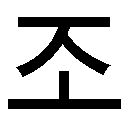
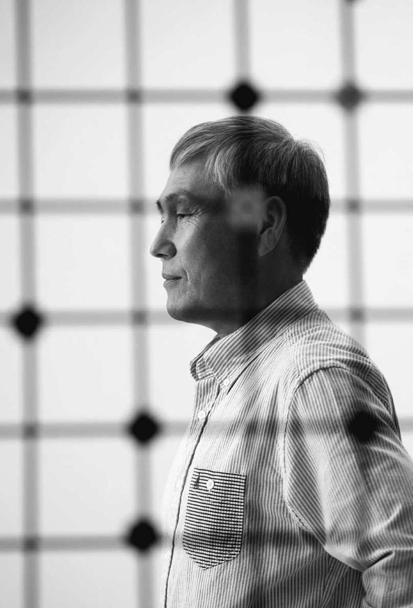

| 世界最強の囲碁棋士、曺薫鉉（チョ・フンヒョン）の考え方～考えれば必ず答えは見つかる～ | |
| 曺 薫鉉 | |
| 株式会社アルク (2016) | |
参照項目から元の箇所に戻るには、お使いのビューワーの仕様に従ってください。または一旦目次を表示し、戻りたい箇所の近くの見出しをタップして戻ってください。
,:
by CHO HOON HYUN
Copyright© 2015 by CHO HOON HYUN
All rights reserved.
Original Korean edition published by INFLUENTIAL
Japanese translation rights© 2016 by ALC PRESS INC.
Japanese translation rights arranged with INFLUENTIAL, Seoul
through EntersKorea Co., Ltd. Seoul, Korea
This book is published with the
support of Publication Industry
Promotion Agency of Korea (KPIPA).
碁盤から学んだ、考える力
私は囲碁の世界しか知らない。五歳のとき、父の手に引かれて木浦にある儒達棋院の門をたたいて以来、還暦をとっくに過ぎた今に至るまで、私が知っているのは囲碁だけだ。
学校もぽつぽつとしか通っていないし、会社に勤めた経験もない。囲碁に関連した人以外には、知り合いもほとんどいない。多くの人が経験する人生のあれこれ、学校での成績争いや、就職競争、進路についての悩み、胸を焦がすような恋、職場でのつらさなど、私は知らずに過ごしてきた。そんな私が、人生についていったい何を語れるだろうかと、心配になってくる。
しかし、私が人生を知らないとは思わない。私は囲碁しか知らないが、その世界の中で激しい情熱と愛を経験し、希望と絶望、成功と失敗、陰謀や裏切りまでも経験した。他人から見たら、碁盤だけを抱えて生きる、退屈で波風立たぬ静かな人生だと思われるかもしれないが、私の頭の中では、誰に負けることもないほど波乱万丈の人生を生きたと思っている。
私は幼いころから、人様の家に世話になった。十一歳から十八歳まで、親元を離れて他国暮らしをした。若くして国内棋戦を席巻し、世界最高の地位まで上った。しかしたった四十三歳で、自分の弟子にすべてのタイトルを奪われるという、つらく幸せな経験もした。私は地に落ちては再び起き上がり、また落ちては立ち上がることを繰り返してきた。もう勝ち負けには慣れたはずなのに、今でも敗北の痛みが和らぐことはない。年をとった今はミスも増え、勝つ日よりも負ける日の方が多くなった。
それでも私は、今も変わらず囲碁を打つ。昔は勝つために打ったが、今は勝ち負けに関係なく、ただ囲碁を打つことが楽しくて、打つ。生まれつきの勝負師と呼ばれた私だが、ふり返ってみれば、人生において勝敗とは、さほど重要なことではないように思えてくる。本当に重要なのは、結果がどうあれ、最善を尽くして自分の道を行くことだ。
囲碁の世界には、私のように第一人者となって自分の存在を明らかにする者もいれば、ナンバー２のままとどまる者もいるし、頭角を現せずに終わる者もいる。野球選手でも、二軍のまま、あるいは補欠にとどまる者がいるように。はたして、そういう人の人生は意味がないのだろうか。決してそうではない。勝てなかった選手でも、勝つために最善を尽くした者なら、その人は成功した人生を生きたと言えるはずだ。
自分の生きる世界が天国か地獄かは、本人の心次第だという言葉がある。若い時分は、それを信じてはいなかったが、今は信じる。私自身も、考え方をちょっと変えただけで、自分の人生が変わるという経験を幾度もしているからだ。李昌鎬にタイトルを奪われたときには本当につらかったが、どうせ奪われるものならば、自分が育てた弟子に奪われる方がいいと考え直したとたん、まるで嘘のように私の気持ちは楽になった。すべてのタイトルを奪われ、予選からも脱落した時には、もう囲碁はやめようかと悩むほど、心乱れた。しかし、ここがどん底だ、あとは上がるのみだと思ったとたん、私の心はとても穏やかになった。
つまり、考えようなのだ。人生は良い日ばかりあるわけではない。良い日と悪い日は交互に、まるで波のように寄せては返すものだ。何の心配もない幸せな日は、何も知らない赤ん坊の時代を除けば、一生の間にほんのわずかしかないだろう。生きることそのものが試練であり、苦痛なのだ。それならば、その長く果てしない苦痛の日々を、どう過ごせばいいのか。それは、考えることしかない。肯定的で創造的な考え方、周囲に振り回されず、自分だけの確固とした考え、人生を軽やかに楽しく過ごせるような考えで、一日一日を埋めていくべきだ。
ところが、ともすれば私たちは、考えのせいで余計に疲れてしまうことがある。大したことでもないのに傷ついたり、起こるわけのないことを心配してみたりもする。小さな失敗にくよくよして、ささいなことに挫折したりもする。
自分に残された日々のために、今私たちがすべきことは、考え方を変えることだ。失敗を乗り越えて立ち上がる肯定的な考え方、いつも正しい方向を選択することのできる健全な考え方、他人とは違う創造的な考え方を育てていこう。
考え方を変えるというのは、心の持ちようを変えることにとどまらない。驚いたことに、考え方が変われば行動も変わり、ついには結果までも変わってくる。個人の力量を最大値にまで引き上げる最も強い力が、考えることだ。
碁盤の上で悟ったことだが、どんな人生でも、その根本は同じだと思う。誰もが、いつ死ぬかわからない薄氷のような碁盤の上を、一歩一歩歩いている。「考え」という偉大な力で、最善を尽くして、自分だけの囲碁を打とう。自分の領土を最大に広げよう。慎重に布石を敷き、果敢に攻め、猛烈に防御しよう。
死力を尽くして戦ったのなら、それこそが勝ったということだ。
２０１５年夏、曺薫鉉
日本の読者の皆様へ
これまで五十八年にわたって、囲碁人生を送ってきた。満四歳のときから勝負の世界で生きてきたせいで、私は今も碁盤を前にすると、勝負欲が自然に湧き起こってくる。以前のように、すべての対局で勝つというわけにはいかなくなったが。二〇一六年三月、ソウルで行われた李世九段とアルファ碁の対局を見守りながら、アルファ碁の想像を絶する計算力に少なからぬ衝撃を受けたが、その一方で、私が絶頂期にあったときにアルファ碁と対局する機会があったら、どうだったろうかと考えていた。そんなふうに私は、囲碁という勝負の世界の中で生涯を過ごしてきた。
四歳で棋院に通い始め、満九歳で世界最年少の入段をはたしたが、私の囲碁人生が本当に始まったのは、留学した日本で瀬越憲作先生、藤沢秀行先生という二人の師と出会ってからだった。ひたすら囲碁のために、一人で日本に渡った子どもに、瀬越先生は「人としての器」を、藤沢先生は「囲碁の技術」を教えてくださった。私の囲碁人生は二人の師によって始まり、今に至るまで続いている。二人から受けた大きな愛情を、私はまだ忘れてはいない。いつの日か、二人の師から受けた愛を、多くの人と分かち合いたいと思ってきた。この本を書きながら、二人の師の精神世界を世の人々に伝える機会になればという気持ちだった。幸い、韓国で本書を読んだ多くの読者が、「名人となる前に人となれ」という瀬越先生の教えに共感してくれたことが、とてもありがたかった。
囲碁が韓国を経て日本に伝わったように、韓国人の私を通じて二人の師の精神世界を日本の読者にも伝えることができるからだろうか。師の母国である日本で私の本が出版されると聞いたときは、本当に嬉しかった。このことは私にとって、単なる偶然ではなく、何か運命のような気さえした。
多くの人は、ドラマ『未生』（韓国で二〇一四年に放映された、大ヒットドラマ。二〇一六年夏より日本版が放映）のように、囲碁を人生にたとえようとする。一局の囲碁が一人の人生ならば、私たちはどの瞬間にも、「人生最高の一手」を打つための「選択の瞬間」と向かい合っている。囲碁しか知らない人生だが、私はときには定石どおり、ときには相手の攻撃に変則的な手で立ち向かいながら、盤上でだけでも「最善の選択」をしようと、すべての瞬間を生きてきた。その選択によって、応氏杯で優勝を勝ち取りもしたし、弟子にタイトルを奪われて無冠となったりもした。数えきれないほどの勝敗を繰り返しながら体得した「最高の一手」を打つ私なりの方法、私なりの考え方を、この本の中に込めてみようと思った。
うまく打てるか否かの問題ではなく、囲碁は私の人生の道そのものだった。その道を歩んでいくうちに、国会議員という新しい道を歩むことにもなったが、私の囲碁はまだ終わってはいない。ただ、私の人生が新しい局面に入ったというだけのことだ。私が歩んだ道が、日本の読者の人生にも何か肯定的な契機となってくれれば、それ以上の喜びはない。そうなれば瀬越先生、藤沢先生のお二人から受けた愛情に、少しでもご恩返しができるのではないだろうか。
目次
一九八九年九月五日、午前九時三十分。私はシンガポールにあるホテルのベッドの上に、ぼんやりと腰を下ろしていた。朝食に熱いスープとパンを少しとったが、何の味もしなかった。シンガポールに到着したとたん引いてしまった風邪のせいだろうか。体中がこわばっていた。もうすぐ最後の決勝戦が始まる。口の中は乾き、心はじりじりと焦っていた。
応氏杯の決勝五番勝負の最終局。私は目をつぶり、呼吸を整えた。深く息を吐くと、これまでの数カ月間のことが、走馬灯のように脳裏に浮かんできた。韓国の棋士として唯一、手に入れた出場権。最後の一手まで予断を許さなかった小林光一との準々決勝と、林海峰との準決勝。中国で過ごした地獄のような十日間。そして奇跡のような勝利を生んだ、数日前の第四局まで......。
応氏杯は台湾の富豪である応昌期が、私財を投じて立ち上げた世界プロ囲碁選手権大会だ。私が決勝に進出した一九八九年が、第一回の大会だった。同じころ日本でも、初の世界大会である富士通杯が始まったが、応氏杯はその意味が少し異なっていた。四年ごとに開かれる「囲碁のオリンピック」であり、賞金はなんと四十万ドルだったからだ。史上最大規模の賞金が誰の手中に渡るか、世界の関心が集まった。
実は応氏杯は、初めから中国人が中国の囲碁のために作った大会だった。中国は囲碁の宗主国としての自負心がとても強かったが、いつも日本の囲碁の陰にあった。ところが一九八四年に始まった日中スーパー囲碁で、異変が起こった。中国の聶衛平が、日本の超一流棋士を相手に、第一回から三回までの大会で、なんと十一連勝を記録したのだ。
この勢いに乗った中国は、応氏杯でどの国が囲碁の最強国かを明らかにしようとした。鼻高々な日本碁界を打ち負かし、世界最高の囲碁強国として君臨しようとしたのだ。参加した棋士の顔ぶれを見ても、中国人が半数を占めており、残りの三分の二が日本人で、韓国人は私と趙治勲九段だけだった。しかし趙治勲九段は日本棋院所属だから、実際に招待された韓国の棋士は私一人だけだった。
私は日本と中国との決闘に招かれた、ある意味で脇役だった。来たければ来い、来たくなければ来なくとも良いと言わんばかりに渡された、みすぼらしい招待状だった。気分は良くなかった。しかし、行かないわけにはいかなかった。たとえ壮絶に敗退しようとも、とにかく出かけて、何かを学ぶべき時だった。ところが、誰にも予想できなかったことが起こった。頭数をそろえるための脇役だったはずの私が、決勝戦に進出したのだ！
人々の関心は、日本か中国かではなく、中国か韓国かに移っていった。中国は主催国としての自尊心をかけて、必ず勝たなければならなかった。韓国は囲碁の辺境の地というイメージを払拭して、世界の囲碁界の中心に立てる絶好のチャンスだった。
決勝は五局のうち三勝した方が勝ちだ。準決勝戦が終わってから五カ月という時を経て始まった対局だった。
決勝戦を数週間後に控えたころ、突然、主催者側から知らせがあった。決勝五番勝負は、すべて中国で執り行うというのだ。考えられないことだった。片方の懐で五局の対局すべてを行うというのは、もう一方にとっては「負けろ」と言われたも同然だった。韓国側は強く抗議した。結局、主催者側が一歩譲り、中国で三局、そして第三国で二局を行うことで合意した。
しかし、その条件すらも、私にはとても不利だということを、中国に出掛けてから悟った。その当時の韓国は中国を「中共」と呼んでおり、なんともやっかいな相手だった。韓国と中国には国交もなく、飛行機の直行便が飛んでいるはずもなかった。私はまず香港に出掛けてビザを取り、そこから飛行機や船、汽車など、あらゆる交通手段を動員して、二日がかりでようやく杭州に到着した。ホテルに着いて荷を解いた時には、すっかりくたびれ切っていた。
加えて私を緊張させたのは、中国の雰囲気だった。初めて空港に降り立った時、すでに殺伐とした空気を感じた。滑走路にはミグ戦闘機の編隊がずらりと並んでおり、至るところに公安が配置されていた。ホテルは広くて快適だったが、その重苦しいムードはどうにもならなかった。散歩や外出などしようものなら、まるで影のように公安が私の跡をつけて来た。午後六時にもなれば、漆黒のような闇と恐ろしいほどの静寂が辺りを包んだ。息が詰まった。対局に対する重圧感より、環境が与える圧迫感が私を苦しめた。
そんな中で初めての対局が行われ、幸いにも私は勝つことができた。私がうまく打ったというよりも、聶衛平のコンディションがひどすぎたのだ。彼は中国人の期待を一身に集め、極度の重圧感に苦しんでいた。しかも心臓の弱い人だから、対局中に緊急事態が発生してはいけないと、酸素マスクを常備していた。
何日か置きに続いた第二局と第三局は、聶衛平の勝利だった。息詰まるような中国の雰囲気が、私の首を絞め上げるかのようだった。滞在が一週間を過ぎたころ、私は一刻も早く中国を脱出しなければ、精神が分裂するのではないかとまで思った。実力の違いではない。その重圧感に耐え切れずに、続けざまに二局負けてしまったのだ。
聶衛平の二勝に、中国全土がお祭り騒ぎだった。私は静かに立ち去る準備をした。ところが中国は、最後の日まで私をたやすく解放してはくれなかった。中国から香港に出ようとした時、書類の問題で足止めを食らってしまったのだ。私はこのまま中国に捕らわれてしまうのではないかと、不安にかられた。
千辛万苦の末、やっと香港行きの船に乗った。ようやく脳に新鮮な酸素が行き渡るような気がした。ああ、もう大丈夫だ！
最後の二局はそれから四カ月後に、シンガポールで行われた。すでに大勢は、聶衛平の勝利に傾いていた。晩餐の席上での彼の態度は、自信に満ちあふれていた。
「中国人が主催する最高の大会で、中国人が優勝するのは当然だ。私の目標は優勝カップだ！」
対する私の目標は、ただ一つ。決してたやすく勝利を渡しはしないということ。最後の第五局まで粘りに粘ってやる。そのためには必ず、第四局を勝たねばならない。いよいよ対局で向かい合ってみると、晩餐の席で見せた自信とは裏腹に、聶衛平にも私に負けず劣らず大きなストレスがあることを知った。実力は五分だ。精神力が勝敗を分けるに違いなかった。
私は第二局で敗北を喫した布石を、そのまま再現した。あの時のミスを繰り返さなければ、きっと勝てるはずだ。互角に対峙して石を打ち合う時間が、じりじりと過ぎていった。黒を置けば黒が優勢に、白を置けば白が優勢に見えた。
ついにチャンスが訪れた。碁盤がほとんど見えなくなるほど石が置かれたころに、相手が小さな失策を犯したのだ。私はそのタイミングを逃さず、すぐに最後の一手を打った。対局が終わり計算してみると、私の一目勝ち。
第五局まで行けたぞ！ 何よりもそれが嬉しかった。敗北よりも恥ずかしいことは、諦める姿を見せることだ。少なくとも、韓国で全冠制覇した棋士が中国最高の棋士にだらしなく負けたとは言われたくなかった。
勝負は原点に戻った。これまでの四局はもはや何の意味も持たず、最後の一局で世界チャンピオンが決まるのだ。聶衛平もやはり私と同じくらい、極度の重圧感に苦しんでいた。彼が一度でも動揺すれば。たった一手でもミスしてくれれば......。私はそこに望みをかけた。
対局が始まった。聶衛平は碁盤の真ん中に模様を張り、私は徹底的に地にカラく打った。私が素早く攻撃すると、彼は防御しながらしぶとくついてきた。ところが中盤になって、私の方が動揺し始めた。突然、集中力が低下して、手が読めなくなった。相手がそれを見逃すわけはない。彼は難しい手で攻撃しながら、私を窮地に追い込んでいった。私は一手一手、かろうじて防御しながら、なんとか息をつないでいた。このまま引きずられて終わりになるのか。頭の中では、もうやるだけのことはやったのだから、石を投げて（投了して）ゆっくり休めば良いというささやきが聞こえた。頭を上げて聶衛平の顔を見た瞬間、私は正気に返った。彼はそれこそ、石を置くたびに息を殺して囲碁に集中していた。心臓が弱いのに加えて、勝たなければならないという重圧感に押しつぶされそうになりながら。私より何十倍もつらいはずなのに、彼はじっと持ちこたえていた。
落ち着け。まだ対局は終わっていない。私は気を取り直した。集中しろ。考えろ。聶衛平がハイレベルな手を打つので、それに応酬するために、私は秒読みに入りがちだった。
集中、集中するんだ......。私は、静かな考えの深淵に潜っていった。ゆっくり、ゆっくりと......。荒かった息が、次第に落ち着いてくるのがわかった。その瞬間、周りにあるすべてのものが消えた。聶衛平も見えなければ、記録係も見えない。いらだちも焦りも、ついには勝ちたいという欲望までも消えた。囲碁と私。ただそれだけが残った。その絶対的な静寂の瞬間、すべてのことがはっきりと見えた。そうだ、ここだ！
遠くからかすかに、残り十秒を読み上げる声が聞こえてきた。一、二、三、四、五、六......。急に現実に戻ってきたことがわかった。七をカウントする声とともに、私は力強く石を置いた。
それがすべてを変えた。追われていた私が、その瞬間、主導権を握ったのだ。それからは私が攻撃し、彼が窮地に追い込まれて防御した。しかし、しばらくすると、彼はもうどこにも逃げ場がなくなった。私が百四十五手目を力いっぱい打つと、聶衛平はがっくりと頭を垂れて、投了した。
「勝った！」
検討室から韓国の応援団の歓声が響いた。ああ、勝った。私は勝ったんだ。
この日の勝利は、韓国の囲碁を一気に世界チャンピオンの座に引き上げた歴史的な事件だった。その後の応氏杯でも、第二回大会で徐奉洙が、第三回大会では劉昌赫が、第四回大会では李昌鎬が次々と優勝し、囲碁界三国志の覇権は一瞬にして韓国のものとなった。
囲碁を学ぶ人たちは、今でもこの日行われた私と聶衛平の棋譜を見ながら討論するのだという。息詰まるような伯仲の血戦の中で、互いに稀に見る手を編み出したからだ。とくに後半、押されていた私が一瞬にして生き返った百二十九手については、今も多くの人がその奥義を知りたがる。
「秒読みまで押されていた瞬間に、どうやってそんな手を考えついたのですか」
私は答える。それは今の私にはわからない、と。私はただ、考えの中に入り込んだだけだ。私が答えを出したのではなく、考えが答えを探し出したのだ。
私は時々、こんなことを考える。人間の世界で起こる複雑で微妙なさまざまな問題を、碁盤の上に置き換えて考えてみたらどうだろうかと。そうすればちょっと難しいことでも、解けない問題はないのではないか。
囲碁は、問題解決の連続だ。対局を行う時はまず頭の中に盤を描き、勝つための計画を立てる。しかし囲碁は、初めに考えたとおりには決して進まない。相手もやはり勝つために、同様に緻密に盤を描き、計画を立てるからだ。だから碁盤の上で私たちは、限りなくタックルを受ける。予想もしなかった問題が発生して窮地に追い込まれることもあれば、生き延びるためにあらゆる手段を動員もする。一手一手、命がけの問題が発生する場所。それが碁盤の上だ。
その意味で、すべてのプロ棋士は、九死に一生を得て生き延びる問題解決の名人だ。基本的に棋士たちは、どんな問題でも解決できないものはないという姿勢で世の中を見ている。幼いころから数多くの難題にぶつかってきたし、結局はどんな問題でも解決できることを見てきたからだ。
時には解けない問題もあったが、自分にできなくとも誰かが必ずその問題を解いてしまう。だから、世間のことすべてが碁盤の上と同じだと考えれば、解けない問題は決してないはずだ。問題は必ず解ける。解けるまで忍耐強く、諦めないという根性さえあればいい。
その根性とは、つまり考えだ。解くことができるという肯定性、必ず解決するという意志、そして解決の方法を模索するのに必要なすべての知識と常識、体系的な思考、独創的なアイデア。これらすべてを包括する概念を、私は「考え」と呼びたい。「囲碁式思考法」と呼んでもいいだろう。棋士のマインドこそ、このような要素をすべて持ち合わせているからだ。
もしも世の中のことがすべて碁盤と同じならば、すべてのことは解決できる問題だ。すぐには糸口すら見つからず、いじればいじるほど悪化するかのように見えても、強い意志を持って眺めれば、解決策は必ずある。もちろんその解決策とは、必ず望んだ結果を得られるものではないだろう。たとえ最上でなくとも最善のために努力し、それでなければ次善の策を選択する。あるいは譲歩や妥協、それともきれいさっぱり諦めて別の目標に向かうというのも、一つの解決策だ。
重要なことは、その過程は青天の霹靂のように訪れるわけではなく、自ら導き出さなければならないという点だ。多くの人は、問題が起こるとそこに積極的に向かい合わずに、避けたり知らんぷりをしたりする。解決しようと努力する前にまず疲れてしまって、なるようになれというふうに行動する。囲碁に例えれば、危機に追い込まれた状況で、何も考えずにどこでもいいと石を置くのと同じだ。
しかし棋士たちは、決してそんなことはしない。たとえ秒読みとなっても、最後まで執拗に次の手を考える。たとえ終わりの見えた囲碁だとしても、投了するまでは一手一手、最善を尽くす。好手でなくとも妙手でも、そうでなければ悪手でも、猛烈に悩み、自ら選択するのだ。
囲碁には明確な目標があり、論理があり、ゲームの法則がある。棋士のマインドは、一種の知略家だ。戦略と戦術を立てて布石を行い、絶え間なく形勢を読み、一手一手慎重に石を打つ。
囲碁は、勝敗をかけたゲームだ。どんな状況に直面しても、解決するためにあらゆる手を考えなければならない。時には崖っぷちに追い詰められたり、罠にかかってもがいたりもする。時には自らが招いた失敗で大きな犠牲を払うこともある。しかしそれでも目標は変わらない。つまり、勝つために最後まで最善を尽くして戦うことだけだ。
誰もが日々、生存という人生の現場で、自分だけの碁を打つ。一日に一目ずつ石を置いたとしたら、今の私の碁はどこまで進んだろうか。まだ布石の段階だろうか。それともすでに中盤まで進行しただろうか。あるいはすでに勝負手に向かって、走っているのではないだろうか。
どこにいようとも、自ら負けを認め、投了しない限り、あるいは盤をすべて埋めない限り、人生という囲碁は終わらない。今、どんな危機に直面していようとも、まだ生き残る望みはある。囲碁が私に教えてくれたことは、この世には解けない問題はないということだ。集中して考えれば、必ず答えは見つかる。自分では解決できなかった問題でも、後になってふり返ってみれば、意外にも答えがあったことを悟ることもある。
人生は、それ自体が試練だ。考える力こそが、その試練を意味を持って切り抜けられるよう助けてくれる。私はその過程こそが、自分自身を発見し、幸せを見つける道だと考えている。
私はいわゆる囲碁の神童だった。五歳のころから父の打つ囲碁に口を挟むようになり、棋院に出入りして大人たちを負かした。九歳で入段試験をパスして、世界最年少のプロ棋士となった。
大人たちは私が石を一つ置くたびに、目を丸くして嘆声をもらした。こんなちびっこがどうやってこの手を思いつくのかと、皆が不思議がった。天才という言葉を耳にタコができるほど聞いたが、ふり返ってみると私は天才でもなければ、囲碁もよく知らなかった。私はただ、考え方が自由奔放だっただけだ。
当時の大人たちの囲碁は、日本の定石の影響を強く受けていた。定石とは、昔から今まで続いてきた、攻撃と守備に最善だと言われる石の筋（手順）を言う。数学にも定石があるように、石を打つにも一定の公式とパターンがあるのだ。
しかし幼い私は、そんなものがあるということすら知らなかった。私が知っているのはただ、勝つということだけだった。勝つ方法を探して、大人が考えもつかないおかしな手を思いついたのだ。
後に日本に行き、初めて定石を習った時、私はこれまでの自分の囲碁がどれほどデタラメだったかを悟り、恥ずかしくなった。定石は一種の基本技だが、それを全く知らずに囲碁を打つことは、手綱のはずれた子馬も同様だ。定石で一丸となった日本の院生たちにあっけなく負かされながら、私は基本技の重要性を実感した。
しかし、いったん基本技をマスターしたら、再び子馬にならなければならない。囲碁は型にはまったら終わりだ。考えと考えの戦いに、相手の予測できる当たり前の手しか打てなければ、勝てるわけがない。強い力を持つためには、何よりも異なる考えを持たなければならない。
応氏杯で、林海峰との準決勝の一局の際、私は「アキ三角」を二度も作って話題になった。アキ三角とは、三つの石が直角で結ばれる形で、一般的には絶対に作ってはならない愚形（石が固まって働きが鈍る形）と言われる。活路が狭められて非効率的だからだ。「アキ三角は打つな」という法則が語られるほどだ。
しかし私は、そうとは見なかった。アキ三角だけを見れば非効率的だが、碁盤全体を見た時にはむしろ危機を乗り越える妙手になると考えた。
林海峰との対局の時、私にはこの妙手がくっきりと見えてきた。形はアキ三角だが、上下に見合い（同じ価値を持つ二つの地点。この場合はどちらか一方を取れば、損をしない場所）を作り、相手の大石を断つ筋となると確信した。
日本の棋士だったら、アキ三角というだけで、その地点に打たなかったはずだ。日本の囲碁は形と原則を非常に重要視するからだ。しかし私は、そんなことは関係ないと考えた。どうせ勝負は勝った人のものだ。果敢に石を置いた。
専門家たちはこの日のアキ三角について、「韓国流の出発」という畏れ多い評価を与えてくれた。日本の囲碁の統制を外れ、独自の道を歩み始めたということだ。実際にこれ以後の韓国の囲碁は、日本が作り上げた原則と禁忌を一つ一つ破りながら成長を始めた。自分たちなりの独特な考え方で、世界最高峰だった日本の囲碁を乗り越えることができたのだ。
日本も認める韓国流の定石は、既存の日本の定石とはさまざまな違いがある。日本の定石は形が単純な線を成していて優雅な反面、韓国流の定石は奇怪な形態を成す。定石と呼びようもないほど、おかしな形が出来上がる。日本の棋士たちは、初めは品位が落ちるとあざ笑っていたが、おかしな定石にやられることが増えると、今度は焦り始めた。
韓国の棋士たちは、日本の定石ではどうしようもないと判断されたものまで、しぶとく試して活路を見出した。そのために、石の効率性は全く無視された。攻撃のためであれば、時に深く入り込んで、乱打戦を行ったりもした。日本の棋士たちは品がないと考えたが、こちらは関係なかった。どのみち、勝てばいいではないか。
これは囲碁界に大変なパラダイムの変化をもたらした。世界の囲碁をリードしていた日本は、囲碁を通じて一種の美学を追求していた。彼らにとっての囲碁は、道であり礼であった。ところが韓国の囲碁が登場して、そんなものは関係ない、戦おうと挑んできたのだ。囲碁が勝負をかけた頭脳スポーツだと認識され始めたのは、この時からだ。
私は、これは韓国人の気質と関係があると思っている。韓国人は体質的に、型にはまったことを嫌う。スポーツを見ても、野球のように変則が多かったり、そうでなければサッカーのように規則が単純なものを好む。ルールをしっかりと守らなければならない種目は、いらいらして見ていられない。また韓国人は、戦いには必ず勝たなければならないという強い勝負欲を持っている。競技の中継を見ても、効率的にしっかり進めるものよりも、生きるか死ぬかの闘魂丸出しのものの方がずっと多い。強い生存本能と勝負欲が、創造的な思考を生み出したのだ。
歴史を見ても、世の中を変えたのは、信じて認めた者ではなく、疑いを持って質問した者だ。問題意識を持って社会を見た者たち、それを解決するために猛烈に悩んだ者たちが、この世を変化させてきた。
囲碁の発展も、それと同様だ。定石どおり打つ者しかいなければ、はたして囲碁は四千年の歴史を経た今まで生き延びただろうか。木谷實、呉清源、林海峰、小林光一など、囲碁界に新風を吹き込んだ人々は皆、定石を超えた新しい手を編み出し、彼らだけの定石を作り出した。その後を、韓国の囲碁界がバトンを引き継いで新しい定石を次々と生み出し、今や中国の棋士たちが新しい棋風をリードしている。
変化と革命は、こんなふうに行われてきた。考え、問題意識を持ち、戦う力を養った後、ついに挑戦して勝つのだ。その出発はいつも、他人とは異なった考えを持つ、創造的な思考から始まる。
囲碁には「流」というものがある。囲碁の棋風の違いを言う言葉だが、ここには自分なりの考えや、求めていることが現れる。
私の囲碁は、ツバメのように素早く華麗だという評価を受けている。型にはまらず、危険を顧みず激しい戦いを行うという意味だ。反対に、李昌鎬は、ゆっくりで平凡だと言われる。相手の挑発にも動じずに耐え、黙々と自分の道を行くスタイルだ。だから彼には「石仏」というあだ名がついた。
徐奉洙は泥沼のような戦いを恐れないけんか碁で、「雑草」というあだ名が付いた。劉昌赫は厚みがありながらも華麗な攻撃で、「一枝梅」（古典に登場する義賊）と呼ばれる。このように、しっかりとした囲碁の世界を構築した者たちは皆、自分なりの「流」を持っている。
この「流」は、絶対的に強いというわけではない。相手によってその「流」が強く作用することもあれば、弱く作用することもあるが、それだけではない。すべての流には強みと弱みがあって、互いに補強し合いながら進化を続けていくのだ。
棋士にとって自分の「流」は、一種の自我だ。どのような碁を打つかは、この世の中をどう生きていくかという、自分なりの宣言だ。だから巨匠たちの囲碁の対戦は、互いの世界観や価値観の衝突のようにも思える。囲碁が四千年もの昔から生き続け、今も健在である理由は、単純なゲームではなく、その中から人生観や哲学を読み取ることができるからだ。
ところが残念なことに、最近の韓国の囲碁からは、新しい流を発見するのが難しくなってしまった。新人棋士が囲碁を打つのを見ていると、かなりうまい。しかしどこかで見たことのある碁だ。誰かの棋譜、誰かが創案した定石どおりに打っていると感じることが多い。そろそろ独創的な手が出てきても良さそうなものなのに、いくら待っても、当たり前の手しか出てこない。このごろの囲碁はどうしてこんなにつまらないのかという不満が、囲碁愛好家たちの口から出る。なぜこんなことになったのか。私は、その理由は教育にあるのではないかと思っている。
最近の囲碁教育は、学習塾形式だ。学習塾では、先生が一つ一つ丁寧に教えてくれる。短時間で結果を出し、学生にも親にも満足感を与えるためだ。だから学生に考える自由を与えることより、まず公式を覚えさせる。考えながら碁を打つのではなく、公式に従って打つことばかりを教える。その結果、子どもたちの囲碁の試合は、考えを競うのではなく、どちらがより多くの情報を手に入れたかを競うテストのようになってしまった。こんな囲碁教育では、自分なりの「流」が生まれるわけがない。詰め込み式の教育を受けた子どもたちが、教科書以外の知識を想像することができないのと同じことだ。型にはまった教育は、型にはまった思考、型にはまった自我を作り出す。考えが限定されれば、自我も限定されてしまう。
私の人生での最大の幸運は、私の自我を原型のまま保存してくれた良き師と出会ったことだ。私の師匠である瀬越憲作は、韓国ではあまり知られてはいないが、日本では現代の日本囲碁界の礎を築いた英雄として尊敬を集める人物だ。師は生涯、三人の弟子しかとらなかった。世界の囲碁の流れを変えたと評価される呉清源、関西棋院の創始者である橋本宇太郎、そして私の三人だ。呉清源は一九三〇～一九五〇年代、日本のトップ棋士たちとの「打ち込み十番碁」（十戦のうちどちらかが四戦勝ち越すと、実力差があるとして、手合い割りが変更される［＝相手にハンディを与える］方式で戦う）で、次々と相手の手合い割りを改め、「昭和の碁聖」として崇められた人物だ。橋本は一九四〇～一九七〇年代にわたって本因坊戦、王座戦、十段戦で何度も優勝を果たした人だ。そして私は、世界最初の囲碁オリンピックである応氏杯で優勝してチャンピオンになったから、師は三人の弟子すべてを世界の第一人者として育て上げたことになる。
私は十一歳の時に師の生涯最後の内弟子となり、九年の歳月を師と共にした。こぢんまりとした日本式の木造住宅で、八十歳を超えた師と十一歳の私、そして師の息子さんの妻である「ママちゃん」と、後に共に暮らすことになる秋田犬の弁慶、三人と一匹でその家に暮らした。その九年の間に、私が師から囲碁を習ったのは、それこそ指を折って数えられるほどしかない。師は指導や対局はほとんどしなかった。まれに並べ直してみよと言われる以外には、あまり話もしなかった。
幼い私は、とても寂しかった。師匠はお年のせいで、頭がよく働かないのだろうか。私をなぜ呼び寄せたのかも忘れてしまわれたのではないかと、心配になった。しかしそれは誤りだったということに、何年もたってからようやく気付いた。ある日、夕食の時に師が私の顔をじっと見つめて、こんなふうに言われた。
「わしが答えを与えてくれるとでも思っているのか。答えがないのが囲碁なのに、わしが答えられると思うのか。答えはおまえが自分で探せ」
そして、こう付け加えた。
「答えはないが、答えを探そうと努力するのが囲碁だ」
九年も一緒に暮らしながら、瀬越先生は私に囲碁をどう打てとか、そうじゃなくてこう打てといった話は、ただの一度もされなかった。私が外で誰とどんな囲碁を打ったか、師はすべて知っていたはずなのに、一切干渉をしなかった。私はまさに全く型にはまらず、自由奔放に囲碁を習った。
先生が悩む学生に答えを教えるのは、実は一番簡単な解決法だ。しかしその方法では、学生は答えを受け入れるだけで、悟りは得られない。悟りとは、考えるという過程を通してこそ得られるものだからだ。
瀬越先生は、囲碁をどう教えれば良いかを正確に知っていらした。師はただ方向を示すのみ、一人で学べるように放っておくのが、正しい囲碁の教育なのだ。師のこの教育方針のおかげで、私はたった一つの妙手を探し出すために幾晩も苦しみもがきながら、黄金のような十代を送ることができたのだった。
公式を覚えて問題を解くのは簡単だ。しかしその方法では、少しでも公式から離れた問題が出たらお手上げだ。反対に、一人で悩み抜いた者は、公式など知らなくとも大丈夫だ。考えながら、自分だけの解き方を探し出せばいい。
定型化された囲碁教育を受けたことがないから、私はいつも自分のやり方で、自分の思いどおりに囲碁を打った。それが後に、私ならではの攻撃型囲碁となり、「ツバメ流」「魔術師」「火炎放射器」などという独特の評価を受けることになった。
考える自由を与えれば、子どもたちは自分で考える。自分で考えた子どもは、個性が強くなり自我がしっかりと育つ。人生を自分だけの方式で生きてゆく自信がつき、確実な人生を形成することができる。
考えは、どんな選択をすべきか、どちらの方向に行くべきか、その答えを導く道具だ。考えることをしない者は、日常の小さな選択まで、人に尋ねて顔色をうかがう。ああすればいいのかこうすればいいのか、心配しては不安になり、誰かに助けを求めてしまう。
最近、人生の悩みに答えてくれるメンター（助言者）の需要が爆発的に増えている理由はなぜだろうか。それは、一人の力で考えられない人が増えたという証拠なのではないか。不安な自我を抱えたまま生きる人が増えているということではないだろうか。
人は、幸せがお金や名誉、成功から来るものと考える。しかし私は、本当の幸せはしっかりとした自我から来るのだと信じている。自我とはすなわち、自尊心だ。自我がしっかりしていれば、どんな状況になっても迷いはしない。他人の視線や社会の物差しを気にせずに、自分の信念どおりに行動する。
もちろんこのような自我は、たやすく手に入るわけではない。一人で考える習慣と、自己省察、深い思考を通じてこそ、得ることができる。どこに出ても他人の顔色を気にせず、臆せず、自分の考えを堂々と明らかにし、自分の信念どおりに行動する人。そんな人になりたければ、まずは考えることから始めよう。
「他人と異なる独創的な手は、どうすれば思いつくのですか」
そんな質問をすれば、プロ棋士たちはたぶん、同じように答えるはずだ。問題を解くために研究し努力すれば、ある日突然、新しい手が浮かんでくる、と。創造的に考える方法を知っているから、創造的な手を見つけ出せるのではなく、なんとかして解こうと努力するうちに、ある瞬間、新しい手がひらめくのだ。プロ棋士が秒読みに入った瞬間ですら奇抜な妙手を思いつくのは、普段から問題を解くために、しつこく食らいついてゆく訓練をしているからだ。
その意味で、創造性は問題を解決しようとする意志と、しつこい探求心の結果だと私は考える。生まれつき天才的な頭脳を持った人でも、好奇心と探求心がなければ創造性は発現しない。
人々は、創造的な考えは創造性のある人だからこそできると考えがちだ。ビル・ゲイツやスティーブ・ジョブズのような人、有名な美術家や音楽家のような人だけが、創造的な考えをすることができると考えている。しかし創造性とは、何かを発明したり、新しい芸術を作り出したりすることだけではない。創造性は至るところにある。私は、妻が私のために作ってくれる料理にも、創造性を感じる。同じ料理でも、何かが違うからだ。妻が作ったシッケ（麦芽を使った発酵飲料）はおいしいだけでなく、飲んだ後の消化も良い。おこしやあめにも、他のものとは違うさわやかな味を感じる。何を入れたのかと尋ねると、シッケにはショウガを少し入れ、おこしにはミカンの皮を擦って入れたそうだ。
創造性を広くとらえれば、「他人とは違う考え」だと思う。「違う考え」は、すぐには思いつかない。何かに対して問題意識を持ち、それを解決しようと努力する過程から生まれるのだ。
妻が同じ料理を他人とは違うやり方で作るのは、家族がより健康でいてほしいという思いから生まれたものではないだろうか。シッケを作って飲ませようと思った時、たくさん飲むとシッケの冷たい成分でお腹が痛くなるかもしれないと考え、それを解決するために悩んだ結果、体を温める作用のあるショウガを入れることを思いついたのだろう。おこしやあめは、口の中がべとべとしてすぐに飽きてしまうから、後味がさわやかになるようミカンの皮を入れることを思いついたはずだ。
創造的な考えの過程は、どの分野も同じだろう。その核心は、問題意識と質問だ。この問題を改善する方法はないだろうか。何がいけないのか。そうやって自分に質問し、常識と知識を動員して推測し、解決策を探し出す。そんな試行錯誤を繰り返しながら、望んだ結果を引き出すことが、創造性の過程だと思う。つまり、創造的な人になりたければ、何よりも問題を解決しようとする意志が強くなければならない。そして幾度も心の中で、もっと良い方法はないかと質問を繰り返すことだ。
創造性の基本的な出発点は「質問」にある。質問は、好奇心旺盛な人や、問題や欠陥に敏感な人が行う。つまり、問題が目に見えたらそれを解決しなければ気のすまない人が、質問を繰り返すのだ。その意味で、創造力の実体は創造的な能力ではなく、疑問を持ったら「解かずにはいられない性格」にあるのかもしれない。
囲碁の名人たちを見ても、そうだ。囲碁に関して言えば、私たちは絶対、気になることをそのままにしておけない。解けない手と出会うと、寝食を忘れてしまう。道を歩いていても、何か用事のある時にも、寝る時も、そのことが頭を離れない。思い切って同僚の棋士を訪ねて、助けを乞うこともある。膝を突き合わせて考えれば、もっと早く問題を解くことができるからだ。
ある日、韓国棋院の事務所に出かけたところ、芮廼偉九段とばったり会った。彼女は私を見ると嬉しそうに近づいて来て、一枚の絵を差し出した。
「この定石で石の順序をこう変えた場合、次の展開はどうなるでしょうか」
それは棋士ならば誰でもよく知っている定石、「小林流」だった。定石は長い時間をかけて検証され、最も模範的だと認められたものだから、それを疑う者はどこにもいないのが当たり前だ。ところが芮九段は、どうも納得がいかないようだった。石を一つ変えただけで、長く信じられてきた小林流が崩れるのではないかと悩んでいた。
芮九段は中国の女流棋士で、一九八八年に女性として世界初の九段になった人物だ。穏やかで落ち着いた性格の持ち主だが、彼女の囲碁人生には紆余曲折が多かった。中国棋院との不和のせいで、追われるようにして中国を離れ、日本とアメリカを行き来しながら、十年もの間、囲碁を打てずにいた。幸い、韓国棋院との話がうまくいって、一九九九年から韓国で活動を始めた。中国に戻るまで韓国で十三年を過ごし、その間驚くべき記録をいくつも打ち立てた。女流棋戦での優勝二十六回にとどまらず、韓国初どころか世界で初めて、男性棋士を破って王位に就いた。それが韓国の国手戦であり、つらいことにその時負けた男が、この私だった。芮乃偉は韓国囲碁界史上最初の女性国手であり、唯一無二の外国人国手として記録された。
芮九段の質問は、私が全く考えたこともないものだった。すぐに答えは浮かばない。何日かして李昌鎬をはじめとする何人かの後輩棋士たちと会った席で、私はその話をしてみた。
「これは芮九段からの質問だが、おまえたちはどう考えるか」
そこには碁盤もなければ絵もなかったが、私たちは夢中になって討論を交わした。初めは本当に芮九段が疑ったとおり、定石が崩れるかのように思われた。しかし討論を続けてみると、やはり形勢に変わりはなかった。しかもそれを証明しようと努力する過程で、李昌鎬がこれまで考えてもみなかった新しい手を発見した。
もしも芮九段が小林流に疑問を抱かなければ、どうなっていただろう。おそらくそのために頭を痛めることはなかっただろうが、新しい発見をするチャンスもなかっただろう。彼女が疑問を抱いたからこそ、私たちは共に考え抜いた。そのおかげで、創造的な新しい手を見つけることができたのだ。
このように、すべての発見は質問から始まる。「なぜこうなるのか」「他の方法はないか」「これが本当に最善の策なのか」、こういった質問をしなければ、考えは始まらないのだ。
棋士たちは相手の一手一手を、決してそのまま受け入れたりはしない。私たちはそれを、非常に意味深長に受け止める。「なぜここに置いたのか」「この手にはどんな意図があるのだろう」。与えられた時間は短いが、私たちは恐ろしいほど集中して考えている。そして必ずそうでなければならないという理由を探し出し、次なる手を決める。
人生の重要な瞬間も、囲碁のようにそうやって一手一手、深く考えて打つことができたらどれほどいいだろう。漠然とした感覚で決定したり、あるいは見えない圧力や強要によって、または時間に追われて適当に決定したことは、必ず後悔を招く。
だから、その都度浮かぶ質問があれば、絶対に無視してはいけない。すぐに答えを出せないからと、避けてしまうのもいけない。「この問題はなぜこうなるのか」「どうやって解決すべきだろうか」「何が正しいのか」「どういう方法が最も合理的で効率的か」。そんな質問に対して猛烈に悩み、答えを求めなければならない。
私は、このような質問と答えの思惟体系が、碁盤の上だけに適用されるのではなく、勉強や仕事、人間関係、自己管理など、どんなことにも適用されると信じている。暗記した知識は長続きしないが、質問と答えを通じて理解した知識は、自分のものになる。質問し答えを求めるだけで、実力と能力が向上し、人格的にもより完成された人間になるのだ。もちろん、こうやって悩んで得た答えが、最善の結果を生むとは限らない。しかし少なくとも、自らが選択したことだから後悔も少ないし、責任を取る心の準備もできるだろう。だから「なぜ」という質問が浮かんだ瞬間こそ、今よりもより良くなるチャンスの到来だ。この機会を逃す手はない。集中して考えることだ。すべてのことには必ず根本的な理由があり、必ずより良い方法が存在する。
考えることは面白くないし、頭の痛いことでもある。すぐに答えが浮かばず、むしろ混乱してしまうこともある。しかしついにその答えを見つけた時、どんなものにも代えられないほど大きな喜びが訪れる。初めは答えを見つけるまで、長い時間がかかるかもしれない。しかし考えることが習慣となり、質問して答えを求めるその人なりの体系が形作られれば、より早く答えに向かって進むことができるようになる。囲碁の名人たちがじっと座ったまま何十手先まで読むのも、数えきれないほど訓練を積んだからに他ならない。これが習慣となれば、性格にも変化が訪れ、もっと慎重で思慮深く、なおかつ積極的な人間になることができる。人生のすべての問題から逃げずに立ち向かって解決する人間、諦めずに最後まで努力する究極的な人間になることができるのだ。
日本に留学中だった十五歳のころ、危うく囲碁と生涯の別れを告げることになったかもしれない事件が起こった。
プロへの入段試験をパスした私は、藤沢研究会に参加した。藤沢研究会は、日本の囲碁界の奇人として知られる藤沢秀行先生が運営する私設の研究会だ。私は毎日のようにそこに通い、大竹英雄、林海峰ら日本の囲碁界をリードする、そうそうたるメンバーと付き合いながら囲碁を学んだ。
藤沢先生は当時、日本碁界の最高のスターだった。瀬越先生が私にとって厳格で恐ろしい祖父のような存在だとしたら、藤沢先生は私には親しい父親のような存在だった。藤沢先生は幼い私に、まるでいたずらでもするかのように、腕まくりをしてみせた。
「かかって来い、くんげん！」
私たちはいつも、早碁（短い時間で打つ碁）で対戦した。藤沢先生は、囲碁は本来、計算よりもひらめきで打つべきだと考えていた。私も素早い囲碁を打つ方だったので、私たちが対決を始めると、互いに石を打つ音が騒々しいほどだった。
瀬越先生の元で一人寂しく囲碁の勉強をしていた私にとって、藤沢研究会はまるで安息の地のようなところだった。ここに来れば、囲碁を思い切り打つことができるだけでなく、棋士たちと付き合って親睦を深めることもできたからだ。皆、私よりも先輩だし年も上だったので、末っ子の私は皆からかわいがられた。
その中に、安倍吉輝六段がいた。彼は当時二段だった私にいつも負けながらも、会うたびに決闘を挑んでくる囲碁の闘士だった。
その日も私が藤沢研究会で午後の時間を過ごしていると、いつものように彼が近づいて来た。
「くんげん、今日は賭け碁で勝負しよう！」
それはできないことだった。瀬越先生が絶対にやってはいけないと私に念を押したことの一つが、賭博と賭け碁だった。
「すみませんが、できません。瀬越先生が賭け碁はやるなとおっしゃいました」
ところが安倍六段はしつこかった。
「ここでなら平気だよ。俺たちだけじゃないか」
「すみません。先生から絶対にダメだと言われました」
私は冷や汗をかきながら、必死になってその申し出を拒んだ。ところが横で見ていた藤沢先生があおってきた。
「くんげん、いいじゃないか。勝負欲を育てるためで、賭けだと思わなければいいだろう。一局百円ぐらいの賭けなら大丈夫だろう」
しかたなかった。それ以上拒むこともできずに、私は碁盤の前に座った。
賭け碁が始まると、藤沢研究会のメンバーはぞろぞろと私たちの周りに集まって、応援を始めた。
「くんげん、手加減してやれよ！」
「安倍さん、くんげんの鼻っ柱をへし折ってやれ！」
そんな言葉を聞いているうちに、私は瀬越先生の命令も忘れて、勝ちたいという気持ちが募ってきた。
一局、二局、三局。私は三回連続して勝ってしまった。そこで終わればよかったのに、殺気立った安倍六段はもう一局、もう一局と、しつこく私をつかまえて放さなかった。四局、五局、六局。私が六局連続して勝つと、ようやく安倍六段は頭を振った。
その日、私は六百円を手にした。受けとらないと拒否したのだが、安倍六段は、約束は約束だと言って譲らず、私の手に六百円を握らせたのだ。そして私はそれきり、そのことをすっかり忘れてしまった。何日かして、私は瀬越先生に呼ばれた。
「くんげん、こっちに来い」
師の顔は厳しかった。
「安倍吉輝と賭け碁をしたのか」
しかたなく私は「はい」と答えた。その瞬間、師の顔が恐ろしく変わった。そんな怖い顔を見たのは、初めてだった。
「今すぐこの家から出て行け！ おまえには碁を学ぶ資格はない。わしとの縁もこれまでだ。すぐに韓国へ帰れ！」
それで終わりだった。師に二言はなかった。一度だめだと言ったら、それで終わり。弁解も謝罪も無駄だった。私は着るものをまとめて、師の家を去らねばならなかった。ママちゃんが地団太踏みながらもどかしがって、門の外までついて来たが、師の怒鳴り声で慌てて家の中に戻って行った。
目の前が真っ暗だった。多くの期待を背負って日本に留学したのに、その結果が破門だなんて......。日本では一つの道場から破門された者は、別の道場でも受け入れてくれないという文化があった。破門とは、囲碁界から葬られることに他ならなかった。もし韓国に戻って囲碁を続けたとしても、その汚名は死ぬまで付きまとうに違いなかった。
行く当てもなく、ただ歩いた。どこに行けばいいのか。どうすればいいのか。私には何も考えられなかった。呆然とさまよううちに、辺りは暗くなっていた。ようやく私は、とにかくどこかに身を寄せなければと考えた。思いついたのは、時々訪れたことのある韓国人が経営する食堂だった。主人にしばらく置いてほしいとお願いすると、皿洗いと掃除を手伝えば置いてやると言われた。
翌日から私は、皿洗いの少年になった。朝早くから野菜を洗い、皿洗いをし、掃除と後片づけをする日が続いた。そんなふうに一週間が過ぎた。このまま日本を去らなければいけないのだろうか。両親に何と言っていいかもわからなかった。毎晩、師のお宅に電話を掛けて、ママちゃんに先生のご機嫌を伺い、もう一度私を弟子に迎え入れてもらえる可能性はないだろうかと、泣きじゃくりながら尋ねることしかできなかった。
十日ほどたった日、ついにママちゃんから知らせがあった。瀬越先生の怒りがおさまったから、戻って来てもいいという。信じられなかった。本当だろうか。あの頑固な先生が、なぜ私を許してくださったのか。
大急ぎで師の元に走った。ベルを鳴らすと、本当に戸が開いた。師は私の顔を見ても、何も言わなかった。私たちは黙って一緒に夕食を食べ、そしていつものようにそれぞれ部屋に戻った。師はいつもと同じように晩酌をして、私はいつもどおりに囲碁の本を開いた。
二週間にわたる破門事件は、それで終わりになった。後でわかったことだが、私が追い出されたという噂を聞きつけた大勢の人が、瀬越先生を訪ねて事情を説明したのだという。安倍六段をはじめ、藤沢先生も、何度も瀬越先生を訪ねて許しを乞うた。とくに安倍六段は、すべてのことは自分の責任だと謝った。賭け碁をしようと言い張ったのも自分だし、それを外で言いふらしたのも自分だったからだ。決して私を困らせようとしたわけではなく、むしろ私の実力が大したものだということを誉めたくて言いふらしたのだが、まさかそれが師の耳に入って問題になるとは思わなかったのだ。
この事件は私に、少なからぬ衝撃を与えた。幾度考え直しても、その場で私が賭け碁をしないで断り通すわけにはいかなかった。もう一度その時に戻ったとしても、賭け碁をするしかないはずだ。しかし私は、原則を破った。前後の事情がどうであれ、原則を破ったことは事実だし、だから罰を受けるのも当然だ。師はどうしてそんなに厳しかったのだろうか。当時の私は、その頑固さが理解できなかった。しかし大人になり、自分も師匠となって経験を積むうちに、次第に理解できるようになった。
師は初めて私と会った瞬間から、私が第一人者になる才能があることを見抜いていた。問題は、才能ではなく人格だった。こいつを人としてまともに育てられるか。囲碁の名人にふさわしい品格を備えさせることができるか。もう弟子はとらないと決心していた師が、死を間近にした年で私を受け入れた理由は、それだった。私をまともな人間に育てなければという使命感を感じたからだ。
「非人不伝不才勝徳」という言葉がある。人格に問題のある者に、高い位を与えたり秘蔵の技を教えてはならず、才能や知識が徳より勝ってはいけない、という意味だ。たった数百円の賭け碁に過ぎないが、叱っておかなければ、後になって大きな人格の欠損をもたらすだろう。それで、あの時師は厳しく罰したのだ。
その原則は厳しかったが、そのおかげで私は人としての道理を学んだ。あの時にそんな目に遭っていなければ、私は少しずつ横道にそれることに大きな問題意識を持たなかっただろう。もしかしたら原則をたやすくないがしろにする人間になっていたかもしれない。
もちろん、もしあの時に再び戻ったとしても、どうしようもなく賭け碁を打つはずだ。しかしそれが原則を破ることであり、二度と繰り返してはならないことだと知っていることと知らないこととでは、大きな違いがある。それを知っていれば、たとえ道を外れても、一線を踏み外さず節制することができるのだ。
その後も私は、師に内緒でパチンコもやったし、麻雀で小遣いをすってしまったこともある。囲碁とは品格が違うものではあるが、頭脳争いと勝負という側面から、面白味を感じたからだ。しかし絶対に、囲碁の勉強に差し障りのあるほどはのめり込まなかった。幼いころ師に叱られた記憶が、いつも心の中で重心を保っているからだ。
私は今、趣味や遊びで賭け碁や賭けゴルフもするし、時には競馬やポーカーもする。しかしそれに大金を賭けようという気持ちは全くない。囲碁の勝負での熱気を冷ますための軽い娯楽のつもりでしかない。
社会的に高い地位にある人が、過ちを犯して辱めを受ける場面を時々目撃することがある。ちょっとした失言や失敗の場合もあるが、私生活の乱れや不正取引など、法を犯す行動や道徳的な問題もある。頭も良ければ金銭的にも不自由のない人々が、なぜそんなことをするのだろうか。
考えは行動であり、選択だ。ある人がどんなことを考えて生きているかは、その人の選択を見ればわかる。体のいい百言が何になろう。一つ選択を誤ればただそれだけで、その人がどんな考えを持った人間かすべてわかってしまうのだ。
悪い人間が世間に認められ、成功の道を歩むのを見ると、考えが揺らぐこともある。自分もあんなふうに生きてみようか、と。原則と道徳を守ることはむしろ損ではないかと、価値観が揺らぐこともある。しかし長い時間をかけて見守っていればわかる。悪人が成功するのは刹那的な現象に過ぎないということが。今はうまくいっているかもしれないが、それは永遠に続くわけではない。悪人は必ず罰せられ、善人は必ず福を授かるというわけではないが、それでも大きな視野から見れば、悪い人間はやがて世間から消えてゆき、良い人は結局、社会から認められる。
非常に珍しいことではあるが、プロ棋士の中にも、正々堂々と実力で勝負するのではなく、小賢しい策を弄する者がいる。たとえば相手が、残り時間の規定や着手の規定など、ささいな規定に引っ掛かるようこっそり誘導するのだ。外から見れば反則負けとなるのだが、囲碁を打つ者ならば相手に引っ掛かったことがわかる。悔しくて頭に来るが、私は放っておく。どうせそんな人間は、長続きはしないからだ。そうやって勝ったからといって何になるのだろう。一度や二度ならそんな浅知恵が通用するかもしれないが、長続きはしない。とくにトップレベルには決して通用しない手だ。
トップの座には誰もが就けるわけではない。熱心にやったとしてもすべての人が行き着くわけではなく、実力があってもその座に就けない人もいる。運も必要だが、それにふさわしい人格も備わっていなければならない。とくに大事なのは心の強さだ。どんなに実力があってもトップの座の重みに耐えられる気質がなければ、ちょっと腰掛けただけですぐに落ちてしまう。
囲碁はどんな状況でも冷静さを失わず、相手を挑発したりずるい手を使ったりしてはいけない。また勝ったからと喜びすぎてもいけないし、負けても落ち込みすぎてはいけない。実力があっても、こういう鍛錬を積んでいなければ、トップの座にまで行き着けない。どんな時にも平常心を保つことのできる者でなければ、トップの座に上ることはできないのだ。
瀬越先生は、私がどこで勝とうと負けようと、褒めたり怒ったりは一度もしなかった。あまりにもあっけなく負けて怒りが込み上げてくる日も、激しく打ち勝って意気揚々としている日も、師は私にいつものように庭を掃け、酒肴を持って来いなどと雑事を命じた。あふれんばかりの喜びの日も、打ちのめされるような苦しみの日も、いつもと同じように過ごすよう、心の修練を積ませたのだ。
気質と人格を育てたからといって、すぐに何かがうまくいくわけでもない。成績や実力がぐんとアップするわけでもない。しかしなぜそのために努力しなければならないのか。そんな時間があったら、問題集の一つでも解いた方がいいのではないか。目先の利益だけ考えれば、その言葉は合っているだろう。しかし人格が試される瞬間は、予想外に早く訪れるものだ。評価が下されるのは一瞬だ。毎日毎日の行動や言葉遣い、表情などに人格は現れてくる。それが評価となって自分に返ってくるのだ。
とくに大きな危機に直面した時、あるいは大きなチャンスを手にした時にこそ、その人の人格ははっきりと現れる。過ちを正直に認めるか、自己利益のために他人に責任を押し付けるか。力を握った時、その力を何のためにどう使うか。そんな選択の瞬間、どう行動するかがその人の人格そのものなのだ。人格のしっかり出来上がっていない者は、どんなに頭が良くて才能があっても、それを正しく使うことができない。正しく考えることができなければ、正しく行動することができないからだ。
歴史を見てもわかる。ヒトラーは稀代の天才だったが、帝国主義の確立と優生学というおかしな考えに染まって、人類を死の恐怖へ陥れた。スターリンも権力におぼれ、無慈悲な粛清と恐怖政治を行った。もしも原子爆弾がアメリカではなくドイツや日本の手中にあったら、世界はどうなっただろうか。第二次世界大戦を終わらせるための手段ではなく、征服のための手段としてそれが使われていたら、人類を破滅に導いていたかもしれない。
考えは木のように、枝を伸ばしながら育つ。一度誤った方向に枝を伸ばせば、その方向に育っていってしまう。だから簡単なことでも、原則と道徳を守らなければならない。原則と道徳が積み重なって習慣のように身についてこそ、いつの日か大きな選択をする時、誘惑に負けず正しい選択をすることができるからだ。
瀬越先生が私を弟子として迎えたのは、囲碁よりも人間を作るためだった。だからといって、師が私に、格別な人格教育のために神経を使ったわけではない。賭け事はやるな、賭け碁もだめだ、などの大きな規則はあった。しかしだからと言って、やるべきこととやるべきでないことを、いちいち定めて訓育したわけでは決してない。師はただ、自分の姿をそのまま見せただけだった。
師は毎日同じ時間に起床し、身なりを整えるとまず新聞を読んだ。簡単な朝食をすませると、それから何時間かずっと囲碁の研究をされた。時おり庭に下りてゆっくりと散歩をする以外は、一日中碁を打つか、本を読むかという毎日を繰り返した。たまに来客があっても、師は大喜びする姿を見せたりしなかった。政治家や長官が訪ねて来ても、淡々と相手をした。一度、乞食がやって来たことがあったが、師の態度は乞食に対しても政治家に対しても全く同じだった。
唯一、師が喜びを隠せない来客は、著名な小説家であり友人である川端康成氏だった。二人はお茶を飲みながらあれこれ話をしていた。主に囲碁と文学に関する話だったが、いつも低いトーンで静かに話をされているので、私には聞き取るのも難しかった。
夕食にはいつも、日本酒をたしなまれた。師は酒を愛していた。お年もお年だし、広島で被爆して体もあまり丈夫ではなかったが、酒を断つことはなかった。医者が酒はやめるようにと何度言っても、師は頭を振った。
「明日死んでもいいから、酒をやめろとだけは言わないでください」
医者はどうしようもなく、それならば一合だけにしてくださいと言った。師はそうすると約束し、その約束を亡くなるまで徹底して守った。医者が、一度にゴクゴクと飲まずに時間をかけてゆっくり飲むように勧めると、その通り守った。師が酒を飲む姿は、見ている私にはまるで芸術だった。着物を着てお膳の前に座り、何の話もせずにちびりちびりと飲む師の姿は、まるで東洋画の中の仙人のようだった。
私は生まれつき活発で好奇心旺盛な方だったので、師の姿を尊敬しながらも、一方では窮屈に思った。決められた枠の中での生活。師は世の中がどうなっているかもよく知らなかった。ボールペン一本、米一キロがいくらなのかも知らず、外で買い物をする時にはいつも高いものを買わされて戻って来た。生涯、囲碁の道だけを歩んでこられた人だから、その枠にはまった修行者のように生きていらした。
私は修行者にはなれなかったし、なりたくもなかった。囲碁だけを見つめて生きていくのも嫌だった。賭け碁事件でひどい目に遭ったが、それでも世事に対する好奇心を捨てることはできなかった。パチンコ、麻雀、ポーカーなど、この世には面白い勝負の世界がいくらでもあるではないか。私は師に内緒でパチンコ屋に出入りして、再び破門の憂き目にも遭いかけた。そんな性格の私には、静物画のように生きる師の姿はとても窮屈だった。師の話を聞きながら、心の中では「そうじゃない。今の世の中はそうじゃないのに......」と思ったことも一度や二度ではない。しかし、今はわかる。師と私は異なる性格を持ち、異なる人生を歩んだが、その心は同じだということを。
瀬越先生は私を九年間弟子として置いていた間、本当に自分の持つすべてを私に下さった。囲碁について知っているすべてのこと。囲碁に対する姿勢。そしてその精神世界まで、すべて。それは私を前に座らせて、いちいち教えるというやり方ではなかった。ただ毎日共に食事をし、生活しながら、師の生きる姿を通じて少しずつ私に染み込ませていったのだ。
いったいどんな精神世界を学んだのかと聞かれると、答えようがない。それは目に見えるわけでも、物差しで測れるわけでもなく、どこが初めでどこが終わりかもわからないからだ。しかし九年という時間の間、師はいつも私と共にあり、私はいつも師の姿を見ていた。人と対する姿、囲碁に対する姿、さっぱりとした身なり、規則的な生活など、私はすべてを見てきた。その時は聞き流してしまった師の言葉も、自分が年を重ねるほどはっきりと思い出す。
「人生で最も大事なことは、人としての道理をわきまえることだ」
「一人前になるためには、人格、品性、すべてが備わっていなければならない」
「答えを出すのが師匠ではない。ただ道を拓き、見守るのが師匠だ」
「二流は悲しい。くんげん、この道を行くなら一流になれ。そうでなければ人生はあまりにも哀れだ」
師が生涯、私を含めて三人の弟子しかとらなかったのも、まさにこのためだった。哀れな人生を送らせてはいけないから、一流になれる者だけを選んで受け入れたのだ。誰が一流になるかを一目で見抜くことも驚きだが、実際に三人の弟子すべてを一流に育て上げたこともまた、驚くべきことだ。師はいつも、こう話した。
「わしは中国の呉清源を育て、日本の橋本宇太郎を育てたが、韓国には恩返しができていないことがいつも心残りだった。おまえを弟子にとって韓国に恩返しができて、本当によかった」
私は、師がいったい韓国にどんな借りがあるのだろうかと思っていた。後になって、それは囲碁に対する恩だということを知った。囲碁は日本が最強国だが、中国から韓国を経て日本に伝わったものだから、二つの国に借りを返さなければいけないと師は考えていたのだった。師の囲碁に対する心はそれほど深かった。
私は師と同じ境地には至らなかった。私もやはりできるだけシンプルに、日常のすべてを囲碁と共に過ごそうとはしているが、とても師には至らない。旅行をして世の中のあちこちを見て歩いたり、競馬やポーカーのような賭け事もしたし、別の世界にも関心を持っている。バトゥ（Ｂａｔｏｏ。囲碁を基に開発されたオンラインゲーム。囲碁の韓国語「バドゥク」をもじって命名された）の世界にまで飛び込んで、ゲーム事業にも手を出した。師が生きておられたら、おそらく私はすでに幾度破門されたかわからないだろう。
しかし、私にはわかる。それでも私は師の弟子だと。私の心には、師が植え付けてくれた囲碁に対する愛情と、人としての道理、そして深い精神世界があるのだと。それは全く別の個性と気質として違った形で表現されているが、その根っこは一つなのだ。私の持つすべては、師から受け継いだものだからだ。
人格や気品は、どう教えればいいのか。マナーを教えることはできるが、人格は教えられない。教えようとすること自体、その人を壊すことになるかもしれない。人格や品性とは、ただ見せるものだ。自分がどう生きているか、その姿をそのまま見せることで、弟子が学び取るものだ。
弟子が自分の基準からそれたとしても、叱る必要はない。師が重心を保っていれば、弟子は自ら過ちに気づいて直すものだ。もし直さないとしても大丈夫だ。それは時代が違うからであって、考えが違うからではないのだ。師匠の時代に守るべき原則が、弟子の時代には変わることもある。しかしその精神だけは、変わりようがない。
師匠と弟子の関係と同じものが、親子の関係だ。人格教育を難しく考える必要はない。ただ見せればいい。子どもが正しく育たないのは、親が良くない姿を見せるからだ。子どもが注意力散漫で非常識な考えをするのは、親がそういう人間だからだ。
もっとも貧しい親は、お金のない親ではない。子どもに受け継がせる精神世界のない親だ。幼いころ親から受け継いだ精神世界こそ、大きくなって社会に出て、他人と付き合い仕事をし、家族を持ち、人生の目的を探す時、日常のすべての選択に影響を与える基準となる。この基準が、悪い誘惑に揺れ動いた時、頭の中で「やめろ！」と押しとどめてくれるのだ。
一九八九年、私が応氏杯で優勝して家に戻った時、李昌鎬はその石仏のような表情で頭をぺこりと下げただけだった。おめでとうございますという言葉もなければ、笑顔もない。韓国に到着すると、金浦空港からソウル市内の鍾路まで、車に乗ってのパレードが行われ、沿道を埋めるたくさんの人から拍手や声援を受けたし、囲碁界の人々からは感激の電話が何百となくかかってきたが、私の弟子の李昌鎬からは、おめでとうというただの一言も聞けなかった。実は私たちの間は、いつもこんなふうだ。互いに感情表現をしないのだ。昌鎬がさっさと自分の部屋に戻らず、私の周りをうろうろして私の顔色をうかがっているだけでも、それは大きな祝賀の表現だった。
李昌鎬は私に弟子入りして二年目に、入段試験にパスした。それからの昌鎬はまるで光のような速度で成長し、棋戦に参加すれば数十局も勝ち進んだ。しかし私は昌鎬に特別な祝いの言葉をかけたこともなく、昌鎬も私に喜びを表現したことはなかった。私の妻は昌鎬をおめでとうと抱き締めたり、手を握ったりもしたが、そのたびに昌鎬はかすかに笑みを浮かべるだけ。私たちは互いに、勝ったからと褒めたり、負けたからと慰めたりすることはなかった。
こういう姿は、スポーツ界の師弟関係とはずいぶん異なる。シルム（韓国相撲）の選手が優勝すれば、監督は興奮して土俵に駆け上り、選手と抱き合って喜ぶ。フィギュアスケートのキム・ヨナも、満足のいく演技ができた時にはまずコーチと抱き合う。ところが私たちは互いに言葉も交わさず、遠き山を見つめるのみ。本当におかしな師弟関係だ。
私が李昌鎬を弟子にとったのは一九八四年、私が三十一歳の時だった。全盛期に弟子をとるというのは、囲碁界でも異例のことだった。普段から、弟子をとるのは引退して老境にさしかかってからだろうと考えていたので、私にとってもそれは突然のことだった。
昌鎬はうちに来る前から寡黙な面があったが、うちに来てからさらに石仏のようになっていった。言葉が少なくなっただけでなく、表情もなくなり、ついには動作まで老人のようになった。まだ九歳の子どもが足音も立てずに歩き、まるで存在しない人のように行動するのを見た私の妻は、なんてかわいそうと胸を痛めていた。親元を離れ、見知らぬ人の家で起居するのだから仕方もなかろう。私とて、幼いころから人様の家で世話になり、大人たちに囲まれて過ごしたから、昌鎬の気持ちはよく理解できる。不便だし寂しいのは確かだ。しかし囲碁を続けるには、耐えなければならない。精神的にも、他人より二倍早く大人にならなければならない。私は昌鎬に特別に優しくしたり、慰めや称賛の言葉を掛けたりもしなかった。
プロ棋士にとって勝ち負けは、食事をするのと同じようなものだ。ご飯は今日のみならず、明日も食べるし明後日も食べるものだ。そして一年後にも十年後にもご飯を食べるだろう。だから今日のご飯はおいしいと興奮してもいけないし、まずいからと不機嫌になってもいけない。勝負の世界も、感情を抑えることができなければ長続きはしない。
私は、瀬越先生がいつも同じような姿勢で過ごすのを見て育った。おまえもそうしろと教わったわけではない。師の姿を見ながら、自然に学んだのだ。人間の感情とは、流れ来て流れ行く拠り所のないものであり、どんな感情にも自分を支配されてはいけないというのが、師の生き方の姿勢だった。喜びを何の感情も持たずに眺め、悲しみや怒りも何の感情も持たずに眺めなければならない。勝ったといって得意がれば、負けた時に我慢ができない。勝つためには数千回負ける経験を積まなければならないから、すべてを日常の経験として淡々と見つめなければならない。
だから昌鎬に私がしてやれることは、私自身がしっかりすることだけだった。プロ棋士も人間だから、負けて帰る日はつらい。一番親しく気楽な相手は家族だから、そんな心の内を家族に表現することだってあるだろう。しかし私は、勝とうが負けようが、それを表現しなかった。いつもどおり床に就き、翌朝は同じ時間に起床した。
もちろんそれはたやすいことではない。敗北のつらさが次第に蘇ってきて、なかなか寝つかれずに寝返りをうつこともある。それはどうすることもできない。起き上がって庭を歩いてみたり、本を読んだりしながら、自分の心を落ち着かせるしかない。そうやって何日か過ごしていれば、少しずつ心は落ち着いてゆく。
私は昌鎬に囲碁を教えなかった。ただ、私の姿をそのまま見せただけだ。瀬越先生が私に、自分の持つすべてを下さったように、私もそうやって自分のすべてを昌鎬に渡した。私に良い点があれば昌鎬がそれを判断して受け入れ、私に欠点があれば昌鎬はやはりそれを判断するだろう。
恨めしく思ったかもしれない。最高の名人のところに修行に来たのに、一人で勉強しろと放っておいたのだから、きっと悲しかっただろう。しかし昌鎬は、私が望んだ姿に成長してくれた。黙々と誠実に囲碁を学び、どんなことにも動揺しない石仏として育ってくれた。昌鎬がどこかで後ろ指さされるようなこともせず、自分に責任を持ちながら平穏に暮らしているから、私の役目はすべて終えたと思っている。
一九九〇年の第二十九回最高位戦。昌鎬は恐ろしいほどの勢いで当代最高の名人たちを破り、挑戦者の資格で私の前に座った。すでに一九八八年の最高位戦と覇王戦、そして八九年の国手戦でも、師弟の対決を行ったことはあったが、この時は何かが違っていた。昌鎬はまるで昇る熱き太陽だった。その赤々とした熱気に、こちらが圧倒されるのを感じた。第四局までかろうじて戦い、二対二のタイとなったが、結局最後の第五局で昌鎬に半目差で私は敗れた。
その夜、私たちは一緒に車に乗って家に帰って来た。一人は勝ち、一人は負けて帰って来たのだから、家族は祝うことも慰めることもできずに困ったはずだ。しかし心の内はどうあれ、昌鎬と私はいつもと同じように過ごした。私はすぐに床に就き、昌鎬は一、二時間、石を触ってから床に就いた。昌鎬にとって、それまでの人生で一番きつい一日だったはずだし、私にとっては苦痛と喜びを同時に味わった、最も疲れた一日だった。しかしそれはともかく、私たちはいつもと同じようにその日を送ったのだった。
李昌鎬が私から最高位のタイトルを奪うと、世間は大騒ぎになった。十五歳の少年がチャンピオンの座に就いた。しかもその相手は、一つ屋根の下に起居する自分の師匠だとは。こんなことは世界中の囲碁界でも、前代未聞のことだった。
スポーツや囲碁では普通、師弟の間に年齢の差があるので、活動時期は重ならない。とくに囲碁界は年老いてから弟子をとり、その弟子が成長するまでに時間もかかるので、師弟の対決が行われることはほとんどない。私も、早ければ四十代半ばごろに昌鎬と対決するだろうと予想していた。ところが昌鎬の成長はあまりにも早すぎた。一九九〇年に最高位のタイトルを奪われた時、私は三十七歳で人生の黄金時代にあった。あまりにも急速な弟子の成長に、私は喜びよりも驚きの方が大きかった。
昌鎬はそこにとどまらなかった。一九九〇年九月に国手戦で再び対戦したのだが、今度は三対〇で私を抑えた。一九九一年には大王、王位、名人の三つのタイトルまで昌鎬に奪われた。一九九一年末になると昌鎬は七冠王となり、私は四冠王に転落した。昌鎬がわが家を離れたのは、ちょうどそのころだった。
勝ち負けがいくら日常だと言っても、一つ屋根の下で毎日顔を合わせるのはどうにも具合が悪かった。しかもすでに私を凌駕した者を自分の弟子として置くのはおかしかった。昌鎬は私からすべてを学び、私もこれ以上教えることはなかった。私たちはすべてのことを、水の流れるように行った。昌鎬は初めてうちに来た時のように、無表情のままぺこりと頭を下げて去って行った。妻は涙をこらえ、私は何も言わずに昌鎬の後ろ姿を見ていた。
独立後、昌鎬の攻撃力はさらに強まった。同時に、私の没落も早かった。そのころ私は、昌鎬と対戦するたびに倒れそうになった。当時は各自の持ち時間が五時間だったので、朝始めた対局が夜の十時過ぎに終わることも珍しくなかった。体力的な限界だった。頭の中で高度な計算をするために、体がばらばらになってしまいそうだった。私はカメラのフラッシュが光っていても、椅子からほとんどずり落ちそうな姿勢のまま碁を打っていた。マスコミではこれを「臥棋」という言葉で奥ゆかしく表現してくれたが、実は中年の囲碁の皇帝が十六歳の少年のクーデターに屈しようとする悲しい没落の場面だった。そうやってほとんどすべてのタイトルを奪われ、小さなタイトル一つだけを守っていたのだが、昌鎬はそれすら許してはくれなかった。一九九五年二月、私は昌鎬に最後の大王のタイトルを奪われた。そして私は二十年ぶりに、一つもタイトルのない無冠に転落した。
ところが不思議だった。その夜家に戻ると、私の心はとても穏やかだったのだ。すべてを失ったのに、心は不思議なほどさわやかだった。それから何日か、ゆっくり寝てたっぷり休養したら、体も気分もさらに良くなった。何か新しいことを始める時のような気分だった。その時から私には、肯定的な考えが次々と湧き起こってきた。タイトルが一つもないということは、もう失うものは何もないということだった。守ろうとしていた時にはあれほどつらかったのに、失ってしまえばもう自由だった。
そうだ。どん底まで落ちたのだから、もうこれ以上落ちることもない。これからは上に行くだけだ。一歩動けば一歩前進だ。
そんな肯定的な考えが湧いてきた。それは生き残るための本能かもしれない。苦痛と憤怒にばかり捕らわれていたら、もう死ぬしかないではないか。生きたいからこそ、そう思ったのだろう。一方で、囲碁を愛していたからこそだろう。囲碁をやめることはできないから、とにかく囲碁を打ち続けるためには生きなければならないから、そう考えたまでだ。理由はどうあれ、肯定的な考えのおかげで、私はそのつらい時期を克服することができたのだった。
挫折したら耐えられないという人は、少なくない。ひどい喪失感ですべての意欲を失い、世の中に背を向け、ついには自殺を選ぶ人もいる。幸いなことに私には、この危機を笑って過ごすことのできる健全なマインドがあった。それは親からもらった天性のものかもしれないし、瀬越先生が下さった精神力のおかげかもしれない。あるいは変わることなく私を支え信じてくれる家族のおかげかもしれない。そんな肯定的な心が生まれ、私は私を育て愛してくれたすべての人に心から感謝したいと思うようになった。その人たちがいなければ、囲碁の皇帝・曺薫鉉もなかったし、このつらい時期に打ち勝つ力を持つこともできなかったはずだ。
私は自分の中にある肯定的な心を大切にいたわりながら、暗闇の中からゆっくりと立ち上がった。無冠となった後の私は、誰よりも熱心に棋戦に参加した。一九九六年の一年だけで、百十局の対戦を行ったから、四日に一度は対戦したことになる。もちろん以前のようにタイトル保持者として頂上で挑戦者を待つのではなく、本戦から始まりトーナメントすべてに勝って上り詰める厳しい道のりだった。たった一局でも負ければ崖っぷちに立たされるから、勝負はより面白かった。久しぶりに若い新人棋士たちと打ち合うのも新鮮な気分だった。勝ち負けをあれほど繰り返してきたが、本当に勝敗に超然とすることができるようになったのは、この時からだった。数多くの対局を繰り返しながら、自分はいつでも負けることのある人間だという事実を受け入れた。心が楽になると顔には笑顔が戻り、冗談も言うようになった。後輩たちに手加減してくれと弱音を吐いてみせるのも、この時から始まった。
その後、昌鎬の独裁体制が確立されたが、私はせっせと上り続けて挑戦状を渡そうと努めた。そうして一九九八年の国手戦の挑戦者として、再び昌鎬と相まみえた。この時私は最善を尽くし、百五十九手で昌鎬を降伏させた。昌鎬に勝つことが重要だったのではない。私は再びトップに立つことができるということの方が重要だった。もちろん頂上に立ったとしても、昌鎬だけでなく昇りくる太陽たちに追われて再び落ちることもある運命だが、少なくとも、おいそれとは引き下がらない自分自身を証明して見せたことに意味があった。
それから時がたち、二〇一一年に李昌鎬が無冠となった時、マスコミのインタビューを読んだ。今の心境を尋ねる質問に、昌鎬はこう答えた。
「いざ負けてみると、むしろ心は楽になった。無冠ということに大きな意味はない。より良い囲碁、より良い内容を見せることができれば、良い成績はいつでも手に入る」
それを見て私はにんまりした。昌鎬もようやく、私の気持ちを知っただろう。心を空っぽにして、ただ楽しい気持ちで囲碁を打つだけだ。

一九九七年の第八回東洋証券杯決勝の第一局。私は、準決勝で李昌鎬を破った小林覚九段と決勝を争っていた。
状況はあまり良くなかった。序盤に一瞬、勘違いしたせいで大石がダメージを受け、それからは中盤になってもずっと追われ続けていた。誰が見ても勝敗が明らかな勝負。皆、私が投了して諦めるのを待っていた。
ところがどうも様子がおかしい。私が最後のあがきで無理な攻撃を仕掛けると、小林九段が動揺し始めたのだ。普通に応ずれば、たやすく防ぐことのできる手なのに、彼は過剰反応してきた。勝たなければという欲のせいだろうか。棋士たちの表現を借りて言えば、「だんだん狂ってきた」というわけだ。
その瞬間、もしかしたらチャンスがあるかもしれないという考えがよぎった。まだ勝負は終わっていない。空きを埋めるためには、まだ何十分か持ちこたえられそうだ。私はしつこく追いながら戦いを挑んだ。当時この大会はテレビで生中継されていたから、おそらく視聴者は、曺薫鉉がいったい何をしているのかと不思議に思ったはずだ。すでに終わりは見えているのに、なぜ生き延びようと必死になっているのかと、あきれたかもしれない。
しかし私は、ねちねちとしぶとく待ち続けた。ついにチャンスが来た。何か大きな勘違いでもしたかのように、小林九段がとんでもない場所に石を打ったのだ。すると戦況はがらりと変わった。私の攻撃に小林九段は手も足も出ずに崩れ始めたのだ。二百三十手で競技は終わった。結果は私の六目半勝ち。
「曺薫鉉はやりすぎだ」
対局が終わると、観戦者たちは舌打ちをしながらそう言った。あまりにもしつこく追い詰めて、相手の失策を誘ったのではないかという雰囲気だった。小林九段も、開いた口がふさがらないような表情だった。勝つはずの勝負をあっけなくさらわれてしまったのだから、その結果が信じられなかったのだろう。
何日か後に第二局の対戦が行われた。小林九段の徹頭徹尾の戦略に、私は追い詰められていた。中央に大石を逃げてみたが、ほとんど全滅しそうな危機にあった。中盤を過ぎると、すでに勝負はついたと思われた。ところが再び、驚くべきことが起こった。コウで石の取り合いになった時、小林九段が無コウを打ったのだ。
初めは無コウだとはわからなかった。ところが突然私は目の前が明るくなって、それが見えてきたのだ。前を遮っていた黒石を一つどけると、切れていた石がつながり、一瞬にして形勢が変わった。今度も逆転勝ち。
第三局の展開も同じだった。私は序盤から中盤まで右下隅のほかにはこれといった地を作れずにいた反面、小林九段はずんずんと領土を拡張していった。誰もが、第一局、第二局とも事実上は小林九段が優勢だったから、第三局は小林が勝つだろうと予測していた。ところがまた反転のチャンスが訪れた。中盤に仕掛けた妙手が、花見コウのような勝負コウを作ったのだ。孤軍奮闘していた小林九段は、ついに二百八十五手で石を投げた。
二年八カ月ぶりの世界大会優勝。国内棋戦で不振続きだった時期だったから、とても意味のある優勝となった。
囲碁を打つ者は、この時の棋譜を見ながらあれこれ言う。今見返してみても、第一局から第三局まで、すべて小林九段が勝っているはずの戦いだったからだ。それなのにああまで粘って勝つなんて、曺薫鉉はやりすぎだと、私は幾度言われたか知れない。
しかし、勝負の世界はそういうものだ。いや、勝負だけでなくこの世の中すべてがそういうものだ。過程も重要だが、結果も負けず劣らず重要だ。勝てるなら、勝たなければならない。そのためには最後まで諦めず、反転のチャンスを待つことだ。
私が持ちこたえたのは、勝ちたいという欲のためではない。まだ勝つチャンスがあるという希望があったからだ。勝負師ならば、どんなに低い可能性にも賭けてみるものだ。まだ勝負はついていないのだから。私がもしも敗色の濃くなった中盤に諦めて投了していたなら、あんなチャンスをつかむことはできなかっただろう。
長いレースを繰り広げるマラソン選手たちを見ながら、こんなことを考えたことがある。数百名が同時にスタートするが、決勝のテープを切るのはたった一人だけ。後ろを走る数多くの者が、すでに自分は一位ではないことを知っている。しかし彼らはなぜ走り続けるのか。一位が決まったからと言って途中で諦めたり、ダラダラ走る選手は一人もいない。まだ勝たなければならない選手がたくさん残っているし、本当に勝つべき一つのこと、つまり自分の記録との戦いが残っているからだ。
趙治勲を破り日本の棋聖となった小林覚が、その事実を知らないわけはない。彼は授賞式できっぱりと負けを認めた。
「内容とは関係なく、勝った者が強者だ。敗者は何も言うべきことはない」。
プロの囲碁は、実力よりも心理が勝負を左右する。負けたと諦めたら、囲碁は終わりだ。しかし逆転の機会があると信じて最後まで粘れば、チャンスは訪れる。勝てるならば勝て。最後まで諦めずに戦え。反転のチャンスはいつでも来る。
囲碁とは一言で言えば、領土拡張のためのゲームだ。碁盤の上に自分の陣地をたくさん作り、領土を広げることが囲碁の目的だ。囲碁だけが領土拡張を目的にしているわけではない。ほとんどすべてのスポーツが、領土拡張と関連がある。アメリカンフットボールは、ボールを投げて領土を広げるゲームだ。一人の選手がボールを投げ、別の選手は必死に走ってボールを受け取ると、その領土は彼らのものになる。やがて相手方のエンドゾーンまでボールを持ち込めば、相手の領土を占領したことになる。ハンドボールもバスケットボールも、広い意味では領土の取り合いだ。ドリブルとパスで相手方の領域に侵入し、ゴールにボールを入れて得点する。サッカーもやはり、手ではなく足を使うという違いだけで、同じように領土の拡張を争うゲームだと言える。バドミントンやテニス、卓球のように、互いの領域を侵犯せずに玉だけをやり取りするゲームもあるが、大部分のゲームはやはり互いに陣地を取り合って戦っている。だから戦いはより激烈になる。
碁盤の上でも、アメリカンフットボールでよく見るような骨が折れるほどの激突や、サッカーで見るような激しい肉弾戦が繰り広げられている。それが頭の中で行われているということが違うだけで、他のどの競技にも負けないほど激しい戦いが行われている。プロ棋士として生きることは、まさに自分の領土を守り、敵の領土を占領することを人生の目標としていることに他ならない。碁石を手に持った瞬間から、私は自分の領土拡張のために最善を尽くして生きてきた。
人生も同じようなものではないだろうか。誰もが勝とうと必死になっている。より良い暮らし、より高い地位、より広い家やより高級な車を手に入れようと躍起になっている。それは欲ではなく、当然のことだ。人間はもともと欲望を持つ存在だ。より多くを手に入れ、より多くを望むことは、至極当然な人間の本性だ。他人の物を否定する方法ではない限り、欲望と野心は非常に健全な心理だろう。特に青年期は、このような欲望と野心が天を衝くほどの時期であって当然だ。肉体的に最も旺盛で、世の中に対する好奇心と闘志が燃え盛る時期だからだ。
今では勝負への執着からだいぶ遠ざかってはきたが、私も若いころは今とは違っていた。そのころの私は、狂おしいほど勝ちたかった。勝つために寝ても覚めても囲碁のことばかり考え、数知れないほどの棋譜を見ながら、たゆまず研究に励んだ。勝ちたいという野望があったからこそ、ジャングルの中でのつらい修練のような時期を耐え忍ぶことができたのだ。
日本に留学していたころ、私の周りには勝利に飢えたオオカミたちがうじゃうじゃいた。石田芳夫、加藤正夫、小林光一、趙治勲など、囲碁の歴史に新風を吹き込んだ人々が私の相手だった。初めの何年か、私はいつも彼らにこてんぱんにやられてばかりだった。韓国でいくら天才だと言われ、九歳の最年少入段だと言われても、日本の天才たちの前では相手にもならなかった。彼らと戦うたびに私は傷だらけの血まみれになって家に帰った。
初めはそれが悔しくてたまらなかったが、何度も負けるたびにだんだん耐えられるようになってきた。負けを繰り返すうちに、少しずつ実力がついてきたことも感じていた。殴られ続けるうちに体ができてくるというのは、まさにこのことかと思った。時間がたつうちに少しずつ、小林光一や趙治勲らと対等に立ち向かえるようになり、時には勝利の喜びも味わうようになった。二段になってからは、当時日本の最高棋戦だった名人戦と本因坊戦に出場して、本戦の一歩手前まで進出もした。十七歳になった年には三十三勝一引き分け五敗の記録を打ち立てて、日本棋院の「棋道賞」新人賞を受賞した。
韓国に戻ってからも私は、機関車のように暴走した。最高位戦で初めてのタイトルを手にして以来、私はすべてのタイトルを次々と征服した。一九八〇年と一九八二年、一九八六年の三回、全冠王となった。応氏杯に続いて富士通杯、東洋証券杯、春蘭杯でも優勝を重ねた。二〇〇二年の三星火災杯での優勝は、世界棋戦最高齢のタイトル獲得として記録されている。劉昌赫、李昌鎬、李世ら若手棋士たちに一つ一つタイトルを奪われるまで、韓国囲碁史の二十年間は私の領土だった。
それとともに、私の生活も次第に豊かになっていった。囲碁を学ぼうと日本に向かった時、わが家はとても貧しかった。両親は市場で八百屋をしており、貧民街にセメントブロックを積み上げた家で暮らしていた。そんな貧しい家の子どもだった私は、囲碁を通じて自分の領土を広げながら、少しずつ暮らしの領土も広げていった。貧民街を出て、ソウルの郊外に小さな家を買った。その次は二階建てのモダンな家に移り、やがて豊かな緑のある土地に大きな家を建てることもできた。
つつましく育ったせいで、もとより贅沢をする度胸もなかったが、両親には亡くなるまで安楽な暮らしをさせることもできたし、子どもたちにも腹いっぱい食べさせて育てることができたことに、私は生き甲斐を感じている。努力した分、より多く、より良い物を手に入れることができるということほど、はっきりとした動機付けはないだろう。
今では若い棋士たちに比べると棋力も衰え、肉体的にも劣ってしまったが、私は今でも勝つために最善を尽くしている。時には緊迫した状況に追い込まれて、賭博のような勝負に打って出ることもある。だから私の囲碁は荒っぽいという評価も受けるが、そのせいで私の囲碁はまだ生きているという評価もある。この年になっても石の形が穏やかにならないのは、領土拡張に対する私の夢がまだ脈打っていることの証拠かもしれない。
私はこの世が囲碁のように競争ばかりで、一等だけが生き残る場所だとは思わない。しかしどんな人生だろうとも、自分なりの領土を広げるために努力する生き方をするべきだ。領土拡張は成功や出世、勝利だけを意味するわけではない。自分の潜在力と可能性を最大限に発揮すること、夢を実現すること、そして自分の存在理由を探すこと。それがつまり、この世での領土拡張なのだ。
どう生きるべきか、何のために生きるのかを常に自身に問い、その答えを渇望することをやめてはならない。どうせなら今よりもっと良い、もっと幸せな暮らしを手に入れるために、最善を尽くそう。それが他人との競争だとしたら、恐れずに立ち向かっていこう。「どうせダメだ」「傷つきたくない」という態度では、何も成し遂げることはできない。
一等になれなくとも、自分の可能性を最大値まで引き上げてみよう。まだ征服すべき領土は無限に残っているのだから。
これまでに私は、当代最強のプロ棋士のほとんど全員と戦ってきた。恐ろしい気迫を持つ棋士が多かったが、中でも勝負欲と強い闘志を持つ者と言えば、まず徐奉洙九段の顔が思い浮かぶ。徐九段がある新聞のインタビューで「曺薫鉉は私の囲碁の恩人だ」と語った記事を読んだ。畏れ多くありがたい言葉だ。
徐奉洙と初めて会ったのは、私が日本から韓国に戻り、軍への入隊を控えている時だった。韓国棋院で対面したのだが、同じ年ごろだということもあって、すぐに仲良くなった。当時、徐奉洙はまだ二段だったのに、韓国棋院の創立者として韓国現代囲碁の枠組みを作り「巨木」と謳われた趙南哲先生に勝って、「名人」と呼ばれる青年だった（ここで言う「名人とは、当時、韓国日報が主催していた囲碁棋聖名人戦に優勝した者を指す。二〇〇七年以降はハイワンリゾートが名人戦を後援している）。
徐奉洙が登場する前、韓国の囲碁界は趙南哲先生と金寅先輩の二強構造だったが、突然、怪物のような十九歳の青年が現れて盤をひっくり返してしまったのだ。それに比べて私は、韓国に戻ったばかりで韓国語も下手だし、韓国囲碁界の動きも良く知らなかった。棋院で一人じっとうなだれている私に徐奉洙が近づいて来て、賭け碁をしようと誘った。それが徐奉洙との縁の始まりだった。
私たちはジャージャー麺を賭けて、幾度も戦った。碁を打ってみると、徐奉洙の性格がそのまま現れた。彼は生まれつきけんかっぱやかった。決められた枠や形式などは関係なく、勝つためならどんなことでもやるゲリラのような碁を打った。こんな碁があるのか。こんなやり方で趙南哲先生に勝ったというのか。私は戸惑ったが、しかし新鮮な体験でもあった。日本にいた時、型にはまった碁ばかり打ってきた私は、泥んこの中で取っ組み合いでもしているかのようなスリルを感じた。まるでグローブを外して異種格闘技でもしているかのようだった。
徐奉洙がこのような猪突猛進型の碁を打つようになったのは、彼の育ってきた環境にも関わりがある。彼は私のように、早くから師について正式に囲碁を習ったわけではなかった。十五歳の時に父に連れられ見よう見まねで囲碁を習い始め、町の棋院を渡り歩きながら賭け碁を打ち、徹底的な独学で名人の座についた。定石の教本もなく、名局戦の棋譜もなしに、ただ『月刊囲碁』だけを熟読して十七歳で入段し、十九歳で名人となったのだ。天才的な気質と激しい闘志を兼ね備えていた。
しばらく親しく付き合ったが、私は軍に入隊し、徐奉洙はタイトル漁りを続けていった。私たちが再会したのは、それから一年余りが過ぎた一九七四年、第六期名人戦だった。徐はタイトル保持者、私は挑戦者だった。今度はジャージャー麺の賭けではなく、決勝でタイトルを争う真剣勝負だった。その年私は、三対一で彼に負けた。それは大きな衝撃だった。徐奉洙はもう、ジャージャー麺を賭けて競う友ではなかった。彼がどれほど多くの日々、刃を研ぎながら過ごしてきたかは、想像するに難くなかった。私にとってこの日の敗北は、その痛みの強さほどに大きな刺激となった。しばらく後の国棋戦で再会した時、私は雪辱を果たした。そして一九七六年の王位戦でも彼に勝った。その後一九七八年には、彼の分身とも言える名人のタイトルを奪った。
おそらく徐奉洙と私が少しずつ疎遠になっていったのは、このころからだろう。普通、棋士たちは対局が終わると、どんなに悔しく腹立たしくともその感情を押し殺して対話し、検討を行う。検討とは対局の初めから全く同じように石を置きながら、その手を評価することだ。ところが私と徐とは、どちらが言い出したかは知らないが、検討をしなかった。一度そんなふうになると、次からは彼との対決の後には検討をしないことになってしまった。
私的な席で会うこともだんだん少なくなった。私のいる所に彼はやって来ないし、彼のいる所に私は行かなかった。偶然同席することになると互いにぎこちなく、どちらかが先に席を立ったりした。当時、マスコミを通じて聞いた徐奉洙の発言でも、私の心中は穏やかではなかった。彼は私たちの関係についての質問に「復讐、憎悪、攻撃、挑戦、闘争などの単語が似合っているだろう」と答えていた。そして「相手に対する敵愾心を燃やすことが、必勝の方法だ」とも言っていた。そんな彼の敵愾心を、私は碁盤の上ではっきりと感じた。彼はまるで刀を抜いて切りつけてくる刺客のようだった。どこから刃が飛んでくるかわからないので、つられて私の碁も激しくなった。だから時には、すでに勝利は見えているのに、相手にはっきりとした敗北感を味わわせるため、とどめの「毒手」を打ったりもした。
しかし徐奉洙の凄まじさを実感したのは、その後に起こったことのせいだった。彼は諦めるということを知らない人間だった。他の棋士たちは私に負けることに次第に慣れていったが、徐奉洙だけはそうではなかった。彼は負ければ負けるほど、より激しく挑みかかってきた。当時の私は「打てば勝つ」と言われたほどで、九十パーセントに近い勝率を挙げていたが、負けた対局相手のほとんどは徐奉洙だった。徐奉洙の他には私に勝つ者はいないと言っても過言ではなかった。
敗北の痛みにも決して鈍らない闘争精神。ある意味それは、勝ち続けることよりももっと難しいということを、私は後にトップの座から降りて初めて知った。回復不能なほどの致命傷を幾度受けても、決してひるまず戦いに挑むというのは大変な気質だ。彼がどれほど勝負に対する執念が強い人間かを、後にあるインタビュー記事を読んで知った。彼はそのインタビューで、若いころには試合に負けると、肴もなしに、飲めないはずの焼酎をコップにドクドクと注いで飲み干したほど、敗北が耐えられなかったと語った。そして敗北に慣れていく心境を、解剖学の実習を例に取りながら、人の体にメスを入れるのに慣れてゆく医者の心境に例えてみせた。私との戦いは、幾度も死ぬ思いの連続だったとも話した。しかしまた別のインタビューでは、彼に数多くの傷を負わせた私のことを、生涯の恩人であり師だと思うとも語っていた。
彼はそんなふうに、傷と敗北の中で成長した。彼が強くなれたのは、敗北に対する痛みに憤り、それを克服するために努力したからだろう。なんとしぶとい勝負師だろうか。そのしぶとさで、彼は私に続いて一九九三年の応氏杯で優勝を果たし、一九九七年には第五回真露杯（現在は農心辛ラーメン杯）で、一人で九連勝を果たすという奇跡のような記録を打ち立てた。真露杯は、日中韓三国の選手がリレー形式で相手国の選手と対戦していく国家対抗戦だ。勝てばその棋士がずっと対戦し、負ければ次の選手にバトンタッチする。二番手として登場した徐奉洙は、中国と日本の九人を続けざまに負かしてしまったのだ。私を含めて共に出場した劉昌赫、李昌鎬は、一度も石に触ることなく優勝カップを手にするという不思議な体験をした。
私もそろそろ告白しよう。私もやはり徐奉洙名人から多くを学んだ。「曺徐時代」（曺薫鉉の独走に徐奉洙が反旗を掲げた時期のことを、韓国囲碁界ではそう呼んでいる）のドラマチックで波瀾万丈の歴史は、彼がいたからこそ可能だった。私は徐奉洙という非常に特別な存在から、勝負に対する執着と、諦めることを知らない根性を学んだ。私がいたから彼の毒気が勝負欲として発揮されたように、彼がいたからこそ、私の切っ先も鈍らなかったのだ。
徐奉洙九段の生きざまは、勝負師にとって根性というものがいかに大切かを如実に見せてくれた。彼は自ら暗記は苦手だと言うし、計算が遅いという評価を受けている。正式な囲碁の教育を受けたことがないから、洗練された技巧もない。それでも彼は、踏まれても踏まれても必ず立ち上がる雑草のような根性で私を脅かし、世界を支配した。最近の新鋭棋士たちが、技巧だけでなく徐名人のような根性まで持ち合わせれば、中国の囲碁も怖くはないだろうにと、私は残念に思う。
長い歳月がたち、今や私たちは互いを認め合い、遠くから応援している。しかし相変わらず、親しくは付き合えない。対局場で顔を合わせても、互いに知らん顔だ。悪感情をいだいてはいないのだが、私たちの間には取り戻すことのできない歴史があるからだ。お互いが全く別のタイプの人間だということを良く知っているから、距離を置くのが賢明だと思う。
同い年の私たちは、六十を超える今も現役だ。今も私たちは互いに、あいつにだけは死んでも負けたくないと思っている。
李昌鎬を弟子に迎えた時、私は彼が世界的な棋士となるという確信を持てなかった。目の前にいる昌鎬には、それほど大きな存在感はなかった。確かに囲碁は強かったが、天才的なひらめきはなかった。見た目もぱっとせず口数も少なく、しかもさっき打ったばかりの対局の検討も拙かった。だが、何だか諦めきれない不思議なものを持っていた。その不思議な感じに惹かれて、昌鎬を弟子にとろうと決めたのだ。
一緒に暮らしてみると、昌鎬は私とは全く違う「流」だということがはっきりわかった。素早く敏捷で、少々攻撃的な囲碁を追求する私とは対照的に、昌鎬の囲碁は鈍いが厚みがあり、重みがあった。それは彼の誠実で温和な性格とも関連している。わが家に昌鎬がいた六年間、一度も大声を出したこともなく、悶着を起こすこともなく、黙々と囲碁にだけ精進したように、彼の囲碁は徹底した計算を基に、まるで着々と暮らしを営むように発展をした。
ある時、昌鎬の対局を検討していると、こいつはもっと良い手があるのにそこに打たずに、安全な道を行くことに気がついた。どうしてその手を打たなかったのかと聞いてみた。
「そっちは強いですが、逆転される危険があります。でもこっちの手で行けば、百回のうち百回を半目だけでも勝つことができます」
似たような手が繰り返された。ある時私は検討をしながら、昌鎬があまりにももどかしい手ばかり打つことに文句を言った。
「その手も悪くはない。しかしこっちの方がもっと回りくどくないじゃないか」
昌鎬は何も答えなかった。自分の判断を変える気はないという表情だった。普通、師匠と弟子ならば似てくることもあるはずだが、昌鎬と私とは骨の髄まで違っていた。私は素早い。彼はゆっくり。私は攻撃する。彼は逃げる。私は挑発する。しかし昌鎬は、安全な道を選ぶ。
その「違い」が私にとって大きな脅威となった。一九八八年の二十八期最高位戦。李昌鎬は巧者たちを次々と負かして私の前に座った。史上初の師弟対決だ。この対決では、私はタイトル防衛に成功はしたが、李昌鎬に一敗を喫した。公式の対局で昌鎬に負けたのは、この時が初めてだった。その敗北はたった半目の差だった。半目。それは碁盤の上では見えないものだ。碁盤には一目、二目、三目というのはあるが、〇・五目というのはないからだ。しかし半目の差で勝ち負けがあるのはコミ（ハンデ）のせいだ。囲碁では先に石を置く黒が有利だとして、白には六目半のコミを与える。それを計算して、一方が〇・五目差で勝つことを半目勝ちとするわけだ。
私を初めて下した対局が半目勝ちだったことから、昌鎬は運良く勝ったと言う者も多かった。まさか十四歳の少年が、半目まで計算して対局を行ったとは誰も考えなかったのだ。しかし私にはわかっていた。昌鎬のことを誰よりもよく知る私だからこそ、これは決して偶然ではないことがわかった。問題は私自身だった。百回のうち百回を半目差で勝てるという昌鎬の碁に、対する準備が私にはできているだろうか。遠からずその答えを確認することになった。一九八九年の国手戦で、私は再び昌鎬と対戦した。今度も私が三対一で勝ったが、昌鎬に取られたのはやはり半目差だった。その後、一九九〇年に初めて昌鎬にタイトルを奪われた最高位戦でも、二対二の激戦を繰り広げた後の第五局、やはり昌鎬に半目差で負けた。
その後も昌鎬と数多くの決勝対局を行ったが、決定的な瞬間のたび半目差で私が負けることが再演された。私と昌鎬との通算戦績は、百八十八勝百十九敗で昌鎬の勝ちだ。そのうち私の半目勝ちは五回だが、昌鎬の半目勝ちは二十回に及んだ。半目勝ちというのは、昌鎬が発見した私の弁慶の泣き所だった。昌鎬は師とは異なる道を黙々と進みながら、自ら師を凌駕する方法を悟ったのだった。
昌鎬は私に勝つために私を研究した。私の棋譜を一つ一つ分析し、どうすれば勝てるか、スキはどこにあるかを集中的に掘り下げたのだ。李昌鎬が現れる前、私に勝てる相手はそれほど多くはなかった。ところが昌鎬が、厚みのある石の打ち方とスーパーコンピュータのような計算力で、私の盲点を突いてきた。私が計算できなかった半目という盲点を、昌鎬は逃さなかった。
これは実力の違いではない。勝負の世界では、勝った者が強者だということを否定することはできないが、囲碁の世界では実力だけでは言い表せない何かがある。それは新しい「流」の衝突だ。私の流と李昌鎬の流は、あまりにも違いすぎた。いや、李昌鎬の流はどこにも例のない新しい流だった。囲碁という真理を悟るには、数多くの道がある。昌鎬と私は、全く異なる経路でその道を上っていったのだ。だから他の棋士はもちろん、私ですら知らなかった私の盲点を、昌鎬だけは見ることができたのだ。
もちろん昌鎬にも盲点はある。それを、後に李世が現れて、突いた。囲碁の歴史はそんなふうに進歩する。私とは全く異なる「流」を持つ李昌鎬が私を負かし、また李昌鎬とは全く異なる「流」を持った李世が李昌鎬を負かした。李世を負かすには、また新しい「流」を持った誰かが現れなければならないだろう。朴廷桓と金志錫が李世との差を徐々に狭めていっているのは、新しい流の登場が近づいているという前触れだろう。
新しい「流」とは勝つ「流」だ。それは相手を徹底的に研究し分析して、相手の盲点を突くことで誕生する。これまで誰も考えたことのない独創的な「流」だと言うことができる。
私は世の中が回っていく法則の中でも、このような「流」の法則をよく目撃する。リーダーはいつも、新しい政治哲学を持って登場する新たな人物によって、権力の座を追われる。経営者は変化と革新という新しい時代の要求に応えなければ、すぐに淘汰されてしまう。企業が社員に要求する才能と道徳も、時代によって変化する。昔は誠実さと忠誠を要求されたが、その後は英語の実力と学歴や資格を要求され、今ではそれがまた変わって、円満な性格や創造性が要求されている。未来にはまた、どんな人材が求められるかわからない。
家庭でもそうだ。時代が求める新しい父親像、母親像というものがある。夫婦間や親子の間でも新しい流が登場し、関係の変化が生まれてくる。だから時代の変化に沿っていかなければならない。家父長的な父親は権威意識を捨てなければならないし、子どもに従順さを求めていた母親は友達のような母親になるため、努力しなければならない。
成功のために努力する人ならば、自分がどんな流を持っているのかを考えるべきだろう。誰もが持っているような、古臭い流ではないだろうか。誰も持っていない、新しくて創造的な流だろうか。他人とは異なる流を持つことが、最も大きな競争力となる。果たしてこれから現れる新しい「流」は何だろうか。その「流」は、もうすでに始まっているはずだ。それをよく読んで準備する人が、未来を主導するはずだ。
一九八六年の新年を迎えたころ、囲碁ファンたちは歴史上類を見ない不思議な場面を目撃していた。日本の棋聖戦の決勝に、趙治勲が車椅子に乗って登場したのだ。
趙治勲は千葉にある自宅のそばで車を運転していた時、オートバイに乗った青年と軽い接触事故を起こした。車から降りて事故の収拾をしていたところ、後ろから来た乗用車が突然、趙治勲をはねて逃げたのだ。彼の状態はかなり深刻だった。右足の脛骨（すねの内側の骨）が折れて皮膚を突き破り、左膝の靱帯が切れ、左手首が折れた。頭にも外傷があったが、ＣＴ検査の結果、幸いにも脳には異常がないということがわかった。
囲碁界は大騒ぎになった。一週間後に棋聖戦が始まるというのに、タイトル保持者が十五時間にも及ぶ大手術を受け、体中にギプスをして伏せているのだから、いったいどうすればいいのか。大会を延期すべきかどうかと右往左往している時、趙治勲が参加の意思を表明した。
「頭と右手にけががなかったということは、囲碁を打てという天の思し召しだ。すぐにでも碁は打てる」
そうして、趙治勲は車椅子で対局場に現れたのだった。彼は入院患者用のパジャマを着て、左手足にギプスをはめ、膝には毛布を掛けていた。体が不自由なことは明らかだったが、対局を進めるという意志は固かった。
第一局は趙の負けだった。やはりその体で、戦うのは無理だったか。誰もがそう思っていたところに、第二局、第三局と趙は続けざまに痛快な勝ちを取った。特に第二局は、囲碁の歴史に残るような見事な棋譜を作った。皆が驚いた。これが、全治三カ月の重症患者の打つ碁だろうか。
結果的には、この時の棋聖戦は、二対四で趙治勲が負けた。これによって一時は棋聖、名人、本因坊の三つのタイトルを同時に保持していた日本の囲碁の皇帝が、無冠となったのだった。しかし誰も、趙治勲が哀れだなどと言わなかった。彼が見せた車椅子の闘魂は、ただそれだけで感動的だった。ところが趙治勲の他にも人々に感動を与えた人がもう一人いた。趙の相手をした小林光一だ。応氏杯で私と、地獄のような準々決勝を戦ったその人だ。
趙治勲と小林光一は、日本の囲碁の歴史の中で永遠のライバルと呼ばれる間柄だ。二人は同じ時期に木谷實門下で修学した仲だ。木谷道場と瀬越道場は、日本の囲碁教育における二大道場と呼ばれていた。また二人は藤沢研究会にも共に通い、幼年期を一緒に過ごした仲だった。私も日本にいた時期は、藤沢研究会でいつもこの二人と一緒だった。
二人の中でまず頭角を現したのが趙治勲だった。彼は二十四歳で大竹英雄九段を破って名人となり、その後も成長を続けて棋聖、名人、本因坊のタイトルを同時に持つ「大三冠」となった。趙はトップの座で小林を待っていた。幼いころから趙が最も意識してきた小林は、誰よりも粘り強く努力する棋士だった。「毎日毎日努力する人が一番怖い」という趙治勲の言葉は、小林を念頭に置いたものだった。
ついにその日が来た。一九八五年、小林は名声ある幾人もの棋士を破り、名人戦の挑戦者となった。序盤に押され気味だった趙治勲は、粘り強く追撃して第七局まで持ち込むことに成功したが、結局、四対三で小林に負けた。その時から小林は趙治勲の座を本格的に脅かし始めた。趙治勲は次第にタイトルを奪われ、棋聖だけを保持していたが、小林は十段、名人、そして天元まで獲得し、三冠王となった。そしてついに、一九八六年に趙治勲が最後まで守り続けた棋聖のタイトルを賭けた、棋聖戦の挑戦者となって上ってきたのだ。
一本橋の上で一世一代の宿敵に出会った。ところが相手は体中包帯をグルグル巻いて車椅子で現れたとしたら、いったいどんな気持ちになるだろうか。普通の人ならば、そんな相手とは戦いたくないと思うに決まっている。勝っても褒められず、負ければその痛手が深く残るからだ。ところが小林は趙を見舞った病院で、趙から予定通りに対局を行おうと言われて、それを受け入れた。そして彼は微塵の不安もためらいもなく、最善の対局を行った。
当時の二人の心境は、その後に出版された回顧録やいくつものインタビュー記事からうかがうことができる。小林はこう語っている。
「趙治勲さんは車椅子に座っていたが、いつもよりもっと強かった。それは対等に戦いたいという彼の申し出でもあった」
小林は趙をけが人だとは考えず、強力なライバルと見なした。同情はしなかった。趙が強いほど、小林も強く臨んだ。趙治勲もこう語っている。
「車椅子対局の犠牲者は、私ではなく小林さんだった。けが人相手に戦うことは難しかったはずだ。しかし彼は透徹した勝負欲で私の相手をしてくれた。そんなふうにできる人間は、多くはないはずだ」
趙治勲は言う。
「確かにあの時の私は強かった。私が勝てるはずだと思っていた。しかし私は負け、それは私の限界だった。けがのせいで負けたとはこれっぽちも思っていない」
強い者が勝つのではなく、勝った者が強いのだ。私は、車椅子に乗ってまで対局に臨んだ趙治勲も、その対局を受け入れた小林光一も、二人とも素晴らしいと思う。二人の対局の場面は、傍から見れば一方が不利のように見えるかもしれないが、実はそうではなかった。二人は真っ向から対戦し、二人のうちの一人が勝っただけだ。
強い者は決して弁解などしない。必死に努力した者は、負けても堂々としている。私が勝負に負けたのは、私が強くなり切れなかったからだ。それを認めてもっと努力すればよい。
名人が備えるべき、対決のために最も重要な礼儀は、最善を尽くすことだと、私は思っている。終わってもいないのに諦めたり、相手が弱いからと手加減したりするのは、勝負師の姿勢ではない。手加減するのは、見下すということだ。そんなことでは、相手は勝っても嬉しくないはずだ。本当に私を強力なライバルと認めるなら、最善を尽くして私を負かしてくれる方がずっと嬉しい。
このごろ韓国では、スポーツ界のさまざまな分野で八百長だの、談合、偏向判定などの問題が深刻に提起されたりする。サッカー、バレーボールに続いてバトミントンやシルム（韓国相撲）でも大問題になった。私はこのような問題は、競技者の人格だけの問題ではないと思う。外部の圧力や金銭の誘惑、選手が組織の決定に従わなければならない文化など、複合的な理由があるはずだ。私はこの問題が、韓国社会の現実をそのまま映す鏡だと思う。
私もまた、競技者だ。だからこそ私はすべての対局に最善を尽くす。年をとって失策が増えてはいるが、決していい加減な対局は行わない。それは戦いに対する礼儀に反することだからだ。
二〇〇一年の三星火災杯決勝で、中国の第一人者である常昊を相手に優勝した時、中国の取材陣から不満を浴びせられたことがあった。そろそろ中国が勝つ番なのに、年寄りがなぜ中国棋士の行く手を遮るのか、という恨みがましい声だった。
ある記者が言った。
「あなたはすでに名誉も富も手にしたではないか。そろそろ中国の後輩棋士たちに道を譲ってくれてもいいのではないか」
私は少し考えてから、答えた。
「本当に中国の囲碁と後輩棋士たちのためになる道は、対戦するたびに最善を尽くして碁を打つことだと思います」
私の答えに、中国の記者たちは口をつぐんだ。彼らも本当のスポーツ精神とは何なのかを知っているからだろう。
碁盤の上には、対局者の二人だけにしかわからない気の競り合いがある。それは気力を争うのとはまた別で、純粋に精神的な戦いだと言うことができる。
例えば、私が挑発した時、相手が自信を持って打ち返してこずに逃げたり、どうしていいかわからずまごつくような感じを受けることがある。挑発は必ず受けなければならないものではないが、無視して自分の道を行くことと逃げることとでは、はっきりとした気の違いがある。前者の場合は自信や気迫、気勢のみなぎるさまを感じることができるが、後者の場合はいら立ちやみじめさ、ひいては卑屈さまで感じることがある。そういう気を感じるほどであれば、すでに勝負はついたも同然だ。どんなに実力のある棋士でも、心理的に委縮した状態では、しっかりした対局はできないからだ。
勝負の第一条件は、何と言っても気迫だ。表情も姿勢も行動も、自信満々でなければならない。どんなにすごい相手と会っても、気持ちが萎えてしまってはいけない。すくんでいることを悟られた瞬間、相手の気勢はみなぎってくる。
本当に不思議なことだが、気というのは目にも見えなければ手で触ることもできないが、感覚の上でははっきりと存在している。自信たっぷりなのか、心のどこかに不安があるか、大胆か小心か、互いの心理状態はたいてい感じ取ることができる。さらに不思議なことに、気は、自らが弱ければもっと弱くなり、自分が強ければもっと強くなるのだ。まるで上昇気流に遭遇した大型台風のような自信を持てば、気はさらに強くなる。
また、気は互いに影響を及ぼす。不安な気は、自信満々な気に出会えばより不安になる。自信満々な気は、不安な気に食らいつきながら、もっと強くなる。言うなれば、自分が不安になればなるほど相手は強くなるのだ。だから決戦の瞬間に臆した気持ちでリングに上ることほど、敗北を招くことはない。心を空っぽにして、かかれるものならかかってこい！ お前もすごいが俺だって大したもんだぞ！ よし、一発やってやるぞ！ そんな度胸と気迫がなければならない。
応氏杯で私が勝つことができたのは、そんな気迫のおかげでもあった。実は、本当に勝てるという自信があったわけではない。組しやすい相手は一人もいなかった。しかしミスをせずに自分の実力を十分に発揮すれば、勝てないことはないという考えを抱いた。相手が自分の碁を打つように、私も私なりの碁を打てばいいではないか、と。
その思いは小林光一と準々決勝を戦いながら、より強くなった。小林はほんの何カ月か前、富士通杯で私に一回戦敗退という痛みをもたらした人物だ。あの時は私を含めた韓国の棋士三人が、すべて一回戦敗退だったため、本当に骨身にこたえる敗北だった。当時すべてのマスコミが、韓国の囲碁はまだまだだという評価を下した。ところが私は富士通杯を終えて、むしろ勝てない相手ではないという確信を得ていた。日本の囲碁と韓国の囲碁に水準の違いはあれども、それほど大きな差はなかった。私もそうだが他の棋士たちも、中盤のあっけないミスと計算間違いさえなければ、もっと長く持ちこたえることができたはずだし、もしかしたら勝てたかもしれなかった。ひょっとしたら私たちに必要なのは、多くの経験と自信ではないかと、私は思った。だから応氏杯で小林と再会した時、私は自分の碁を信じることにした。緊張せず集中すれば、いくらでも対等な対局を行うことができると考えた。
小林との対局は互いに徹底した読みの連続で、今思い出しても頭が痛くなるほどだったが、私はその緊張の瞬間を、自分自身を信じることで持ちこたえた。中盤に一度失着を打って諦めなければならないところまで追い込まれたが、きっと大きなチャンスが来るはずだと信じて執拗にこらえた。終盤にはもう失うものはないという思いで、果敢な攻撃を仕掛けた。私の気迫に押されたか、小林の気が弱って、私に気おされていくのを感じた。
碁盤がすべて埋まり、地の計算が終わった時、誰もがその目を疑った。私が負けるはずのゲームだったのに、応氏ルール（応氏杯だけに適応されるルール）で計算したら、むしろ私が一と六分の五目勝っていたのだ。こうして私は、準決勝に進むための最大の障壁だった小林を乗り越えることができたのだ。あまりにも手ごわい相手だったので、勝利の喜びも大きかった。そして自信もついた。
この勢いのまま、私は準決勝で「二枚腰」林海峰と対戦した。そのしぶとさで、腰を砕かれても死なないと言われる林海峰。彼の碁はゆっくりとして鈍いが、慎重で厚みがあるという評価を受けている。決してミスなどしない緻密な碁だ。私は今度も、激しく挑みかかった。長引くほど勝ち目はないことを知っていたので、序盤から自分のスタイルに持っていきたかった。ところが、いったい誰が彼の碁を「鈍い」と言ったのか。実際に対戦してみると、彼は誰よりも冷血な剣客となった。一度その刃で深く刺されたら、気が遠くなりそうだった。はた目には静かに見えるかもしれないが、血しぶき飛び散る残忍な勝負。これは精神力の戦いだ！ 気を確かに持った方が勝者となるのだ！
私は彼がどんな攻撃を仕掛けてきても、動揺しないよう努めた。そして私の方も思いつく限り最も強い攻撃を仕掛けていった。ついに地の計算が終わると、私の五目勝ちだったと確認できた。このように決勝で聶衛平と出会うまでに、小林と林に勝ったことは、私にとって大きな得となった。長い間苦しんできた日本の囲碁に対するコンプレックスから、これで完全に脱することができたのだ。
そうだ。囲碁は囲碁じゃないか。日本の碁、中国の碁、韓国の碁という区分は、実戦では何の意味も持たない。棋士は各自の知識と経験、創造性を存分に発揮して、自分なりの碁を打つだけだ。
そんな姿勢で私は最後まで重心を失わず、自分の行くべき道を進むことができた。聶衛平との決勝では第一局で勝った後、二局続けて負けてしまったが、それでも私の心は変わらなかった。まだ二局残っている。気をしっかり持てば必ず勝てると考えた。おそらく聶衛平も、こんな私の気迫を感じただろう。二局も続けて負けながら、どうしてそんなに淡々としていられるのかといぶかったかもしれない。日本のそうそうたる棋士をめった切りにした皇帝の前で、なぜ辺境の名もなき棋士がおじけづくこともないのかと不思議に思ったことだろう。一歩も引くことのない私の気勢に驚き、また勝たねばならぬというプレッシャーに押しつぶされそうになった結果、守りに入ってしまって投了することになったのかもしれない。実力の差ではなかった。それよりも気迫と自信の差、圧迫感の中で持ちこたえるための鍛錬と集中力の差が大きかったと、私は考える。
囲碁ではあまり目立たないが、他のスポーツ競技では、気迫の違いは如実に現れる。観戦していると、どちらが気持ちが萎えているか、生き生きとしているか、観衆の目にもそれがわかるのだ。一方の気迫に押されてもう一方が委縮し始めると、ゲームの結末は見るまでもない。だからスポーツ選手たちは、気迫を誇示するような行動を多く取る。格闘技の選手がリングの上で目をカッと見開いて気合を入れたり、拳を振り上げるポーズを取るのは、相手に恐れを与えるためだ。テニスや卓球の試合で選手がサーブをしながら奇声を上げるのも、相手を圧倒するためだ。なぜこんな行動をするのか。自信のある姿を見せつけることで、自分の気が強くなるからだ。
平凡な暮らしを営む人でも、どんな瞬間でも自信あふれる態度で行動すべきだ。特に決定的な勝負の瞬間には、意識的に胸をぐっと張って頭を上げ、堂々と歩くべきだ。表情や姿勢を変えただけでも、あっと言う間に気が変わってくることに驚くだろう。自信は、しっかりとした背景、鍛錬された実力、格好の良い外見にも現れるが、それは一種の自己愛、自己催眠でもある。自分だってできる、できないわけはない、自分が相手に引けを取るわけはない。そんな考えで自己催眠をかけるのだ。必要あらば、一番良い服を着て外見を整えることにも気を配るべきだろう。私も時には、子どもがプレゼントしてくれたピンと襟の立った真っ白いワイシャツに、美しい色のネクタイを締めると、自分でも知らず知らずのうちに胸を張って、足取りも力強くなることを感じる。自信はこんなふうに、デパートで簡単に手に入るものでもある。
自信をつけるためには、何よりも自信を育てる機会を多く作らなければならない。多くの試験や試合に挑戦すること、数え切れないほど面接にチャレンジすること、大勢の前で発表すること、慣れないことにも挑戦してみること、難しい業務を遂行することなど、さまざまな経験を積み努力を重ねてこそ、人は賢くなる。初めは失敗続きで怒られたり、自分がみじめになったり、底抜けのかめに水を注ぐようなむなしい思いをするかもしれない。そして自信も喪失するかもしれないが、こうした経験を繰り返すことこそ、自信を手に入れるチャンス、本物の自信を身につけるチャンスだ。勝つためにはまず、数え切れないほど負けることだ。負けることを恐れない者こそ、自信を持つことができるのだ。
だからどんな状況、どんな相手の前でも、気持ちが萎えてしまわないようにしたい。胸を張り「ハッ」と大きな声を出して気合を入れてみよう。そしてドアを開けて、堂々と歩み出そう。
私が九年間の日本留学を終えて韓国に戻った時、すぐに問題になったのが言葉だった。日本にいる間に、私は韓国語をほとんど忘れてしまっていたのだ。当時の私は「お母さん」「お父さん」という言葉は記憶にあっても、「お姉さん」「弟妹」という単語は思い出せなかった。「水」という単語を思い出すだけでも、かなりの時間を要した。
幸い家では、両親が日本語がわかったので大きな不便はなかったが、外に出ると問題だった。棋院の先輩や同僚たちは、簡単な単語すら聞き取れない私を、不思議そうに眺めていた。中には、私に韓国語を教えてやると言って、わざと悪口を言わせて恥をかかせる者もいた。周りの人が私の言葉に爆笑するたび、私は心に傷を負った。そのせいで私はあまり話をしなくなった。同時に、表情も暗くなった。もともと私はよく笑い、人懐こい性格だったのに、韓国に戻ってからだんだん内向的な性格になっていった。留学時代のアルバムを見ると、明るい笑顔の写真が多いのに、韓国に戻ってからは、笑っている写真がほとんどない。
困ったのは言葉だけではなかった。棋院の雰囲気も、日本にいる時とは全く違った。日本の棋院では同じ世代の棋士たちと仲良くなって、一緒に研究したり検討したりすることが多かったが、韓国ではとにかく実戦だった。韓国の棋院に行けば、誰とでも目が合った人といきなり座って、ジャージャー麺を賭けて対局するのだった。日本の棋士たちは賭け碁をあまりやらないが、韓国ではそれがとても自然な文化のようになっていた。その年、私は毎日棋院に通い、大会にも参加したが、心は落ち着かなかった。成績もそれほど良くはなかった。軍への入隊を前にしていたせいもあるだろうが、根本的な問題は、突然全く違う世界にやって来たということにあったのだろう。
日本では、囲碁は徹底した「道」だ。囲碁の前で人々は厳粛になり、礼儀をわきまえる。例えば棋院で同僚と早碁を打つ時でも、礼儀を守る。年が若かろうと碁盤の前に座れば、私を子ども扱いしたり馬鹿にしたりする者は誰もいない。特に私は「偉大な」瀬越憲作先生の弟子だからこそ、それにふさわしい待遇を受けた。師の家には囲碁に造詣の深い政治家や高級官僚、企業の経営者などが訪ねて来た。その人たちが私に一局お願いしたいと、膝を折って頭を下げた。
「曺先生、一局教えてください」
白髪まじりの大人たちが私の前に正座したからと言って、私が優越感を持ったり傲慢な気持ちになったわけでは決してない。むしろその丁寧な態度が、私をより謙虚にした。礼儀とはまさに、そういうものだ。相手を礼遇し、自ら謙遜する。そんな雰囲気に慣れていた私には、韓国は混乱そのものだった。韓国ではどこに行ってもまず年を聞かれ、十九歳だと答えたとたん、すぐに子ども扱いされた。自分のことを兄と呼べ、先輩と呼べ、先生と呼べと言う人たちを、きちんと区別しなければならなかった。時にはちょっとお金もあり、人脈もある偉そうな人が棋院にやって来て、大声で私を呼びつけた。
「おい、曺君！ こっちに来て一局やろう！」
精神的に混乱した。私が慣れ親しんだ世界とはあまりにもかけ離れていたから、どう受け止めていいものやらわからなかった。そんな理由で心が落ち着かない私を、金寅先輩があれこれ助けてくれた。金寅九段は私と同じ全羅道の出身で、私より早く日本に渡って、木谷實門下で二年ほど修行した経験があったので、私がなぜ苦しんでいるのか、言わずともよくわかっていた。
金寅先輩は日本留学を終えて韓国に戻るとすぐ、趙南哲国手を負かして韓国囲碁界の新しい時代を開いた人物だ。酒を愛し、書道の腕前も素晴らしい金先輩は、囲碁は芸術だと考えていた。対局中でも自分の碁の内容が気に入らなければ、ためらいなく投了する芸術家のような人だった。先輩は私を飲み屋や山に連れ歩いて、韓国の雰囲気に適応できずに苦しんでいる私に、たくさんの話をしてくれた。
「日本の碁は道と礼を重視し、韓国の碁は戦いばかりだというのは事実だが、どちらが間違っているというわけではない。ただ違うだけで、どちらが誤りだとは言えない。日本にいる時は日本式に打てばいいし、韓国では韓国式にやればいいじゃないか」
荒れ野のような韓国で、囲碁が早く発展するには、こういう戦いの段階を経るのが一番近道だと話してくれた。
先輩の言葉は的中した。それから約十年後、韓国の囲碁は世界のトップレベルに足を踏み入れた反面、日本の囲碁は次第に斜陽の道を歩み始めた。日本が形式ばかりに執着している間に、韓国の囲碁は素晴らしい競争システムを構築し、ひらりと跳躍したのだ。
先輩のアドバイスを受けてからは、私は手合わせしようと言い寄ってくる人を避けないことにした。考えてみれば金寅先輩の言うとおり、間違いは一つもなかった。韓国では何カ月かでも先に生まれた人を兄として優遇する文化があるからこそ、初対面で年を聞くのは当然のことなのだ。私がいくら日本で瀬越門下で修練したと言っても、韓国に来たらただの十九歳の若造に過ぎない。しつこいほど言い寄ってくるジャージャー麺を賭けた対戦も、実戦感覚を養うためには役に立った。
私が日本を発つ時、私のことをとても大事にしてくれた藤沢秀行先生は「くんげんが泥の中で腐ってしまうんじゃないか」と惜しがった。囲碁棋士にとって最高の環境である日本を離れて、不毛地帯のような韓国に戻ることを不憫に思ったのだろう。しかし猟犬がうじゃうじゃいるその荒野こそ、私を鍛えてくれる最高の環境となった。藤沢先生もずっと後になって私が応氏杯で優勝した時、誰よりも喜んでくれたし、それからは韓国囲碁の熱烈なファンともなった。
人は現実に不満を持つと、どこか別の場所に行けばもっと良いはずだと漠然と考える。しかし私が悟ったのは、今ここ、この瞬間こそが最高の環境だ。不満を持ち環境のせいにしていれば、何も変わらない。しかし今ここが最善の場であると考え、夢のために必死に努力すれば、変化が始まる。
囲碁では今ここ、現在が重要だと教える。囲碁を打つ時はすべての雑念を捨て、ただ碁盤の上に心を集中させなければならない。私たちの生き方も同じだ。今いる場所こそ最善の場所だ。今この瞬間は二度と来ない大切な時間だ。すべての夢の出発点は「今、ここ」だ。
囲碁の格言に「岡目八目」というものがある。碁盤の外から見ている人の方が、冷静に判断できるという意味だ。対局の当事者は、不安や焦りや欲のために、目の前にある利益をきちんと見られないことを指す。
囲碁を打つ人は実際に、こんな経験をよくする。碁盤の近くから見ていると自分が不利なように感じるが、遠く離れて見るとむしろ自分が優勢だ。後で検討してみてようやく、なぜ自分がそれに気付かなかったかと後悔する。
人生も同じだ。人はそれぞれ自分の苦難が最も大きいと考えて、自分だけが不幸だと思う。他人は親に恵まれて楽な暮らしをしているのに、なぜ自分だけが苦労するのか。他人は顔もハンサムだし体型もかっこいいのに、なぜ自分はこんな姿に生まれついたのか。他人は話もうまいし社交性もあるのに、何で自分だけこうなのか。他人はあの年で家も買ったし車も持っているのに、なぜ自分はこんなに貧しいのか......。
しかしもっと遠くからあなたを見る人は、こんなふうに思うかもしれない。あの人はいいな。良い会社に勤めているし、ガールフレンドもいる。人当たりも良いし、何でも私より優れている。うらやましい......。
この世はそんなものだ。社会は不公平に動いているように見えるが、相対的に見れば皆同じだ。誰もが自分の不足な点を嘆き、誰かをうらやんで生きている。そんなうらやましさが単純な嫉妬を通り越して、野心や成就にまで行き着く人は多くはない。大部分の人は不平ばかり言う。しかし少数の勇気ある者は、その壁を越えてもっと高く上る。これ以上誰もうらやむことのない、堂々とした存在となるのだ。
私の周りでそんな人を探してみると、ずいぶんたくさんいる。中でも最も波瀾万丈な人生を送った人を挙げるとすれば、車敏洙だろう。ドラマ『オールイン』の実在のモデルとして知られる車敏洙は、私が日本から韓国に戻って棋院で知り合った友だ。韓国語が下手で人見知りする内気な私とは違って、彼はかっこいいし堂々としていて、誰にでも言葉をかけてよく笑う素敵な青年だった。当時の彼はまだ入段前だったが、すでにプロを脅かすほどのアマチュアの実力者として名声を博していた。ソウルの永登浦の棋院では、彼に打ち負かされていないプロはいないほどだった。
私たちが本格的に親しくなったのは、軍隊で再会してからだった。日本から帰国して、陸軍から呼ばれるのを待っていた私だが、これ以上待ってはいられないと、空軍に志願入隊した。初めは城南飛行場に勤務していたが、ソウルの大方洞にある空軍大学の教授部に移った。そこのＰＸ（売店）に車敏洙が勤務していた。
車はすでに将校の間で悪名高かった。入隊して数カ月もたたないうちに、将校を全員打ち負かした生意気な奴だと。上官は私を呼んで、奴をこてんぱんにせよという特命を与えた。私は秘密兵器となって車と再会したのだ。その日私は見事に一目差で彼に負けてしまった。実力も実力だが、彼の気勢が激しかった。六段の私の前でもびくともしなかった。それ以来私たちは、顔を合わせさえすれば碁を打った。その後まもなく私は、軍人でありながらも大会に参加できるようになったが、軍隊での車との百回余りの超早碁対局が大いに役立った。
私は、車が軍を除隊したら、すぐに大会に出場して旋風を起こすはずだと考えた。彼には何も不足するものはなかった。ハンサムで裕福な家庭に生まれ、生まれつきの才能まであった。彼は囲碁だけでなく水泳、卓球などのスポーツもうまかったし、ピアノやバイオリンまで演奏した。頭が良くて、どんなことでも始めればスポンジのように吸収し、まるでゲームでも楽しむかのように征服していった。ところが彼の情熱を賭けるには、碁盤はあまりにも狭すぎたのだろうか。彼は除隊と同時にアメリカに移民するという予想外の選択をした。そして、そこでプロのギャンブラーという別の夢と向き合った。
彼は血を吐くような苦労の末に、ギャンブラーとして大成功した。一時は年収が四百万ドルに肉薄する大変な成功を遂げたのだ。しかし、その間にも紆余曲折は多かった。彼がギャンブラーとして勢いに乗っていたころ、私は李昌鎬にすべてのタイトルを奪われ、せいせいとした気分でアメリカに出掛けて、彼に会ったことがある。彼は大豪邸で妻と子どもたちと一緒に幸せそうに暮らしていた。昔と変わらぬ堂々として自信満々な車敏洙の姿だった。
ところがある夜、彼は話の途中で目頭を熱くした。初めの結婚に失敗し、全財産を慰謝料として取られ、子どもたちとも生き別れになってしまったという話をした時だった。一文無しになって韓国に戻り、半年ほどみすぼらしい旅館に寝泊まりしながら、どん底の暮らしを送ったという思い出話があふれ出てきた。
「人の体にあんなに水分がたくさんあるとは、俺は知らなかった。一日中泣いても泣いても、まだ涙は乾かずに、また出てくるんだ」
再びアメリカに戻った時、彼の手にはたった十八ドルしかなかったという。彼は二十ドルを賭けた賭け碁で必死に金を稼いだ。そして千六百ドルが貯まるや、カジノに走った。彼の本当の勝負はこの時から始まったという。彼は再び生き残るために、歯を食いしばってギャンブルをし、少しずつ希望を見出していった。そうして今の美しい奥さんと出会い、安定した暮らしを手に入れた。
今や車敏洙は韓国でプロ棋士として活躍し、囲碁チームの監督も務めながら、相変わらずカジノに関連する事業も行う「全天候型」の人物だ。今では万人が彼の成功をうらやましがる。しかし彼が今の地位に上るまで、どれほどたくさんの試練に勝たねばならなかったかを、人々は忘れている。私は車敏洙に、そんなつらい時期をどうやって乗り越えて再起できたか尋ねた。彼はこう答えた。
「よく考えてみたら、最悪ではなかった。すべてを失ったけれど、体も健康だし、ギャンブルで通用する才能もあるし、俺を信じてくれる人もいたし、いくらでも再起できるはずだと思ったんだ。失敗ばかり見ていたら死にたくもなるが、ちょっと離れて自分の立場を見てみたら、まだ勝算はあると思った。だから必死に食らいついたんだ」
私はその瞬間、理解した。それは、当時の私の心の状態と全く同じだったからだ。タイトルを失ったが、指が折れたわけでもなく、深刻な脳の損傷を受けたわけでもない。むしろ守るものがなくなり、楽な気持ちで囲碁を打てるような気がした。
人生とはそんなものだ。すべてを手に入れたりすべてを失っても、何も不思議はない。それを嘆いたり絶望したりすれば、勝負はそこで終わりだ。しかしゲームを続ける気持ちさえあれば、勝負は続いてゆく。
車敏洙も私も、このまま終わるわけにはいかなかった。私は碁盤、彼はカジノだったが、私たちはその場を離れたりしなかった。満身創痍の身ではあっても、戦いを続けようと決心し、少しずつ前進していった。それぐらい私たちは、自分のいるこの世界を愛していたからだ。
私たちは皆、世の中という大きな碁盤の上に立っている。投了して立ち去った瞬間、ゲームは終わる。しかし、まだ私たちの手の内には、数多くの可能性が残っている。自分にはもう何もないと苦しんでいるかもしれないが、場の外から見ている人々の考えは違う。私たちはまだ、八目を持っている。だから、まだゲームを投げてはいけないのだ。
軍への入隊を目前にしたある日、棋院に出かけるから車代をくれと言った私に、母がふと戸惑うような表情を見せた。
「待ってなさい」
母は隣家に走って行って、お金を借りて来た。五百ウォンほどだったと思う。それまで私は、ソウルの地理がよくわからないため、いつもタクシーを使っていた。母が隣家に借りた金でタクシーに乗って出かけながら、妙な気持ちになった。時間がたつにつれて、その妙な気持ちはだんだん責任感となってのしかかってきた。
「自分が稼がなくてはならないんだ」
それまで私は、お金が何かということを良く知らずに生きてきた。幼いころから貧しい暮らしだったが、自分がお金の心配をしたことは一度もなかった。父と母が市場で野菜を売りながらなんとか生計を立てていることは知っていたが、当時はどの家も貧しい時代だったから、貧しさに対する概念自体がなかった。加えて私は、多くの人の後援のおかげで、さしたる困難もなく囲碁の勉強をすることができた。
日本へ留学に行ったのも、すべて後援者のおかげだった。飛行機代は朝鮮日報社が負担してくれたし、在日コリアンのパク・スンジョ氏と、パク氏の息子の友達で留学生だったキム・ヒウン氏が、あれこれ世話を焼いてくれた。
誰よりも大きな後援者は、瀬越憲作先生だった。日本の内弟子文化は授業料を取らないことで知られているが、実際には基本的な宿代と食費を支払ったり、後に成功したらある程度のお金を要求される場合もあった。しかし瀬越先生は一切、そんな要求はしなかった。
「今日からおまえは私の弟子だ」
その一言で、終わりだった。九年という長い時間を共にしたが、師は私や両親からたった一銭の授業料も謝礼金も受け取らなかった。むしろママちゃんを通じて、私は毎月千円の小遣いをもらっていた。
日本での私の暮らしには、何の不足もなかった。韓国に比べて良い家に住めたし、食べ物や品物も豊富だった。何より私はお金を使う必要がなかったから、貧しいと思うこともなかった。そんな感じで、経済的な悩みもなく楽に暮らしていたので、私は二十歳になろうとするまで、貧しさがどんなことか、稼ぐということが何なのかを知らなかった。韓国に戻って、みすぼらしい家と家族たちのくたびれた服に驚いたが、それは韓国と日本の格差だろうとしか思わなかった。ところが実際に、息子に渡す車代もなく、お金を借りて回る母の姿を見て、私ははっとした。
「うちは本当に貧しいんだ。自分が稼いで生活の足しにしないといけないんだ」
日々の糧のために稼ぐことで悩んでこそ大人になると言われるが、その言葉は本当だった。その瞬間、私は囲碁が自分の職業であり、それで稼がなければならないという事実を悟ったのだ。
何カ月か後、チャンスが来た。入隊直前に釜山日報が主催する最高位戦に出場して優勝した。生まれて初めてタイトルを獲得したと同時に、三十万ウォンという当時としては巨額の賞金をもらった。私はその賞金をすべて母に渡した。ちょうど妹が美術大学に合格して、学費や道具などを買うためにお金のかかる時期だったので、それはわが家の家計に大きく役立った。おそらく両親は、苦労して末息子に囲碁の勉強をさせた甲斐を、その時初めて感じただろう。
その後の私は、生活のために囲碁を打つという事実を、一時も忘れたことはない。私のために多くを犠牲にしてきた両親や兄弟たちのためにも、私は稼がなければならなかった。その責任感は、結婚して子どもができるとさらに強くなった。
私がタイトルを一つ二つと獲得するごとに、わが家の家計は少しずつ上向いていった。私が結婚すると、両親が二十年間住んだ古い韓屋を処分して、ソウル郊外の禾谷洞にある一戸建てに引っ越すこともできた。また昌鎬を内弟子にとり、二人目の子どもが生まれたころには、ソウル延禧洞の二階建ての家に引っ越すこともできた。子どもたちが育って学費や本代がかかるようになったことも、さらに熱心に囲碁を打つ強い動機となった。おそらく世の父親たちは、それがどんな気持ちかよくわかるだろう。疲れてへたり込んでしまいたい時も、子どもたちのことを考えたら気持ちがシャキッとすることを。子どもたちにおいしい物を食べさせ、大学までやることを考えたら、何もかも諦めたくなっている時でもムクムクと力が湧いてくるのだ。
だから私は無冠に転落してからも、さらに熱心に、どんな棋戦でも構わず出場した。特に賞金額の多い国際棋戦に出ると、知らず知らずのうちに勝ちたいという思いがこみ上げてくる。全冠制覇まで成し遂げた人間が、なぜそんなに金に欲を出すのかと言われるかもしれないが、それは事実だ。お金は強力な動機を与えてくれる。血のにじむような努力をしてトップの座に就いた時、その代価が大したことがなければ、やり甲斐がないではないか。特にプロの世界で優勝することは、その賞金額で世間を驚かせるくらいが似合っている。
休暇の時、家でシルム（韓国相撲）の競技を見ることがある。巨体の選手たちが登場して、互いに取っ組み合って引いたり投げたりの迫力ある試合を見ていると、見ている私も手に汗握っている。シルム選手が体中から汗を流しながらこらえている姿は、まるで戦うけんか牛のようだ。ところがそんな大変な思いをして優勝した者が、たった一千万ウォン（約百万円）と書かれた賞金パネルを持ってパレードしているのを見ると、なんだかこちらの方が恥ずかしくて申し訳なくなる。シルムがいくら斜陽のスポーツだと言っても、韓国伝統の国技のはずなのに、たったそれだけの待遇しか受けられないとは。
ところが私と同じことを考えた人が多かったのか、数年前からは賞金が一億ウォン（約一千万円）に跳ね上がり、いつの間にか二億ウォンにまで上がった。ようやくシルムを楽しんで見られるようになった。天下の横綱が黄金のガウンをまとって花輪を首に掛け、二億ウォンと書かれた賞金パネルを持ち上げた時、私はすがすがしい思いで拍手することができる。広く世間にこの姿を見せてやりたいと思う。それでこそシルム選手も増え、人気も高まるだろう。何よりも天下の横綱を夢見る若者たちがこの場面を見れば、力が湧いてくるはずだ。「自分も頑張って、あの賞金を手にしたい」と、大きな夢を育てることもできるだろう。
私は、すべての人が金儲けのために働くべきだとは思わない。お金が人生のすべてになるほど、むなしい人生はないだろう。しかし夢を持っているなら、もっと高く、上に行こうと努力するのは当然のことだ。より良い待遇、より高い年俸をもらうのは、それに見合う能力を認められたということなのだ。つけ加えるならば、自分の能力で得た金でもっと良い服を買い、もっと良い家に住むことは、自慢すべきことだ。それで家族を養い、子どもを学校に行かせ、国に税金を納めることだって、自慢すべきことだ。
すべての労働は神聖だ。私が囲碁で働くように、誰もが自分の仕事で働き生計を立てている。もし私のように、自分の仕事に愛着と自負心を持っているのであれば、それに越したことはないだろう。しかし愛着や自負心は、あえてなくても構わない。仕事自体は一生の夢でもあるし、自我実現の方法でもあるが、仕事の最も基本的な意味は、他でもない生計だ。食べてゆくために持たなければならないのが仕事だ。どんな仕事を持ったとしても、それだけで十分に神聖なのだ。
多くの人は、自分のしていることとしたいことが違うのがつらいと言う。ところがそう言う人に、じゃあ自分のやりたいことをやればいいじゃないかと言うと、どうやって食べていけるかわからないから、できないと言う。このように夢と現実の間で心の落ち着かない人々に、私はこう言いたい。より重要なことは、食べていくことだ。まず食べていける道を探すべきだ。五万円でも十万円でも、食べていける道をまず探して、それから夢を見ればいい。まず生計が立たなければ、夢も何もない。いやらしくて惨めな考えだと思われるかもしれないが、それが現実だ。親たちは皆、そうやって生計のために惨めにいやらしく生きながら、私たちを育ててくれたのだ。
一九九九年の母の誕生日、私は春蘭杯の決勝を戦うために中国にいた。決勝の相手は李昌鎬。互いに一勝一敗で勝負を分けた後の、最後の第三局。その日私は、心底勝ちたかった。一年前に国手戦の挑戦者となって、六年ぶりに李昌鎬から国手のタイトルを取り戻していたが、それだけでは不足だった。なんと十五万ドルの賞金。それを家族のために持ち帰り、父はまだ健在だということを見せてやりたかった。特に年老いて余命いくばくもない母へ、最高の誕生日プレゼントを贈りたかった。
ついにチャンスは来た。石仏・李昌鎬が小さなミスを犯した。私はそのスキを突いて入り込み、彼をどんどん追い詰めていった。私たちは領土拡張という絶対的な使命を持って、制限時間いっぱいまで粘り強く碁を打った。ついに対局が終わり、地の計算を行うと、私の二目半勝ちを確認することができた。
授賞式が終わると、私は家に電話をかけた。私は外国で大会があっても、ほとんど家に電話することがないのだが、その日はなぜか電話をしたくなった。
「お母さん、春蘭杯で優勝しました」
すでに棋院から優勝したことを聞かされていた母は、落ち着いて答えた。
「そうか、息子よ良くやった。早く帰っておいで」
私は満ち足りた思いで家に帰った。おそらく十五万ドルという賞金のおかげで、より満ち足りていたのだろう。
囲碁を打つ者の間でよく言われることがある。９級が十人集まって碁盤を見つめている。どうすればこの危機から逃れることができるだろうかと悩んでいるが、いくら考えてもこれと言った手が見つからない。そんなふうにして一時間が過ぎた。その時、１級の者が現れて首を突っ込み、十秒ほど眺めてから言った。
「ここにこう打てば、生きるじゃないか」
つまり「９級の十人がいくら見てもわからない手を、１級の一人がすぐに見つける」という話だ。
囲碁における棋力の違いとは、つまりそういうことだ。下級者がいくら見てもわからない手を、上級者はすぐに見抜く。プロとアマチュアの違いも同じようなものだ。アマチュアがいくら見てもわからないことを、プロは一目で把握する。いったいどこが違うのか。
簡単に言えば、囲碁に対する理論と知識、技術の差だと言えるだろう。しかしより根本的な違いは、他でもない手を読む能力だ。級や段が上がるほど、より正確に手を読む能力が育っていくのだ。
先を読む能力がどれほど重要かは、戦場で最も良く現れる。李舜臣将軍は壬申倭乱（豊臣秀吉による朝鮮出兵）の時、なんと四十五回の海戦を行い、ただの一度も敵に負けず、一隻の損失も出さなかった。鳴梁海戦ではわずか十三隻という、敵とは比べ物にならない船で、百三十隻もの日本軍を全滅させた。どうやってそんなことができたのだろう。それはつまり、地形や天候、敵の戦術まで、全てを見抜く洞察力を駆使して、完璧な戦術を立てたからだ。
英語で将軍のことを「ジェネラル」と呼ぶのも、同じような意味合いがあるそうだ。「ジェネラル」とは「一般的な」「おおよその」という程度の意味だと思われているが、「総合的な知識と思考を持ち合わせた」という意味も含まれている。すなわち将軍ほどの地位にある人ならば、状況がどうなっているか、一目で把握することのできる目を持っているという意味で「ジェネラル」と呼ばれるのだ。
このようなジェネラル的な思考は、社会のあちこちで求められる。政治家は成長と分配、持つ者と持たざる者の間の均衡をきちんと保たなければならない。外交をする者は特定の国との枝葉の問題にだけとらわれてはいけない。世界情勢と東アジア情勢、アメリカや中国のような強国との関係を考えて、賢明な判断を行わなければならない。また、経営者はビジネスだけに関心を寄せていたのではだめだ。政治、経済、社会、文化など世の中全体の流れを把握して、素早く対処しなければ生き残れない。
初級者にはそういう能力が不足している。初級者は小さな部分に執着して全体を見られない。囲碁をやったことのある人なら、十九路の碁盤がどれほど広いか知っているだろう。本当に数多くの変化があり、いくつもの区域に分割されていく。一方では猛烈に攻撃し、もう一方では必死に防御しなければならない。また別の一方では石を諦めて後々のことを企てるべきか、それとも最後まで死守すべきかを決断しなければならない。加えて区域は互いにばらばらのように見えて、結局は必ずつながる。名人になるということは、徐々にこのつながりのきっかけを悟ることであり、自らそのつながりのきっかけを作ってゆくことだ。碁盤の上にあるすべての石がそれぞれ役割があるので、それをすべて有機的に結び付けて正確な判断を下さなければならない。
これをリーダーシップと呼んでも良いだろう。名人は自分の石のリーダーとなって碁盤をコントロールする術を知らなければならない。初級者は右往左往して、あっという間に統制力を失ってしまう。相対的に危機管理をするには、まだ判断力もリーダーシップも不足しているからだ。囲碁の初級者は自分にそんな弱点があることを良く知っている。だから棋譜の分析と理論の暗記、そして実戦を通じて不足している部分を埋めながら、昇段のために血のにじむ努力をするのだ。何よりも、上級者に負け、そこで一手学ぶことが実力を育てる近道だと、彼らは良く知っている。だから囲碁の世界では、上級者は年齢性別に関係なく敬うべき先輩だ。何を知らなくとも、それだけは確かなことだ。囲碁を打つ者は、級数と段数によって、誰に頭を下げるべきかを良く知っている。
ところがこの世の中はどうだろう。実際の世界では、名人を尊敬しているだろうか。私は現実の世界で、名人への尊敬を失った人々をよく見る。先生を尊敬しない学生たち、親の言うことを無視する子どもたち、上司の悪口を言いふらす部下たち、先輩よりも自分の方がよく知っていると思い込んでいる後輩たち......。
もちろん若い人の目には、目上の人の考えや行動が時代遅れに見えるかもしれない。内容よりも形式を重視したり、事の結果以上に手続きを強調したり、いつものやり方ばかりに固執することをもどかしく思うだろう。こんなことが積もり積もって、初めに持っていた尊敬の念が消えうせ、次第に無視する心が芽生えてくるのだ。同時に、何でも学ぼうという姿勢で熱心に仕事をしていた、駆け出しのころの純粋さや情熱は冷めてゆくだろう。新入社員の時には上司が唱えた何気ない言葉までメモを取り、守ろうとしていたのに、二、三年たつともう自分にはわからないことはないと考え始め、上司の言葉は小言に聞こえ始める。
そんなふうに人は傲慢になりやすい。トイレに入る時と出る時では心持ちも違う。自分の知っていることがすべてだと考える「エゴ」のせいで、私たちは簡単に謙遜する心を失ってしまう。しかし私たちは知らなければならない。私より少しでも経験を積んだ人は、その分多くのことを知っている。先生はだてに先生なのではない。上司はだてに上司になったのではない。彼らは私よりもっと高い所からこの世を見ているのだ。
自分はただ課された仕事を熱心にやるだけだが、上司は自分だけでなく別の人がやることも見ており、他の部署でどんなことが起こっているかも知っており、会社全体がどう回っているのかまで見渡している。彼らが手順を大事に考え小言を言うのには、理由があるのだ。傲慢になった者は、決して名人にはなれない。自分が不足していることを知り、学び続ける努力をする人だけが名人になれる。
日本に留学していたころ、私の実戦の師であった藤沢先生は、三十代半ばで日本最高の棋士となり、六十七歳で王座戦に挑戦し、日本の囲碁界で最高齢優勝記録を打ち立てた。しかし藤沢先生は、囲碁をどれほど知っているかという質問を受けると「百のうち六か七しか知らない」と答えていた。亡くなる何年か前、記者が同じ質問をしたところ、先生の答えは変わった。
「囲碁が百だとしたら、私はその中の一つだけを知っている」
私も同感だ。世の人々は、囲碁の九段ならば神の境地だろうと言うが、全くそうではない。昔も今も、わからないのは同じだ。これは謙遜ではない。囲碁という終わりのない道で、百メートル走るのと一キロ走るのと、どれほどの違いがあるというのか。全体を見れば、果てのないのは同じことだ。しかし初心者の立場から見たら、百メートルと一キロの差は大変なものだ。これは単に、時間と歳月の違いというより、努力と汗と涙の違いだ。数多くの敗北を重ねて鍛錬した判断力と、広い視野の違いだ。
名人とは、自分が行ったことのない数多くの道を、すでに行ったことのある人だ。自分はまだわが身に降りかかった火の粉を払うのに汲々としているが、名人は他のことを含めて上の方から眺め、冷静沈着に対応する。名人になりたければ、その差を認めなければならない。そしてどんなことでも学ぶ姿勢で、名人の傍らに付き従うことだ。どんな分野も囲碁と同じで、行く手は遥かだ。私たちは常に初心者の気持ちで名人の指示と教えに従わなければならない。それを続けるうちに、いつか他人から自分も名人と呼ばれるようになる日が来るのだ。
囲碁を少しでもかじったことのある人なら、「囲碁十訣」という言葉を聞いた覚えがあるだろう。唐の国の玄宗皇帝の時代、「棋待詔（王と対座して碁を打つ者）」だった王積薪が書いた、囲碁における十の秘訣だ。
「囲棋十訣」の中で人々に最も良く知られているのが、五番目の「捨小就大」だろう。「因小失大」と反対の表現で、「小さい物を捨て、大きな物を取れ」という意味だ。親や先生、あるいは職場の先輩から、「小を捨て大を取れ」と言われれば、誰もが「もちろんです」と答えるだろう。しかし、これを実践するのは容易ではない。頭ではそう理解していても、目の前に小さな利益が見えると、それを諦めるのは難しいからだ。ところがそこにしがみついているうちに、より大きな利益を失う場合が多い。
囲碁で手を正確に読めという理由の一つは、まさに「因小失大」の過ちを犯さないためだ。初級者は石を取る楽しみに心を奪われている間に、むしろ大石を取られ、領土を失ってしまう。しかし名人は手を読むことに長けているから、むしろそれを逆利用して「捨石戦法」を取る。つまりわざと何目かの石を餌として投げておいて、相手が引っかかるのを待つのだ。弱輩者がポン抜き（四つの石で囲んで、相手の一子を取ること）を楽しんでいる間に、名人は巨大な陰謀で勢力を広げる。
「囲碁十訣」には、このような捨てる物についての格言が多い。六番目の「逢危須棄」は「危険に遭ったらすべからく捨てよ」という格言だ。最後の格言である「勢狐取和」も「勢力が孤立したら調和を取れ」という意味で、抵抗して全滅するより、和合して後を図れという意味だ。まるで仙人が交わす浮雲のような言葉だから、私もその意味をすべて理解しているとは言えない。しかしこれは囲碁に限らない。人生の中でしがみついているあれやこれやを、一つ一つ捨てたり諦めたりすることが、むしろ薬となり得となるという知恵を、囲碁から会得することができる。
例えば、突然訪ねて来て、私にあれこれ話を持ちかける人々が、これまでにもたくさんいた。一緒に事業をやろう、コマーシャルを撮ろう、ある組織の名誉職を用意しようと提案した人もいた。そのような話を聞くと多少なりとも気にはなり、私が承諾さえすれば少なからぬ利益も入ってくるだろうと思ったが、それにパクリと食いつくわけにはいかなかった。まず初めに、それらが私の囲碁に与える影響を考えなければならないし、また私への世間の評判も考えなければならない。すべてを考慮して、惜しいが断った場合の方が、承諾した場合よりもずっと多かった。
時間がたって、ふとその時に断ったことをもったいないと思い起こすこともあったが、私の決定は正しかったと思うようにした。どんな経済的な利益よりも、私には囲碁が最も重要だからだ。その時そんな提案を承諾していたら、私は囲碁を失っていたかもしれない。
囲碁とは、限りなく打つことのできるゲームではない。白と黒、各自百八十余りの碁石を持ち、限られた時間で限られた盤上でゲームを行う。だから常に全体を眺望し、結果を念頭に置きながら、一手一手効率的に石を置かなければならない。何が先で何を後にするか、優先順位を区分できなければならない。自分の物ではないと思ったら、果敢に諦めること。時にはより大きな利益のために、大事にしていた石を犠牲にすることも知らなければならない。
人生も同じだ。時間は無制限にあると思いがちだが、すべてのチャンスは一度きりだ。そのチャンスは、すべてのことにつながっている。今の選択が次のチャンスに影響を与える。目の前にあるチャンスは甘い。しかしそれは後日、大きな代価を求めるものかもしれない。むしろそれを捨てることで、もっと大きなチャンスが来るかもしれない。何がもっと重要なのか、遠くから離れて盤の隅々まで読めば、正解が見えてくる。
選ぶことのできない悩み、整理できない人間関係、捨てられずにしがみついている物、記憶や感情など、飄々と投げ捨ててしまえ。体も心も軽くなれば、もっと早く、もっと長く、もっと遠くまで走って行くことができる。
以前は、囲碁の対局は非常に長かった。今は二、三時間で終わるのが大部分で、いくら長くとも四時間から七時間で終わるが、二十年前には制限時間が各自五時間、秒読みまで合わせると所要時間が十一時間を超える対局も珍しくなかった。今でも思い出す。一九九三年の李昌鎬との棋聖戦の決勝。普通は夜の九時十時には終わるはずが、その時の対局は七局すべてが夜十一時過ぎに終わった。おそらく韓国の囲碁史上、最も遅く終わった対局として記録されているはずだ。
しかし、これはまだましな方だ。日本は今も、対局が長いことで有名だ。棋聖戦、名人戦、本因坊戦の「三大棋戦」の持ち時間は、各八時間だ。二人合わせて十六時間だから、一日で終わらず二日にわたって行われる。なんて長いのかと思う人もいるかもしれないが、これでも非常に短くなったのだ。一九三〇年代には、持ち時間がそれぞれ四十時間に及ぶ対局もあった。一九四〇年代までは持ち時間が各十三時間だったから、三日かけて対局が行われていた。今のように二日になったのは、日本としては大変な努力の結果なのだ。
囲碁の持ち時間にはどんな意味があるのか。持ち時間が長ければ、それだけ読みが深くなる。自分がある手を打てば、それによって展開する盤上について、頭の中で描いて予想する時間が長くなるということだ。だから持ち時間が充分な場合、より効率的で凝縮された手が出てくるのだ。囲碁を芸術と考える日本では、時間をかけた読みを通じて、より完璧で能率的な手を編み出すことを、囲碁の「道」であり「美」であると考える。だから日本の囲碁は、現代の光速時代にも八時間という碁を守り続けているのだ。
反対に制限時間が短くなる早碁は、深い読みよりも経験と直感に基づいて打つしかない。棋士にとってはこれもやはり重要な訓練だが、失着を打つ確率は高い。だから内容的には完成度が低くなる。
早碁と持ち時間の長い碁のどちらが正しいかと聞かれたら、私はただ笑うしかない。それは正しいか正しくないかの問題ではなく、単に形式の問題だからだ。一手一手長考して最高の実力を争うことも意味があるし、短時間で直感的に対決することにも意味がある。プロ棋士ならば、そのどちらも訓練していなければならない。
囲碁は感覚だけで打つことはできず、実力だけでも打つことはできない。私は初心者や中級者にはむしろ速く打つように言う。その時期にはいくら考えても、それほど良い手は思いつかないからだ。むしろこの時期には、その時その時にひらめいた手を打つことで満足したり後悔したりしながら、自分なりの碁に対する感覚を育てる方がいい。そうやっていけば、次第に読みができるようになってくる。また読みを一生懸命やっているうちに、同時に感覚も良くなってくる。このように早打ちと長考は互いに切っても切れない関係にあるから、この二つのバランスを保つことが重要だ。ところが最近の傾向は、速い方にばかり傾いている。このごろ韓国の棋戦では、持ち時間が各自一時間という大会が大部分で、五分、十分、二十分という超早碁棋戦も多くなってきた。その一方で、二時間、三時間という碁は二、三の棋戦だけでしか行われない。過去には持ち時間の長い碁が八割を占めており、早碁は二割だったのに、今では逆転して早碁が八割だ。
これはどうしようもない時代の流れだということを認めよう。コンピュータゲームやスマートフォンのめまぐるしいスピードに慣れた人々に、数時間もかかる囲碁を見ていろというのは拷問に等しい。そうでなくとも囲碁人口が減ってきているのに、ゆったりした展開の囲碁ばかりに固執していては、時代の流れに沿わない。早碁には、コンピュータゲームを凌駕する迫力とスリルがあるから、若いファンを引き付けるのに有利だ。しかし、囲碁の質的な側面から見た場合、早碁ばかりに偏るのは危険だ。それはプロ棋士たちから一手一手深く考える機会を奪うことを意味するからだ。もっとあからさまな表現をすれば、浅くて速い小賢しい頭の回転ばかり発達させて、深い思惟の能力を使わなくなってしまうことだ。
使わない能力は退化するものだ。数十年にわたって囲碁は長考に長考を重ね、深い思惟を通じて発達してきた。現代囲碁の枠と水準を一歩進めた呉清源の碁や、新しい布石を創案した木谷實の碁、凄絶で激しい手を点綴した趙治勲の碁、どんな危機に遭っても動じない李昌鎬の堅固な碁など、すべての偉大な棋風は長い思惟を通じて誕生した。そういう思惟がしっかりとした土壌となってきたからこそ、最高の棋士たちは制限時間を問わずとも驚くべき技量を見せてくれる。しかし今はどうだ。早碁ばかりに慣れた若いプロ棋士が、持ち時間の長い碁では打つ手もなしに崩れてしまう姿を見ることがある。長く深く考えたことがないから、与えられた時間をどう使えばいいのかわからないのだ。
実際に韓国棋院所属のペ・テイル博士が、この問題について研究し発表した資料がある。物理学者である彼は、早碁と長考碁の間には、実力の関数が本当に存在するという仮説を立て、調査を通じてそれを立証した。彼は若いプロ棋士たちを「早碁に強いグループ」と「長考碁に強いグループ」に分け、そのランキングを比較した。その結果、早碁に強い棋士たちは二十～二十二歳でその実力が最高潮に達し、その後は実力が伸びない傾向を示したが、長考碁に強いグループは二十代前半には不振だったが、むしろ二十五歳を過ぎてから実力が上がり、国際棋戦で良い成績を出すことがわかった。
ペ・テイル博士は、韓国囲碁が最近国際棋戦での不振を免れない理由をここに見出した。国際棋戦も時代の流れで一時間の早碁棋戦が増える傾向にあるが、まだ応氏杯や春蘭杯、三星火災杯など権威ある棋戦では二、三時間の碁を守り続けている。李昌鎬と李世が活躍した二〇〇〇年代前半までは、これらの大会では韓国棋士がいつも優勝をさらっていた。しかし今ではほとんど中国の棋士が優勝し、日本の棋士もかなり活躍している。囲碁の内容から見ても、韓国が劣っていることを感じる。
私はこれを、スピードばかり追求してきた韓国人の負った代価だと考える。速さは快感だ。面白いし刺激がある。しかしそればかり追い続ければ、慎重で思慮深い態度を忘れてしまう。そして、本当に真摯に長い時間悩み決定すべき時に、軽率な判断をしてしまう。
囲碁の外の世界も同じだ。大人から見たら、今時の若者は何事も思いつきで行動する。理性より感情を前に出し、気分によって行動する。気分が良ければ自制がきかず、嫌なことを我慢できない。
その結果、どんなことが起こるか。軽率な行動や後悔するようなことをたくさん犯してしまう。囲碁で言えば、目の前の何手か先を予測できず、間違った手を打ってしまうことだ。上司の小言にその場の勢いで辞表を出して後悔したり、友達や家族にひどいことを言って傷つけたり、自分の失敗や過ちを嘘で隠したのがばれてしまったり......。そんなことの連続だ。
すべてのことが速く回るこの時代に、私たちはもっと真摯に慎重に思考する訓練を積まなければならない。事実、私たちの周りで起こるすべての問題は、もう少し深く考えてから行動すれば、起こらなかったことでもある。論文の剽窃で高級官僚候補から脱落した人や、たった一言の失言でそしりを受ける有名人など、長期的な目で深く考えなかった代価は思ったよりも大きい。
碁盤の真ん中に陣地を作る「宇宙流」で有名な武宮正樹九段は、たった一つの手を決めるのに、持ち時間八時間のうち五時間七分を費やしたことで有名だ。彼は五時間七分の間、真剣な顔つきで碁盤だけを穴の開くほど見つめていた。囲碁を知らない人にはとても理解できないことだろう。碁石一つ置くことがなぜそんなに重要で、五時間以上も悩むのか、と。
しかしその一手は、実に大きなものだ。たかが石一つの位置だが、長い目で見たらそれが勝負を決める一手となるからだ。今、誤って置いた石一つが後の自分の首を絞め、背後を突かれる弱点となるかもしれない。さらにそれは、自分がどういう碁を打つかという武宮九段の選択でもあった。どういう方向に行くかによって、その日の対局が領土紛争になるのか、それとも石と石とのせめぎ合いになるのかが決まる。囲碁の美学を重視した武宮九段は、その五時間七分の間に頭の中で数百回も打っては崩し、また打っては崩すことを繰り返したはずだ。そして置いた決断の一手。それはこの世に向かって、自分はこんな碁を打つぞ、こんな人生を生きるぞという彼の宣言だった。結局、この対局で武宮九段は勝利した。私はそれこそ考えの勝利であり、実力の勝利だと信じている。
プロ棋士たちはできるだけ多くの手を読もうと努力する。棋士によっては先の五十手まで読む。百手読むという言葉もあるが、実際に私たちが行う読みとは、展開一つ一つを読むということとは次元が異なる。
プロの読みは、イメージとして浮かんでくるものだ。私たちには石の手順は当然のことなので、一目で見分けがつく。私たちが秒読みまで追い込まれて悩む理由は、石の手順を見るのではなく、その次を考えるためだ。例えば、私がその手を打ったら相手はどんな対応をするか、私はそれにどう立ち向かうか、何を生かして何を殺すか、最悪の場合にはどんな選択をすべきか、そのすべてを比較検討し研究するのがプロの読みだ。だから「手を読む」と言うよりも「手を見る」と表現すべきだろう。
プロの囲碁はすでに序盤で、どんな碁を作るかというシナリオと方向が設計される。前述した武宮九段の五時間七分の手も同様だ。たった一つの手に持ち時間のほとんどを使ってしまうのはプロらしくないという見方もあるが、彼にはその理由があったのだ。おそらく彼はその時間に、これから展開されるすべてのシナリオを分厚く積み重ねていたはずだ。そしてその予想通りに進行していったはずだ。そんな深い読みをしたために、時間がほとんど残っていなくとも勝つことができたのだ。
人は誰もが自分だけの読みをして生きている。囲碁と同様、人生においても先を読むことは必須だ。誰かに会って交わすあらゆる対話、職場でのすべての行動、家を買ったり投資をしたりというすべての選択は、読みを基に行われる。例えば上司に業務報告をする場合にも、先を読むことが必要だ。書類で報告するのか、口頭で報告すべきか。結論から言うべきか、過程から詳細に説明すべきか。状況に応じてどうやって報告するかによって、上司の反応も違ってくるはずだ。上司がどんな人物か、どんな状況でどんなふうに報告してきたかを普段からしっかりと把握しておけば、先を読むことを通じて最善の選択をすることができるはずだ。
先を読むことは専門家の領域において、より重要だ。特にビジネスや不動産、株式やファンドなど予測を要する職業は、それが本業だと言っても過言ではないだろう。彼らが使う先を読む方法も、プロ棋士と大きくは違わないはずだ。専門家ならば、枝葉の問題がどうなっていくかはすぐにわかるはずだ。それぞれの国の経済政策、消費心理、物価指数、不動産市場、株式市場などを毎日眺めていれば、これからどんな変化が生まれるかは自然に見えてくるものだ。そういったものを互いに有機的につなげてみて、どんな種目が上昇するか、世界経済がどうなるのか、全体的な読みをするはずだと思う。
しかしこうした読みがいつも当たるとは限らない。ずば抜けて優秀な専門家も、私のような九段のプロ棋士も、何かを見失い、誤った選択をすることがある。読みがいつも成功するならどれほどいいだろうか。しかしどんなに情報や知識を基に客観的に予測したとしても、時には誤った読みをすることもある。コンピュータでない限り、自分が有利なように解釈してしまう自我を捨てることは難しいからだ。例を挙げると、経済専門家はなぜ二〇〇八年の世界金融危機を予測できなかったのだろう。銀行はどうして信用力の低い人々に住宅資金を貸し付けたのだろう。それだけでなく、どうやってそこから派生商品を作り出し、投資銀行に売ることを思いついたのだろう。
腐ったリンゴでジュースを作れば、そのジュースは「腐ったリンゴジュース」だ。どんなに砂糖や香料を添加しても、それは変わらない。専門家なら、それが危険な金融商品だということを読みに反映させて当然だ。それなのに誰も危険だと警告しなかったのは、目の前の欲に目がくらんで、しっかり読みができなかったためだ。読みを妨げるのは欲だ。彼らは短時間に高収入をあげたいという欲のために、危険を無視してしまったのだ。「まさか問題が起こるはずはないだろう」「銀行が管理しているのだから、うまくいくはず！」、そんなのん気な気持ちで販売に没頭していたのだろう。
囲碁でもそうだ。勝たなければという欲が渦巻いていれば、手をちゃんと読むことはできない。目の前の利益に目がくらんでしまうと、三つ四つ先の手も読めなくなる。だからきちんと読むということは、心の中に湧き上がる欲を捨てるということだ。名人であれば、良い手が見えたその瞬間にも興奮してはいけない。それが私の目に見えたということは、相手の目にも見えているわけで、相手は何か準備をしているに違いない。良さそうに見える道ほど危険なのだ。だから最大限に心を空にした状態で、検討に検討を重ねて最善の手を決めるのだ。
「囲碁十訣」の中の「不得貪勝」とは「勝利を貪れば得ることはできない」という意味だ。なんだか意味が通じないように思えるかもしれないが、それが真理であることは認めざるを得ない。囲碁は勝つためのゲームだということは誰もが知っている。にもかかわらず勝とうと思うなと言うのは、勝とうとする欲が目をくらませるからだ。欲を出した瞬間、自分に有利なことが大きく見えてくる。それを捨てなければならないのに、欲のせいで捨てるのは難しい。それが結局、誤った選択につながる。だからプロ棋士は自分に有利に見えた瞬間が最も危険であり、その瞬間こそ欲を捨てる瞬間であることをいつも反芻する。浅い読みの結果は、必ず己に返ってくる。だから何事にも欲を捨てて、より遠くを見る努力をしなければならない。
インターネットゲームが大きく発達した二〇〇九年、私に大きな変化が訪れた。碁盤しか知らなかった私が、コンピュータの前に座りヘッドセットを当てて、オンラインゲームの世界に飛び込んだのだ。ゲームの名は「バトゥ（Ｂａｔｏｏ）」。バトゥの基本ルールは囲碁と似ているが、実は囲碁よりもずっと戦闘的な要素の強いゲームだ。
一国の国手と呼ばれた私が、若者たちが楽しむオンラインゲームの世界に飛び込んだのだから、周囲からあれこれ言われた。「不相応なことをしている」「金に狂ったか」、ついには「囲碁で勝てないから別の所で憂さ晴らしをしたいのだろう」など、なんだかんだいろんなことを言われた。しかし私には理由があった。他人にどう見られるかは知らないが、私には長考の末の読みだった。
当時、囲碁人口は減る一方で、一時は勢いに乗っていた韓国の囲碁も中国に追い越されそうな危機に陥っていた。外に出ればあれこれ遊びもある上に、面白いオンラインゲームまで押し寄せてきて、囲碁の立地はだんだん狭められていった。囲碁の未来は若者にかかっているのに、彼らが囲碁に振り向かないのだから、どうすればいいのか。しかたない。彼らが囲碁を求めないのなら、囲碁が彼らを求めて動かなければ。
私はバトゥを楽しむ人々の一部は、きっと囲碁も楽しむはずだと考えた。バトゥは囲碁とは異なるオンラインゲームだが、そのルーツは囲碁だ。バトゥの入門書は囲碁入門書と同じで、石を取って陣地を作るという基本ルールも同じだ。ただ、いくつか賭博的な要素があるという点、棋力に関係なく、戦略さえしっかり立てれば初心者でもプロ九段に勝てるという点、そして年間の賞金規模がなんと十二億ウォンに及ぶ「ワールドバトゥリーグ」があるという点が魅力的だった。若者がバトゥを楽しみ夢中になれば、やがて囲碁にも興味を持つはずだし、そうすれば自然に囲碁人口が増えるはずだと期待した。だから私は積極的に参加したのだ。プログラム開発の段階から助言をし、ワールドバトゥリーグにも後輩の棋士たちと共に出陣した。たくさんのマスコミのインタビューも受け、バトゥの広報に努めた。私の顔を利用していると言われようとも、サクラだと言われようとも構わなかった。もちろん私よりずっと若い者たちと戦って、無残に負けることも楽しかった。
世間はもちろん、囲碁界の内部にも、そんな私を疎ましく思う者は多かった。バトゥが囲碁人口を増やすどころか囲碁の権威をおとしめ、結果的に囲碁人口を減らすことになると憂慮する声も挙がった。もちろんその余地は十分にあった。しかし、だからと言って権威にばかりしがみつくには、世の中はあまりにも変化していた。時代はすでに、囲碁の権威を高く評価していた一九七〇、八〇年代ではない。郷に入らば郷に従えと言うし、プールに行けば水着を着なければならないではないか。
私としては、もしもこれで囲碁の権威が落ちたとしても、バトゥのせいで囲碁人口が減ることはないという確信があった。バトゥはあくまでもゲームだ。どんなに面白さが先だと言っても、深みを求める人々はきっと囲碁に戻って来るはずだ。四千年もの間生き続けてきた囲碁なのだから、このくらいのことにはびくともしないと考えた。だからすべてを覚悟して、バトゥ戦闘士になることを決めたのだ。決して簡単に考えて始めたわけではなかったから、あれこれ言われるくらい、何でもなかった。いや、むしろ他人の言葉に惑わされず、自分の信念どおり行動できることに、自由さを感じていた。囲碁で言うなら私はこの時、悪手を打ったのだ。悪手とは、全く得にならない悪い手のことを言う。プロはとにかく、悪手を打たないように気を配る。「妙手をうまく打つより、悪手を打たなければ勝つ」という囲碁の格言のごとく、悪手は囲碁を根本的に不利な局面に導くからだ。
バトゥに関わり始めた時から私は、周りから非難を浴びるであろうことも、バトゥがそれほど成功しないかもしれないことも知っていた。それは国手としての名誉にも、少なからぬ打撃を与えるだろうことも知っていた。それでも私は、その悪手を打つしかなかった。誰かが必ずやらければならないことだから、私がやる方がまだましだろうと思ったからだ。私でなければ、誰が手を出しただろうか。私より年配の人はできるわけもなく、だからと言ってまだ若い後輩ができることでもなかった。もしも私でなく李昌鎬が手を出していたら、彼は私よりもっと多くの非難を浴びただろう。私だからこそ、悪口もその程度で収まり、囲碁界の反発もそこまでだったのだろう。
囲碁では悪手は打ってはいけないと教えるが、人生は違う。悪手だと知りつつ打たねばならない時がある。状況がそうせざるを得ない時もあるが、もっと大きな理由は、自分の信念を守るためだ。
私の信念は、囲碁を発展させ続けることだ。そのために私が少しぐらい打撃を受けることなどなんでもない。おそらく同じような信念を持つ者がいれば、皆私と同じような選択をしたはずだ。自身には一つも得にならないことと知りながら、労働運動や市民運動に関わる人々もいるし、誰も気づいてはくれず、金儲けにもならないことに献身する人もいる。この世の基準で見た時、そういう人はかわいそうで、情けなく見えるかもしれない。しかし信念は、そんな視線を乗り越える。信念の通りに行動すること自体、魂が自由になることだからだ。
残念ながら、バトゥは大きく拡大せずにサービスが中断された。囲碁人口を拡大させたいという私の夢も、そうして挫折した。多くの人が「曺薫鉉が大騒ぎしてたのに、ざまあ見ろ！」と思ったはずだ。しかし、だからと言って、私は間違っていたのだろうか。いや、違う。考えと行動の結果が良くなかったとしても、それが間違いだったとは言えない。バトゥは失敗したが、良い試みだった。
私は今も変わらず、囲碁人口を広げるために良い方法はないか、悩んでいる。二〇一四年に仁川で行われたアジア競技大会では失敗したが、次のオリンピックで囲碁が正式種目として採択されるために、最善を尽くすつもりだ。また、囲碁を大韓民国全国体育大会の正式種目とするためにも努力している。囲碁の普及と発展のためになら、私はどんなことでもやる覚悟で悪手を打つつもりだ。
虹の色についてテレビで面白い番組を見たことがある。韓国では、虹と言えば誰もが七色を思い浮かべる。しかしこの世に虹を七色に分類する国はいくつもないのだそうだ。アメリカでは七色と教えても六色だと思っている人が多いし、ヨーロッパでは大部分の人が六色だと思っている。また古代マヤ族は、虹の色を五色と区分していた記録が残っている。考えてみたら韓国でも、お年寄りは虹のことを「五色虹」と呼んでいたことを思い出す。面白いことに虹を五色や六色と習った人が実際に虹の色を数えてみろと言われると、五色か六色に区別するということだ。彼らには赤と黄色の間のオレンジや、青と紫の違いをほとんど認識していないのだ。虹を三色と考えるアフリカのある部族は、実際に三つの色以外は区別できない。
私はこの事例が「知るほどに見える」という格言の良い例だと思う。事実、虹はコンピュータを使って色を検出すると、数万種類の色に分けられるという。そのすべての色を人間の視覚で区別できるわけではないが、少なくとも七色よりもっと多くの色に区別することはできるはずだ。しかし、「虹は七色」と学校で教育を受けた瞬間から、それ以上の色を見ようとする努力をやめてしまう。私たちはわかったと思うことについては、それ以上悩んだりはしないものだ。
おそらく読みが難しい理由も、そこにあるのだろう。すべてわかったと思っていたのに、自分の知らない別の手があったということだ。囲碁の対局でもそんなことが良くある。知っていることが不足しているから、読みがうまくできないのだ。読みは多くを知っている方が有利だ。読みは直感と経験も重要だが、何よりも知識がものをいう。たゆまぬ勉強と研究で知識をたくさん積んでおけば、さまざまな角度から手を読み、より遠くまで予測することができる。
だからもっと発展するには勉強しかない。プロ棋士にとっての勉強が、囲碁の教本を読み、棋譜を分析して死活問題を解くことだとしたら、この世の人々にとっての勉強は自分の分野に対する猛烈な研究と同時に、この世に対する多くの関心と情熱を持つことだろう。
囲碁は人生とよく似ていると言われるが、実は囲碁そのものはこの世と断絶している。より良い碁を打つために、社会の常識を学んだり、歴史や文化的な背景についての知識を豊富に持てというわけではない。実際にはこの世がどうなっているのか全く知らなくとも、囲碁はうまく打てる。瀬越先生は生涯、米一キロの値段がいくらか、バスの路線がどうなっているのか、全く知らなかった。私とて今はニュースやドラマも見るが、全盛期だったころは政治がどうなっているのか、経済が何かもまったく知らなかった。すべてのことを遮断して囲碁だけを見つめて生きても時間が足りなかった。囲碁をやる人々は、この世のことに神経を使うヒマがあるなら、死活問題を一つでも多く解いた方がいいと言ったりもする。プロ棋士は碁盤の前では天才と呼ばれるが、現実ではむしろバカ同然というわけだ。
しかし実際の人生はまた違う。大部分の人は、職業と暮らしが密接につながっている。作家は時代が求めていることを読み取って良い小説を書くのだろうし、作曲家は大衆の好みを把握してヒット曲を作るのだろう。医者も、医療の知識がどんなに豊富でも、患者とのやり取りがうまくいかなげれば疎まれるだろう。ＩＴ分野で仕事をする人はおそらく、新しい技術から今流行の音楽や映画にまで、多方面に関心を持っているはずだ。
だから私たちが人生の読みをうまくやろうと思えば、自分の分野に対するたゆまぬ勉強とともに、世の中に対する関心を持たなければならない。新聞をじっくり読んだり、映画やドラマも見る必要がある。知りたいことだけを知り、見たいことだけ見ていたのではだめだ。少なくともどこでどんなことが起こっているのか、何のためにそんなことが起こったかなど、大体の情報を知っておくべきだろう。今すぐ自分の仕事とは何の関係もないように見えても、そういう情報が集まって自分の中に積まれれば、決定的な瞬間、正確に予測するために役に立つからだ。
このごろ言われる人文学ブームも、同じようなことではないだろうか。軽くて刺激的なことばかりが好まれる時代に、人文学が人気を博しているというのはどういうわけだろう。おそらくそれは、人文学が人間と世の中を深く理解させてくれる通路だからではないだろうか。人類が歩いてきたすべての道を歴史、哲学、科学、芸術などの学問を通じてふり返りながら、世の中に対する思惟の地平を広げたいという欲求があるはずだ。多くの人が、人文学の講座を聞くと心が癒やされた気分になると言う。小さな問題に未練がましく不安がちだった気持ちがなくなり、余裕のある広い視野を得られたからだろう。人文学的な知識を積めば、職場で仕事を処理する方法、同僚と意志の疎通をする方法、そしてすべてのことを見て解釈する方法が変わるはずだ。それによって、より創造的なアイデアが浮かぶこともあるだろうし、もっと正確に未来を予測することもできるはずだ。
私たちが不安になる理由はつまり、それだけ知らないことが多いからだ。多くを知る人は強い。多くを知れば失敗が少なくなり、より遠くを見ることができる。だから最善の読みは、一生懸命勉強して知識と実力を積むことなのだ。
「秒読み」という言葉は日常的にもよく使う言葉だが、囲碁ではどのように使われるか良く知らない人も多い。囲碁の対局では、与えられた持ち時間をすべて使うと秒読みに入る。秒読みの時間は大会によって異なる。三十秒を五回くれる所もあるし、一分を一度だけくれる所もある。また、国際棋戦となるともっと多様になり、四十秒を五回くれたり、全く認めてくれない所もある。応氏杯では秒読みはなく、三十五分の追加時間をくれるのだが、それもすべて使ってしまうと二目差し引かれる。どんな方式でも、時間に追われながら打つことは同じだ。
秒読みの時間を超過すると、決められた回数までは大丈夫だが、それ以上になると時間切れ負けとなる。全盛期だったころの私は早打ち派だったので、秒読みに追われることはほとんどなかった。むしろ時間が余ってしまって、皆から残り時間を売ったら金持ちになれるぞと冗談を言われるほどだった。しかしそんな私でも、時間切れ負けを喫したことがある。十年ほど前に韓国棋院の秒読み方式が変わった時だった。もともとは記録係が知らせてくれる方式だったのが、対局者が自分で対局時計を押すやり方に変わったのだ。手を置いた後に対局時計を押さなければならなかったのに、私がそれをうっかり忘れて、何度も時間切れ負けを取られた。若い棋士たちは対局時計にすぐに慣れたが、私のような年配の棋士は何度もやられてからようやく気をつけるようになった。
しかし本当に恥ずかしい時間切れ負けもあった。五十五年間の私の囲碁人生の中で、たった二回だ。それは対局時計のせいではなかった。秒読みが終わっても着手することができなかった。本当に不思議な経験だった。「最後の秒読みです。一、二、三......」という声が聞こえた覚えはある。「八、九、十」の瞬間に石を置けばいいのに、手が凍り付いたのか、頭の回転が止まってしまったのか、ぴくりとも動けなかった。マスコミではそれを歳月のせいだ、年のせいだと解釈してくれたが、私にはわかっていた。私はただ諦めたのだ。プロとしてどんな弁解もできはしない。
時々私も、時間制限や秒読みなしに囲碁を打てたらどうだろうか想像してみる。しかし悩む間もなく頭を振る。勝負は持ち時間の中で行うべきものだ。持ち時間がなければ、互いに最善の手を思いつくまで着手しないだろうし、そうすれば一局の対戦に数十日もかかってしまうだろう。それは勝負ではなく、仙人たちのお遊びだ。実際に日本では一九三〇年代まで、そんな仙人の遊びをしていた。中でも一九三八年、最後の世襲本因坊（本因坊はもともと日本の有名な囲碁の家元で、二十一代までは門下の弟子が世襲した）であった二十一世本因坊秀哉と木谷實との対局がよく膾炙される。それぞれ四十時間の持ち時間があったが、秀哉の体調が良くないことから対局は何度も中断され、一局が終わるまでになんと百五十八日を要したのだ。
日本ではこのように対局が中断された場合、互いに次の手が何かを知られないために、対局者が次に打つ手を決めて封筒に密封しておく「封じ手」という慣例がある。先に紹介した百五十八日もかかった対局では、なんと十五回も封じ手があった。囲碁を芸術と考える日本ならではのことだろう。当時は、ほとんどすべての日本の棋士が対局を一種の求道行為と考えていた。しかし私の兄弟子である呉清源は違った（彼もやはり瀬越先生の弟子だったので、私とは兄弟弟子の関係だ）。彼は公明正大な勝負を行うためには、持ち時間を大幅に短縮し、封じ手を少なくすべきだと主張した。それが一九三〇年代だったから、時代を先駆けた主張だった。
百五十八日もかかった秀哉と木谷實の棋譜がどれほど美しいかは、言わずともわかるだろう。十分な持ち時間、封じ手のたびに何日も考える余裕があったのだから、それこそ神の棋譜ができたはずだ。しかし、必ずしもそうとは限らない。それほど長い時間をかけて完成された棋譜にも、ミスはある。逆に、今のように早く進行する持ち時間一～三時間の対局でも、時には驚くほどの神の一手が出ることがある。結局、持ち時間は必要だ。いや、必ずなければならないものだ。人間の頭脳は無制限の時間を与えたとしても、より偉大に発揮されたりはしない。「長考の末の悪手」という言葉があるように、むしろ考えすぎて考えがまとまらない場合もある。もし私が二十代の技量で無制限の時間を使い、最上のコンディションの時にだけ囲碁を打ったとしたら、果たして神に勝つことはできるだろうか。私は不可能だと思う。なぜなら同じ条件の元で私と同じ実力を持つ人間と対戦したとしても、勝てるかどうかわからないからだ。いくら神の境地に至ったと言われるプロ九段でも、しょせんは人間の頭だ。人間同士でも勝者と敗者に分かれるのに、どうやって神に勝つことができようか。
この世の中も同じだ。囲碁が時間制限と秒読みという公平な枠の中での戦いであるように、この世の中も時間の制約の中での公平な戦いである。時間の制約から逃れられる人間は一人もいない。工場は期日までに製品を完成させなければならない。建築家は約束の期限内に建物を完成させなければならない。ビジネスパーソンは明日までに書かなければならない報告書、来週までに終わらせなくてはならない企画書を抱えて生きている。締め切りに追われている時は時間がもっとあればいいと渇望するが、とにかく期限内に自分の仕事を完成させるということは、誰にとっても同じことだ。またプロならば、その短い時間内でも、驚くような能力を発揮する。
だから自分の分野でプロになりたければ、幼いころから時間制限というプレッシャーの中で、多くのことを成就する経験を積むべきだ。勉強とテストは、与えられた時間の中で公正に戦う最も代表的な競争だ。毎日やるべき宿題、比較的長い時間のかかる報告書の作成、発表準備なども良い訓練になる。そうやって深呼吸と短い呼吸の課題を数え切れないほどこなしてこそ、時間をどうやって効率的に使うべきか、デッドラインをどのように定めるのか、自分なりの方式を体得していくのだ。
囲碁では、次の手を決められずに秒読みの時間が過ぎてしまうより、次善の手でも打つ方がいいと教える。同じことだ。業務の完成度も大事だが、時には時間を守る方がもっと重要なこともある。最高の成果を出せなくとも、デッドラインのうちに一定の水準以上の結果を出すことも、やはり確実な能力だ。もちろん最高の成果をデッドラインまでに出すことができれば言うことはない。すべての囲碁の名人は、時間制限と秒読みというプレッシャーの中で成長し、歴史に残る華麗な棋譜を作り上げてきた。プロとはそういうものだ。プロにとって時間との戦いは宿命だ。またプロなら、その戦いに勝たなければならない。
二〇一四年の国手戦は趙漢乗と李世の対決だった。李は第一局に続き第二局にも負けた。その日の二人の検討の場面は非常に印象的だった。
検討という言葉の意味は「打った碁を初めからもう一度打つこと」だ。しかしプロの世界では、一手一手いちいち打つことは珍しい。特に二、三時間もかかった碁の場合、血も乾くほどの対局が終わった後で勝者も敗者も倒れそうになっており、検討すること自体が大きな負担となる。だから主に碁盤を眺めながら、どの手で勝敗が分かれたのか、勝者は何を見て敗者は何を見られなかったのかを簡単に確認することで終わる。
ところがこの日はそうではなかった。李世は趙を放さず質問攻めにし、石を幾度も置いたり取ったりを繰り返した。二人の検討は記録係が帰ってしまった後も、一時間半も続いた。ついには同僚の棋士たちまで加わって、本格的な討論を行い、分析し始めた。そんな検討の力のせいだろうか。何日か後の第三局では、李世は猪突猛進の攻撃で素晴らしい勝利を挙げた。
検討にまつわるこのようなエピソードは、囲碁の歴史に無数に記録されている。一九五〇～六〇年代に「カミソリ」というあだ名で鳴らした坂田栄男九段は、ある大会で惜しくも敗れたことがある。その時、相手に事情があって検討をやらずに席を離れたところ、彼は「あんたが記録してたんだから、一緒に検討をやれ！」と記録係を捕まえて夜通し敗因を分析したという。一九九一年の東洋証券杯決勝で李昌鎬と対戦した林海峰九段は、終始優勢に対局を進めていたが、逆転負けしてしまった。しかし林はすでに、道の境地に至った名人だ。目の前で世界チャンピオンを逃してしまったが、悔しいそぶりも見せず、十七歳の少年を捕まえて長い時間かけて検討をした。この日から李昌鎬は、最も尊敬する人として林海峰を挙げるようになった。
囲碁を良く知らない者にとっては、検討はなんだか不思議で、少々ロマンチックに見えるかもしれない。勝者と敗者が膝を突き合わせて対局の内容を復習するだなんて、素敵なことではないか。しかし、素敵なことなど一つもない。検討をする理由は礼儀だということもあるが、その方が効率的だからだ。敗者はどうしても、自分が負けた原因を探し出したい。家に帰って一人でひいひい言いながら考えるよりも、目の前の人に聞いた方がずっと簡単だ。しかし、簡単だと、大根でも切るかのようにスパッと言えない理由は、それが対局が終わった直後に行われるからだろう。勝者は喜びに浸っているし、敗者は悔しさや怒りなどさまざまな感情が入り混じったつらい立場だ。そんなすべての感情を抑えて、落ち着いた心で検討をするのは、とても大変なことだ。特に敗者となった日の検討は、何倍も疲れる。まるで傷口に塩をもみ込むようなものだ。はた目には平然としているように見えても、心はとても痛くてつらい。
プロ棋士は聖人ではない。私たちはただ、大丈夫そうにしているだけだ。李世は二〇〇一年のＬＧ杯で李昌鎬と対戦した時、まず二局勝った後に三局を連続して負けて、準優勝にとどまった。その時、彼は十八歳という幼い年だったが、落ち着いた姿で検討をした。しかしその夜家に帰ってから、彼は長い時間、わあわあと泣いたという。
時々、検討ができずに席を立つ棋士もいる。観戦者は無礼だと思うかもしれないが、実際にはこの場合、十中八九は涙が止まらずトイレに駆け込んでいる。私は泣いたことはないが、泣きたくなったことはたくさんあった。今でこそ勝とうと負けようと、これまで囲碁を打ってこられているだけで感謝したい気持ちだが、若いころには私も、負けるのが嫌だった。検討を終えると、一人でいる時間が切実に必要だった。酒が好きなわけでもなく、他に趣味もないから、一人で夜道を歩き、疲れると家に戻った。敗北に動揺する情けない姿を、自分の一番近くにいる妻に見られるのが嫌だった。
だからと言って、検討は勝者にとっても簡単なことではない。喜びを抑えるのも大変だが、相手との関係から来る複雑な感情のせいでつらいのだ。李昌鎬が私のタイトルをすべて奪ったころ、私たちの検討の場面を見ていた人々は皆、ひやひやしたという。私に勝った李昌鎬は申し訳なさから、私の質問に答えられず脂汗を流していたからだ。
勝者にも敗者にもつらいばかりの検討。それなのになぜ私たちは検討をしなければならないのか。検討をしてこそ、何が良かったのか何が過ちだったのか、正確に知ることができるからだ。検討をしっかりやっておけば、同じ失敗を繰り返すことはないし、また良い手をさらに深く研究して、次の対局に活用することもできる。このように勝った対局の検討は勝つ習慣を作ってくれる。負けた対局の検討は、勝つ兆しを作ってくれる。検討は囲碁だけに限らない。特に勝負の世界で、検討は基本だ。
自分の失敗した場面を繰り返し見るというのは、どんな心境だろうか。できることなら避けたいはずだ。自分の恥部を正面から見たいと言う人は誰もいないだろう。しかし勝負師は、むしろそれをしっかりと見つめる。勝利とは、失敗を認識して二度と同じ過ちを繰り返さないことで得ることができると知っているからだ。
検討の意味は、省察と自己反省だ。これは深い考えを基にして、謙遜と忍耐を要求する。プロ棋士が勝負師として多少攻撃的な性格を持っているとしても、基本的には品格が良い理由は、幼い時から検討を通じて自我の省察を行ってきたからだ。私は数多くの囲碁の名人たちに会ったが、その中で傲慢な人は見たことがない。幼いころから天才という言葉を耳にタコのできるほど聞いて育ったはずなのに、むしろ非常に謙虚だ。その理由はトップの座に就くまで、数多くの天才に踏みつけられてきたからだ。そうやって幾度も踏まれれば、自分という存在は宇宙に無数にある点の一つでしかないという考えに至る。ただ一生懸命努力して自分の役割を果たそうと考えるのみ。自分はすごいのだという自負心は、かけらも持たない。
程度の差こそあれ、人は皆、検討を行っている。誰もが一日の終わりに寝床に横になって、その日あったことを思い浮かべるだろう。上司に小言を言われたこと、褒められたこと、会議の時間に起こったこと、プロジェクトの進み具合などを思い浮かべ、私はどうしてそんなことをしたのかと後悔したり反省したりもする。この時重要なのは、逃げないことだ。どんな人でも、恥ずかしいことや後悔したことは振り払おうと努力する。自分の過ちを他人のせいにしたり、正当化しようとする人もいる。失敗を早く克服するのはいいが、だからと言って他人のせいにしたり、自分の過ちを認めなかったりするのはいけない。克服するとしても、何がいけなかったのかという診断だけは必ずしておくべきだ。そうすれば同じ過ちは繰り返さないから。
つらくても、穴の開くほど見つめなければならない。いや、つらければつらいほど、もっとしっかりと見つめなければならない。失敗は偶然ではない。失敗したということは、自分の中に中途半端で未熟な部分が存在したからだ。失敗を認めて直さなければ、それは永遠に未熟な子どものまま生きるのと同じだ。
認めて見つめよう。日々、骨身に染みるほどその日の囲碁を検討してみよう。それが自分をプロに育ててくれ、内面的にも成熟した大人に成長させてくれるのだ。
検討のもう一つの側面は、行くことのない道を探索することにある。私たちは検討をしながら、別の場合を考える。もしもこうやっていたらどうなったか、別の手を打っていたら、勝敗がひっくり返っただろうか。そんな討論が交わされるのがプロの検討だ。
この時、負けた方はなんとか検討だけでも、自分が勝つ手を探そうとする。実戦では負けたが、検討だけでも勝って、相手を降伏させたいと願う。対局で負けた悔しさを晴らすための、一種の憂さ晴らしでもある。その反面、勝った方は心の余裕があるから、たいていの場合、検討では負けてやろうとする。そう、それだったら私の負けだった、そうやっていたら私は苦しかった、などと言いながら、相手の気持ちをほぐしてやろうとする。しかし検討でも、実戦に劣らないほど緊張した戦いを行う場合も存在する。負けた方が勝てるはずのアイデアを出すと、勝った方はそれをひっくり返す別のアイデアを出す。そうやってアイデアとアイデアが交わされ激論が始まり、実戦よりももっと長い時間がかかったりもする。
検討が重要なのは、このように対局後の討論を通じて相手のアイデアを知ることができるからだ。自分が全く知らなかったこと、全く思いつかなかったことを、相手を通して知るのだ。これは本当に大きな経験だ。深い思索をしたことのある人ならば、あるきっかけで思考の枠がバリバリと壊れて、突然目の前がぱっと明るくなるような経験をしたことがあるはずだ。これまで積み上げてきた思考の秩序が崩れ落ちて少々混乱するが、それを消化すれば、もっと深い次元で思考することができるようになる。他人の思考体系を受け入れると、そんなふうに頭の中で革命が起こる。それを可能にするのは、開かれたマインドだ。敵を敵とだけ見ていたら、決して学ぶことはできない。敵でも尊敬を持って、良い点を積極的に受け入れることだ。競争と憎しみばかりを前に出していては、決して発展はできない。
誰でも負けるのは嫌だ。できるなら誰にも土下座などせずに生きていきたいはずだ。しかし本当に勝ちたければ、勝った人に頭を下げて学ぶことだ。一つでも多く質問し、その人のアイデアを自分のものにするのだ。
私は囲碁が発展し続ける理由は、他の分野とは異なり、知識の集団的共有と公開的な討論の文化が活発だからだと思っている。囲碁の棋譜はまるでインターネットのネットワークのようだ。誰でも探して見ることができるし、誰でも検討しながら代案を提示することができる。タイゼム（http://www.tygem.com）やサイバーオロ（http://www.cyberoro.com）などの囲碁サイトの掲示板では、有名棋士たちの棋譜についての討論が毎日繰り返されている。囲碁というものは年齢や性別、棋力に関係なく競えるスポーツであり、誰でも新しいアイデアを提示することができる。
一九九七年、第十回富士通杯に参加するために、何人かのプロ棋士たちと日本行きの飛行機に乗った時のことだ。当時私の頭は、何日か前に小林覚と対戦した、東洋証券杯の決勝戦第二局のことでいっぱいだった。結果的には私が勝ったのだが、内容面ではどうにも満足できていなかった。ちょうど私の隣に座った車敏洙がその話をし始めたので、私は自分の考えを話した。
「良く考えてみたら、妙手があったんだ。さっさと終わらせることができたのに、私が布石を間違えたんだな」
そして考えていた妙手を説明した。するとその話を、後ろの席に座っていた李昌鎬が聞いていたらしい。ホテルに着いて荷を解くや、李昌鎬は私の妙手に対応する手を研究し始めた。そして一晩かけてその答えを探し出した。昌鎬はそれを同僚の崔明勲五段に話した。
「昨日、先生が飛行機で話していたあの手だけど、あれは別の妙手があるからダメだよ」
崔明勲はその発見を車敏洙に伝え、車はまた私にそれを伝えた。私はその晩、また悩んだ。そして再び別の妙手を発見した。
「昨日、昌鎬が言っていた手だけど、私がこうやって防いだらどうする」
車敏洙が膝を打った。
「それなら手も足も出ないぞ！」
私たちの検討には終わりがない。たぶん李昌鎬は今もまた、別の妙手を研究しているはずだ。
だいぶ前の話だ。棋院に私を訪ねて来た人がいた。お互いに挨拶を交わすと、彼が突然挑発的な発言をした。
「私はあなたに勝てる！」
「えっ」
「私は曺先生の棋譜を何度も見て来た。だから『知彼知己百戦百勝』だろう。曺先生は私を知らないが、私は曺先生の囲碁のすべてを知っているから、私はあなたに勝てる！」
何と答えていいかわからず、私はただ「ああ、そうですか」と言って、対話を終わらせた。
棋譜の研究は囲碁の勉強の基礎だ。初級者からプロに至るまで、囲碁を打つ者ならば誰もが棋譜を見ながら勉強する。昔から伝わる古典名局の棋譜、主要大会の棋譜、有名な棋士の棋譜は必ず見なければならない。棋譜を見ながら名人の布石や定石に慣れ、危機に瀕したらどうしのぐか、どんな妙手で抜け出すのか、その考え方を習う。初級者は棋譜の分析だけに熱中しても、短時間で実力がグンと伸びることを経験する。
棋譜を碁盤の上にそのまま再現して分析することは、他人の囲碁だということだけが異なるが、検討とよく似ている。一手一手打ちながら、なぜここに打ったのか、どんな意図があったのかを想像すれば、その人の考え方までわかるのだ。ああ、それでこうしたのか。こんなアイデアがあったのか。プロの囲碁は一手一手に深い意味があるから、それを一つ一つ確かめることは大きな意味がある。棋譜を見ることのもう一つの理由は、ミスを探すためだ。どんな名人の棋譜にも盲点は必ずある。名人が犯したとんでもない間違い、読めていなかった手、勝利の要因と敗北の要因を分析してみると、検討と同じように、一つの棋譜を分析するのに数十日もかかったりする。しかし果たして棋譜を見るだけで、その人の囲碁がすべてわかったと言えるだろうか。わかったのならば言うことはないが、実はそうではないのだ。
もちろん棋譜を見れば、その人の囲碁スタイルを把握することはできる。攻撃的な囲碁を打つのか、緻密に計算した囲碁を打つのかなど、囲碁の「流」を把握するのにも役立つ。しかしそれはただ、大方そうだというだけだ。名人の囲碁は、たった一手の違いによってどんな方向に進むかわからない。実利的な手を駆使する人が、大胆な攻撃の一手を打ったりもする。攻撃的な手を駆使する人が、ある瞬間、気の小さい防衛的な囲碁に終始したりもする。名人の囲碁はこのように、状況によって弾力的に変化するので、どんなに棋譜をたくさん見て覚えたとしても、その人をすべて理解したとは言えないのだ。
囲碁は地球上のすべてのボードゲームの中で、最も「場合の数」が多いゲームだ。数学的に単純計算しても、七百目という数になるので、計算が不可能だと言う。もちろん囲碁のルールを適用すれば、その多くが無意味になるが、それでも大変な数であることは確かだ。囲碁はルールだけでなく、打つ人のひらめきによって数億、数兆種類にもなる。どの地点から始めるかによっても、進行が千差万別に異なってくる。囲碁を記録した歴史は二百年ほどだが、これまで一度も同じ囲碁はなかった。だからだろうか、チェスはすでにだいぶ前からコンピュータが人間に勝ったが、囲碁は未だコンピュータが人間には勝てない。もちろん大言壮語はできまい。十年ほど前までは七～九目の置き碁がコンピュータの限界だったが、今では四目まで追いついてきた。しかしこの四目はプロのひらめきや勢い、棋風、棋流の違いのため、果たして機械がそこまで真似することができるかどうかについては、誰もが懐疑的だ（本書が韓国で出版されたのは、アルファ碁と韓国のプロ棋士・李世の対戦前で、二〇一五年六月）。
私も幼い時は、対局する前に相手を知るため、その人の棋譜をくまなく分析した。しかしそれはあまり役には立たないということがわかった。「あの人はこういうふうにするから、自分はこうしよう」と戦略を立てても、実戦ではたった一手の違いですべてが変わってしまうからだ。それならそのすべての変数にいちいち対応して戦略を立てなければならないが、それ自体とても長い時間を要する。結局、相手を分析することに時間を使うよりも、今までやってきた囲碁の勉強をずっと続けた方が、より良い準備となることを悟った。
最も良い方法は、毎日、その日の囲碁を検討することだ。昼打った碁をそのまま記憶して、もう一度打ってみることが、囲碁の勉強の基本だ。その日打った碁は、現在の私の実力と水準をそのまま見せてくれる鏡だ。過ちがあれば今直して、乗り越えなければならない。
瀬越先生は碁を一つ一つ、親切に教えてくれる方ではなかったが、検討だけは必ず見てくれた。夕食後にその日の囲碁を検討するのは、当然の日課だった。師の前で検討していると、時々、指で一つの石を指す。何の表情も言葉もなかったが、私はその石こそ自分が研究すべき手だということを理解した。
私が李昌鎬を教える方法も同じだった。昌鎬はわが家に来た時には、すでに教えることがないほど、誠実さが身についていた。うちに準備した昌鎬の部屋は、囲碁の書籍がぎっしり並んだ資料室のような所だったが、昌鎬はそのすべての本を一冊ずつ抜き出して読み切った。棋譜という棋譜はすべて見て、分析しているようだった。時々、昌鎬を呼んで検討をさせてみた。すると不思議なことに昌鎬は、その日打った碁を並べ直すことができなかった。石をいくつか置くと、その次はもう覚えていないと、石のようにじっと座っていた。信じられなかった。プロ棋士は検討ぐらい、努力しなくとも自然にできるはずだし、棋譜も一度見ればすぐに覚えてしまうのが当然だと、私は思っていたからだ。私は昌鎬に一つだけ注文した。
「他のことはいいから、今日打った碁だけは必ず記憶するように。それを知ってこそ、自分の碁を反省し、正していくことができる」
その後昌鎬は、大変な努力をした。少しずつ覚えることを繰り返していくうちに、やがて検討ができなかった姿はすっかり消えてしまった。李昌鎬もすでに権力の座から下りて久しいが、今でも寝ても覚めても検討をして棋譜を研究している。彼は対局が終わってからも、相手が望めばとても丁寧に検討をする。相手が質問すれば、自分の戦略を余すところなく話す。中国の囲碁ファンが昌鎬を好きな理由は、謙虚な態度で検討をするからだと言う。
昌鎬が決勝戦に進出した二〇〇四年の春蘭杯の時も、検討の場面で心温まる逸話がある。昌鎬は優勝し、夜八時ごろホテルで休んでいると、決勝の相手だった胡耀宇七段が若い棋士を数人連れて昌鎬の所にやって来たという。もう一度、検討をやってほしいというのだ。突然の訪問だったが、昌鎬は丁寧に対応した。その夜昌鎬は眠い目をこすりながら中国の棋士たちの質問に答え、明け方まで検討をしたと言う。
検討をしていると、頭をかきむしりたくなる瞬間がある。特に大きな大会の決勝で惜しくも負けた日は、検討をするのが何倍もきつい。自分はなぜあれが見えなかったのか。バカじゃないか。逃した賞金を考えれば、悔しさはいっそう募る。しかしそんな自責の念にかられていたら、検討はちゃんとできない。検討はすでに終わった囲碁を客観的に見ることができるようになってこそ、しっかりとできる。自責、慨嘆、悔しさなどの感情がこみ上げてきた時はただつらいだけで、自分がどんな過ちを犯したかという反省にもならない。
だからプロ棋士たちはそんな感情をさっさと葬って、検討に集中しようとする。実はこれは、簡単なことではない。こみ上げてくる感情を捨てるには時間が必要だが、そんな余裕もなく検討は進行するのだから、死にたくもなる。しかしこれも一度、二度やってみれば、鍛錬されるものだ。感情のコントロールが速くできるようになるというより、死ぬ思いに慣れてくると言った方がお似合いだろう。
時にはそんな死ぬほどの思いが、大会が終わってしばらくたっても続くことがある。これはプロ棋士にとって、非常に良くない兆候だ。敗北感にあまり長く捕らわれていると、自信を失ってしまい、それが長いスランプにつながることもあるからだ。だから私たちは、検討は単純な復習や反省の意味だけだとは考えない。検討とは克服し、洗い流す儀式だ。今日の碁はダメだったが、もうどうしようもないではないか。すでに置いた石を取り消すことはできない。ゲームは終わったのだから、これからは振り返って反省し、そして忘れるべきだ。
人間は、肯定的な記憶よりも否定的な記憶が長く続く傾向にあるという。褒められたこと、大きな成功をおさめたことは早く忘れてしまい、反対に恥ずかしかったことや大きな失敗を犯したことは一生記憶している。おそらく心理的にもより大きな衝撃を受け、精神的な傷として残るからだろう。私もやはりそうだ。今まで二千七百回を超える対局を行ってきた。そのうち千九百回ほどは勝ったが、不思議なことに勝った対局より負けた対局の方が記憶に残っている。応氏杯や富士通杯、東洋証券杯などで勝った喜びの記憶も大きいが、質と量で比べたら、むしろ李昌鎬に棋聖戦で半目差で負けた敗北の記憶の方がずっと大きい。
第七回棋聖戦では、初めの二局は私の勝ちだった。ところが昌鎬が追いかけてきて、連続して二局を失った。二対二の同点になった第五局、石をすべて置いた後で地を計算すると、昌鎬の半目勝ちだった。なんとも悔しい一局だった。その年の棋聖戦の賞金は千八百万ウォン（約百八〇万円）だった。ここで優勝すれば、翌年にはタイトル保有者として自動的に出場できるから、その対局料まで含めたら、目の前で五千万ウォン（約五百万円）を失ったのと同じだった。半目差で負けた気持ちを、何と表現すればいいものか。すべての勝負は同じはずだが、惜しくも負けた時の虚脱感はもっとひどい。そんなふうに負けた夜は、なかなか寝つけない。体も頭も疲れ切っているのに、神経がなかなか休まらない。布団の中で何度も寝返りをうつと、隣にいる妻まで眠れなくなる。
こんな感情は、早く捨てるに限る。またすぐ次の棋戦があって、私も出場しなければならないからだ。そんな時に私が取った方法は、やはり検討し、また検討することだった。検討を通じて敗着を明らかにし、私が勝つことのできたはずの道を探し出せば、それだけで気持ちはせいせいする。ああ、そうだったのか。こうやったら私が勝っていたのだな。じゃあ次はこんなミスはしないようにしよう。そうやって消化すれば気分は良くなる。また人々と活発に話し合い討論するのも、悪い記憶を捨て去るのに大いに役に立つ。棋聖戦が終わった後、私は自分の検討結果を大いに触れ回った。わざわざ「曺薫鉉が李昌鎬に取られた五千万ウォンの半目」というタイトルまで付けて、何が自分の失敗だったかを詳しく説明した。そうやって何度も話をするうちに、いつの間にかその日の棋譜が他人事のように客観的に見えてきた。
その他にも、私はだいぶ前から時おり主要棋戦の解説を任されてきたが、解説することもつらい気持ちを洗い流すのに大いに役立った。いつも対局者の位置にいた自分が解説者となり、棋士たちの対局を見ていると、また別の視点が生まれる。対局者にとっては血も凍るような勝負だが、囲碁ファンには興味津々のゲームであり、囲碁の歴史から見ればまた一つの記録が誕生する瞬間だ。こんな雰囲気に何度も接するうちに、私たちが泣いたり笑ったりする数多くの勝負は、皆過ぎたことだと思えるようになった。
また私が対局に負けてつらい思いをしたように、私に負けた者も皆つらいはずだと考えることも、やはり気分転換の役割をしてくれた。勝負はゼロサムゲームだ。いつも自分が勝てばいいが、それは他の棋士にとっての不幸となり、囲碁ファンにとっても楽しくはなかろう。
良く考えてみれば、いつも勝ってばかりいたらそれも無聊な人生ではないか。失敗があるからこそ、成功はさらに大きな意味を持つ。勝たなければならないという固定観念を捨て、勝つ時があれば負ける時もあると思えば、心はずっと楽になる。
失敗は早く振り払ってしまうのが良い。後悔している時間はない。明日また戦いがあるのだから、後悔する間に棋譜を一つでも多く見る方がいい。テストの成績が悪かったからとがっかりすることもない。面接で落ちたからと挫折することもない。上司に怒られたからと言っても、天は崩れ落ちてはこない。すぐに次のチャンスが来るから、それに備えることが重要だ。検討は後悔ではない。検討は新しい戦略の樹立だ。失敗を反省した後には、より創造的で新しいアイデアで武装するのだ。失敗をさっさと振り払ってしまう自分なりの方法を探して、早く自信を取り戻そう。
これまで囲碁は韓国、中国、日本の三国だけの文化だと認識されてきたようだ。この三国は囲碁人口の裾野も広いし、プロリーグや棋戦も活発で、栄えある国際棋戦も主催しているからだ。何よりも、最も高い水準の囲碁を打つという点で、この三国に追随する国はまだない。
しかし、だからと言って、囲碁は日中韓三国の枠の中だけにとどまっているわけではない。台湾は人口が少なく選手層が薄いが、プロ棋戦も活性化しているし、その水準もトップレベルだ。早い時期から棋士たちを日本に留学させて、トップレベルの棋士を育てることに努めてきた。趙治勲が登場するまで日本の囲碁界を制してきた林海峰が台湾出身であることは、良く知られている。またこれまでの十年間、台湾囲碁の第一人者として君臨してきた陳詩淵は、権甲龍道場（一九八三年に開院した囲碁道場。李世、崔哲瀚をはじめ、韓国で最も多くのプロ棋士を輩出した）で学んだ、韓国留学経験者だ。何よりも、囲碁大会の規模や市場を今のように大きく育てたのには、台湾の富豪である応昌期の功労が大きい。彼が賞金四十万ドルという規模の国際棋戦である応氏杯を作らなければ、富士通杯も生まれなかっただろうし、囲碁の世界化はもっと遅れていたことだろう。このように台湾の囲碁は、規模は小さくとも囲碁の歴史に占める比重は決して小さくない。
東アジアを離れると、囲碁の人口はがくんと減る。とは言っても、愛好家の層が全くないわけではない。国際囲碁連盟に登録された会員国は全部で七十四カ国で、ヨーロッパが三十七カ国、北米・南米が十五カ国、アフリカにも三カ国ある。アメリカの囲碁人口は二十万人と推定され、ロシアは十万人、そしてドイツ、イギリス、フランス、オランダなどがそれぞれ三～五万人となっている。このように、全世界の囲碁人口を合わせると三千八百万人に及ぶという。六億人に及ぶチェス人口に比べたら大したことはないが、それでも少ない数字ではない。
囲碁がこのように東アジアを超えて全世界に伝播したのには、日本の功労が大きい。一九六〇年代、日本棋院は囲碁に関心のある欧米人のために、英語の囲碁雑誌『Ｍｏｎｔｈｌｙ Ｇｏ Ｒｅｖｉｅｗ』を発行した。アメリカ、ヨーロッパ、南米などの地に囲碁センターを作り、外国に囲碁の師範を派遣したのも、すべて日本の仕事だ。囲碁が欧米で「Ｇｏ」という名前で知られ、大部分の囲碁用語が日本語の発音であることも、日本を通じて普及した理由なのだ。
このように、囲碁が現在のように世界に広がるまでには、多くの個人や国家の努力があった。その中で韓国の努力はどれほどになるだろう。今や韓国が日本を凌駕するほどの囲碁強国に成長したのだから、これからは韓国も主導的に、囲碁の世界普及のために力を尽くす時が来たと思っている。まだ規模は小さいが、韓国もいろいろな試みを行っている。専門棋士がヨーロッパやアメリカ、オーストラリア、シンガポールなどに派遣され、指導師範として働いている。またハン・サンデ教授（前シドニー大学韓国学科、現明知大学囲碁学科）のように、外国人のために英語囲碁教室を作り、海外派遣師範に英語教育を行っている隠れたボランティアもいる。二〇一〇年からは大韓囲碁協会と韓国棋院が予算を確保し、海外派遣師範に支援金も出している。
「私たちがなぜ、囲碁の世界化にまで神経を使わなければいけないのか」と思う人もいるかもしれない。しかしこれは「私たちはなぜテコンドーを普及させなくてはいけないのか」という質問と同じような、近視眼的な考えだ。テコンドーが世界に広まらなければ、今のようにオリンピック種目にもならなかっただろうし、世界的なテコンドー大会で韓国選手が多くのメダルを獲得することもなかったはずだ。テコンドー人口が増えれば増えるほど、選手と師範の数も増え、選手権大会も増えて、それに伴う産業も成長する。加えて宗主国である韓国の威信も高まる。
若い人たちは知らないかもしれないが、韓国が貧しかった時代の一九六〇～八〇年代、テコンドーと囲碁は韓国人の自尊心だった。そのころ外国に住んでいた多くの留学生や移民たちは、テコンドーと囲碁のおかげで「肩身の広い」思いをした。背の低い東洋人が素手でレンガ二十枚を撃破し、宙を舞って板を二つに割って見せる姿は、欧米人に衝撃を与えた。また無視されていた留学生も、囲碁がうまいとわかるや、キャンパスでの待遇も違ってきたという。授業を終えて教室から出て来ると、学生や教授が碁盤を持って追いかけてきて、一局やってくれとすがりつくことも多かったと聞いた。
仁川で行われたアジア競技大会では囲碁が正式種目として採択されることに失敗したが、私は世界の囲碁人口が増えさえすれば、それは自然に解決する問題だと思っている。韓国と日本、中国が努力して囲碁人口がヨーロッパや北米、南米にあまねく広がれば、いつかはオリンピックの舞台で囲碁を打つ日も来ないとは限らない。日本があったからこそ韓国や中国の囲碁が成長することができたように、また韓国があったからこそ中国の囲碁が今のように強くなったように、各自の成長のためにはお互いが必要なのだ。囲碁だけではなく、すべての分野がそうだろう。一人では絶対に成長することはできない。互いに分かち合いながら、共に成長するのだ。
現在、囲碁の世界化は非常にゆっくりと進んでいるが、その情熱は何ものにも劣らない。毎年開かれる世界アマチュア囲碁選手権では、自腹を切り、進んで出場する選手が五、六十人もいる。参加国もヨーロッパ主要国だけでなく、ベトナム、ブラジル、インド、アゼルバイジャンなどさまざまだ。また、アマとプロの誰もが参加できるオープン参加制を取る「ヨーロッパ碁コングレス」には、毎年五百～七百人もの囲碁愛好家たちが参加しており、その技量も年々向上している。
オーストラリア囲碁協会の会長でもあるハン・サンデ教授が、オーストラリアで会った想像を絶する囲碁狂についてのコラム（「ハン教授が伝えるオーストラリアの囲碁の奇人たち」『日曜新聞』一一五七号）を読んだことがある。その中の一人、億万長者のフランス語教授が、囲碁を愛するあまり日本語を学び、日本語学科の教授になったという。その後、韓国の囲碁を習いたいと韓国語を独学して、ついに韓国に来て権甲龍道場で囲碁を学び始めた。彼は韓国にいる間、鍾路に宿を定め、毎日老人たちの集まるタプコル公園に出かけて、誰彼かまわず囲碁を打ったという。昼食は、老人福祉のためのソウル市の無料給食トラックの前に列を作って並び、うどんを一杯すすると、また碁を打った。はたから見たらおかしな外国人に見えたかもしれないが、彼は一日中心おきなく碁を打つことのできる環境に大満足して、幸せな日々を送ったそうだ。
別のオーストラリア人は東洋学の博士だが、囲碁に夢中になり、囲碁に関する論文を書いて、修士学位を取得したという。二十年余り前、彼がいきなりタスマニア島に大きな農場を買ったのには魂胆があった。牧童を雇う時、「牧場の仕事が終わったら、二時間ずつ囲碁を習う」という誓約書を書かせたのだ。その結果、彼が雇った牧童たちは皆、囲碁を楽しむようになった。それからしばらくすると、驚くことにその中の一人の少年がアマチュア二段となり、オーストラリア青少年代表として世界大会に出場したのだ。現在彼は牧場を売り払い、別の場所に引っ越した。そこでも毎日、町の子どもたちに囲碁を教えているという。勝った子には賞金二ドルをやると言って。それは彼が編み出した独特の囲碁普及法だが、かなりの効果があるそうだ。
何かに夢中になれば、自分でも知らず知らずのうちに周りの人にそれを勧めてしまう。一緒に楽しみを分かち合いたいからだ。私たちが海外に出て一人、二人と囲碁愛好家を作れば、やがてそれは数十、数百人に広がる。またその利益は何十倍にも増えて、私たちに返ってくる。分かち合い、与えることは、決して一方通行ではない。それは自分の受けた恩の借りを返すことであり、未来のための投資でもある。
二〇一三年は日中韓三国の囲碁戦争に大きな地殻変動の起こった年だった。七つの世界棋戦のうち、六大会の優勝トロフィーを中国が持っていき、残り一つを日本が手にした。韓国が一つも優勝トロフィーを持ち帰れなかったのは、十七年ぶりのことだった。このことは多くの人に、韓国囲碁の危機が深まったことを知らしめた。一九八九年に私が応氏杯で優勝してからこれまで続いてきた韓国囲碁の全盛期が、すでに終わったというシグナルだったのかもしれない。
その反面、中国の勢いはますます盛んになってきた。囲碁人口が減少している韓国や日本とは違い、中国の囲碁人口は持続的に成長を続けている。政府の支援や企業の投資が増え、プロリーグが活性化して、規模の大きい国際棋戦がいくつもできた。二〇一三年、中国は国際棋戦の優勝賞金の国別提供額でも韓国を追い抜いた。今まで三星火災杯とＬＧ杯、農心辛ラーメン杯を運営してきた韓国の総優勝賞金額は八億ウォン（約八千万円）で一位を走っていたが、中国はさらに珠鋼杯（現在の名称は金竜城杯）と夢百合杯を作り、賞金規模が九億ウォン（約九千万円）となったのだ。
世代交代も速い速度で進んでいる。二〇一二年の年末まで、世界ランキング一位は李世、六位が朴廷桓、七位が崔哲瀚だったが、二〇一五年一月現在、李世は三位に落ち、朴廷桓が一位、金志錫が二位に上った。上位圏内に三人もいるから大丈夫なようだが、実はそうではない。彼らのすぐ下に追随する江維杰九段をはじめ、時越、昱廷、古力、周睿羊、唐韋星など、中国の棋士たちがひしめいている。さらに十位以下を見ると、もっと多くの中国棋士たちが布陣している。しかも注目すべきは、古力を除いた棋士たちは皆、十代後半から二十代前半の前途洋々たる青年だという点だ。
中国の囲碁の力がこれほどまでに大きくなったことについて、韓国では憂慮や心配の声が多い。中国の勢いは韓国の衰退を意味し、それは過去、日本が韓国に優位を奪われた後で囲碁が斜陽の道に転落したように、韓国も同じ轍を踏むことを暗示しているからだ。私も、今が韓国囲碁界の危機であることには同感する。しかし別の見方も必要だと思う。韓国は二十年近くトップにあったのだから、しばらく中国にその座を譲っても構わない。もともとすべてのスポーツは強力な競争相手がいてこそ発展するものだ。しかも中国の囲碁がこれほど成長したのは、プロ棋士の活動舞台が広がったことを意味する。以前は日本と韓国が主催する棋戦がすべてだったが、今では中国が大規模な国際棋戦を次々と開催しており、プロリーグまでできたから、韓国の棋士にとっても参加して賞金を獲得するチャンスが増えたということだ。すでに中国の甲組、乙組プロリーグには、たくさんの韓国棋士が参加している。中国のプロリーグに韓国の棋士が大挙起用され、現地では芸能人にも勝る人気を誇り、年に数千万ウォンから数億ウォンの収入を上げている。実際に目の当たりにするまで、誰も予測できなかった大きな変化だ。しかし車敏洙は知っていた。車は八〇年代の初めから「中国の囲碁が発展すれば、世界の囲碁も発展する」とあちこちで言い回っていたのだ。
あまり知られていないことだが、車敏洙は中国の囲碁界と切っても切れない関係にある。彼は中国囲碁界が政府からこれといった支援を得られなかった時代から、その発展のために力を尽くしてきた。その縁は一九八〇年代の半ばに始まった。その時韓国棋院は、中国と何とかして囲碁の交流を行いたかったが、その方法を探すことができずにいた。当時は韓国と中国に国交もなく、反共を国是とした韓国は中国と何のチャンネルも持っていなかった。中国棋院と何とか接触したいと悩むうちに、韓国棋院はアメリカに移民してアメリカ国籍を取った車敏洙のことを思いついた、
車敏洙は中国棋院と関係を作るという任務を帯びた特使として派遣された。その時会ったのが、陳祖徳中国囲碁協会主席だった。結果的にこの出会いの成果は、交流不許可という中国政府の頑固な指針のため霧散した。しかしこの時の出会いによって、車敏洙の心に一つの種が植え付けられた。中国の囲碁が立ち上がるために、何か助けになりたいと決心したのだ。そんな気持ちで彼はその後、「韓中最強者戦」を実現させた。私財を投げ打ち、中国最高の棋士と韓国最高の棋士をアメリカに招待して対局させたのだ。その時招待された中国の棋士が聶衛平であり、韓国の棋士は私だった。これは大きな事件だった。国家レベルではできないことを、一人の個人が成し遂げたのだ。ところがその時すでに車敏洙の頭の中には、もっと大きな絵が描かれていたのだった。
「中国の囲碁が大きく成長してこそ、世界の囲碁が成長できる。囲碁が今よりもっと多くの人に愛されるようになるには、中国の囲碁が大きくなるべきだ」
当時はまだ韓国の囲碁も足踏み状態だったので、誰も車の言うことを理解できなかった。大金持ちだからそんなことをしているのだと考える人が多かった。それから何年か後に彼に会うと、今度は中国でかなり大きな規模のタイトル戦を作ろうと東奔西走していた。私財を投げ打って、中国で優勝賞金六万元（約百万円）規模の棋戦を作るということだった。それは大変なことだった。当時の中国棋戦の優勝賞金は五千元程度、多くても一万元だった。それすらも中国棋院は税金の名目で、九十パーセントを持っていってしまうので、優勝者が手にする賞金はそれこそ雀の涙ほどだった。車敏洙は中国棋院と談判した。主幹料を別に払うので、棋士の対局料と賞金には手を付けないでくれと要求したのだ。この条件を受け入れてくれたら、何の代価もなく優勝賞金六万元、総賞金額百万元（約千六百五十万円）規模の棋戦を中国で開催しようと提案した。もちろん中国棋院は同意するほかなかった。彼は陳祖徳院長にこう言ったという。
「中国の囲碁が生き返るには、プロ棋士が大金を獲得する姿を見せなければなりません。そうすれば若い天才たちは囲碁に群がってくるでしょう」
こうして作られたのが車敏洙の「友情杯」だ。韓国ではあまり知られていないが、中国囲碁の歴史では友情杯は非常に意味が深い。高い賞金に見合うぐらい、中国のプロ棋士の職業に対するプライドも高くなった。どうすれば囲碁を発展させることができるかについて、この大会が中国棋院の目を見開かせたのだ。その熱気は大変なものだった。なんと百四十人の棋士が友情杯に集まった。もちろん聶衛平、馬暁春、劉小光などトップクラスの棋士も参加した。車敏洙の友情杯は一九九五年に始まり、一九九七年まで三回開催された。私も友情杯の前夜祭に来賓として招請されたが、出席するたびに大きな感動を味わった。車敏洙は本当に大した人物だ。太っ腹だし、囲碁に対する愛情も並はずれている。何の見返りもなく誰かのために大金を使って、あんなに幸せそうにしている人を、私は見たことがない。
友情杯は三年という短い期間の存在だったが、時期的にはまさに絶妙だった。友情杯が終了した直後の一九九八年には、優勝賞金十五万ドルに達する春蘭杯が創設され、中国内での棋戦の賞金規模は一気に上がった。囲碁は人気種目となり、プロリーグが活性化し始めたのもその時からだった。友情杯は、中国の囲碁の歴史に短いが、大きな足跡を残したのだ。
今や中国の囲碁はこれ以上助けなどなくとも、自ら強くなった。むしろ今では中国が大規模な国際棋戦とプロリーグを運営して、韓国はもちろん、世界のすべての棋士たちのために大きな役割を果たしている。中国の囲碁が力強く成長したために韓国の囲碁は萎縮してしまったが、私はこれもまた囲碁の発展のためには必要な過程だと思っている。車敏洙の慧眼どおり、中国の囲碁が現在のように大きく育たなかったら、韓国のプロ棋士たちは今もっと大きな悩みに陥っていたかもしれない。どうやって食べていこうかと指を舐めながら、憂鬱になっていたかもしれない。
私は、これから十年ほどは中国の囲碁の時代になるだろうと考えている。しかし韓国も日本も黙ってはいないはずだ。危機を感じたら、もっと必死になって努力し反撃するはずだ。もしかしたら全く予想できない新しい勢力が登場するかもしれない。神のみぞ知る。アメリカやロシア、ヨーロッパ、あるいは北朝鮮から二十一世紀を揺るがす囲碁の天才が現れるかもしれないことを。
東日本大震災の起こった二〇一一年、韓国棋院に一通の公文書が届いた。「第二十四回を最後に富士通杯を中断する」という日本棋院からの通知だった。それまで噂にはなっていたが、本当にこうなるとは。私の心中は穏やかではなかった。
富士通杯は一九八八年に誕生した最初の国際棋戦だ。当時の囲碁最強国であった日本が作り、富士通、読売新聞などの企業が後援する大会だったため、その権威は大変なものだった。特に富士通杯は、韓国の囲碁が日本の囲碁を超えるきっかけを作った実戦の舞台でもあった。初期は日本が優勝トロフィーを持っていったが、六回以降は韓国が十五回も優勝した。私も一九九四年と二〇〇〇年、そして二〇〇一年の三回優勝した。愛着のあった大会が中断されるというニュースを聞いて、私の心は乱れた。
富士通杯の中断は、日本が沈滞しているという意味だった。囲碁の沈滞だけでなく、日本経済の沈滞でもあり、日本の国運が衰退しているという意味でもあった。野心満々で始まったトヨタ＆デンソー杯も二〇〇九年四月を最後に中断しており、もはや日本は一つの国際大会も開催できない国となってしまったのだ。さらに残念なのは、趙治勲と小林光一の後、日本の囲碁を支える若き天才が現れていないということだった。日本の囲碁を学ぶために留学までした私にとっては、隔世の感がある出来事だった。五十年前までは日本の囲碁が最高で、プロ棋士は誰もが日本に留学するのを夢見ていたものなのに......。もう誰も日本には行かない。その間、韓国と中国の経済は目覚ましい成長を遂げ、日本は二十年余りも沈滞している。
実はこれは、だいぶ前から予測されていたことだった。すでに一九九〇年代の半ばから日本の囲碁が孤立の道を歩いていることが見て取れたからだ。世の中は急速に変化しているのに、日本棋院は過去にだけとどまっていた。韓国と中国が二、三時間でも長いと、持ち時間が一時間未満と短い早碁の囲碁棋戦を作り、選抜方法も多様化させたのに対し、日本は相変わらず持ち時間八時間の囲碁を打ち、伝統と権威を誇っていた。韓国と中国は国内棋戦だけでなく多様な国際棋戦を開くことに積極的だが、日本は自国の棋士が優勝できない国際棋戦を取りやめて、国内大会だけにしがみつく堅苦しい姿を見せていた。
国際棋戦を作るのが負担になると言うなら、いっそ日本の三大棋戦である棋聖戦、名人戦、本因坊戦をオープン棋戦として、外国棋士の参加を認めたらいいのに。日本の囲碁がいくらかつての勢いに欠けると言っても、棋聖、名人、本因坊の伝統は大変なものであり、賞金も世界大会を上回るのだから、これをうまく活用すれば日本の囲碁の復興を夢見ることもできるはずだ。私はそんな内容の文を書いて日本の「囲碁通信」に寄稿もし、日本が門戸を開きさえすれば、韓国の棋士たちを連れて積極的に参加すると何度も提案しているのだが、日本の囲碁界からは何の返事もない。
私は、日本の囲碁の不振は孤立のせいだと思っている。囲碁の人気が衰え、後援する企業もなくなり、経済も悪化するなどさまざまな原因はあるだろうが、門戸を開いて変化を受け入れる努力をしないことが一番の原因だと思う。
韓国の囲碁が目覚ましく発展したこの二十年余りを振り返ってみると、私たちは本当に一生懸命努力した。棋士個人も努力したが、韓国棋院も多くの努力をし、企業も積極的にそれを助けた。国内棋戦の場合、棋聖戦、王位戦など伝統的な大会が廃止された代わりに、ＧＳカルテックス杯、オルレ（ｏｌｌｅｈ）杯、マキシムコーヒー杯、韓国物価情報杯、ジージーオークション杯などが新しく作られ、女流棋聖戦、女流名人戦、女流国手戦など女性棋士のための大会もたくさん作られた。
新しく作られた大会が、興味をそそる対戦形式を採択したことにも注目すべきだろう。ＧＳカルテックス杯、マキシムコーヒー杯は持ち時間がたったの十分という超早碁棋戦だし、韓国物価情報杯はワールドベースボールクラシックのように組別のダブルエリミネーション（一度負けても、別の試合で勝てば優勝することのできるトーナメント方式）で行われる。ジージーオークション杯は女性チームと男性シニアチームが勝ち抜き方式で対戦する十分の超早碁棋戦だ。またオルレ杯のようにプロとアマが一緒に参加するオープン棋戦もある。私たちは既存の枠を破り、多様な実験を行った。囲碁の大会は深刻で静寂でなければならないというわけではない。スポーツのような迫力あふれる勝負、観衆が手に汗握るような大会を作っていきたい。速い進行でより多くの棋士が参加して、もっと多くの人が見て楽しめるようなアイデアを出し続けてきた。
その中でも最も画期的だったのは、国際大会である農心辛ラーメン杯（旧真露ＳＢＳ杯）だ。この大会は日中韓三カ国の国家対抗戦形式をとる。過去に日中スーパー対抗戦というのがあったが、三カ国が一堂に会す大会はこれが初めての上、勝ち抜き方式を採択して、さらに関心をそそる仕掛けだ。各国から五人が参加し、まず一人ずつ出場して二つの国の相手国と順に戦う。勝ったらその人がまた戦い、負けたら次の人にバトンを渡す。このような方式は、誰が一番手となるか、最後の締めは誰になるのかという戦略によっても勝敗が左右される。一～四番手がしっかり戦えば、最後に控える主将は一度も碁石を触らずに優勝することもある。一～四番手がすべて負けても、主将一人で相手を全部やっつければ優勝することもできる。チームプレーを見るような妙味に加え、棋士の一人一人の力量を比較することもできて、興味を倍加させるのだ。
実際に、第二回真露ＳＢＳ杯の時には、徐奉洙が四勝で立てた功を依田紀基が五勝で抑え、血が逆流する思いを味わった（しかし私が依田を抑え、主将だった李昌鎬が武宮正樹を抑えて、結局韓国が優勝した）。第五回大会では二番手の徐奉洙が破竹の九連勝を果たして人々を驚愕させた。残りの私たちは、検討室で見学していただけで優勝トロフィーを手にし、笑顔で帰宅したのだった。また、いつも主将として参加していた李昌鎬は、第六回農心辛ラーメン杯でなんと五人残った中国と日本の対戦者を次々と下し、大韓民国に劇的な勝利をもたらした。二〇〇六年の大会では、たった一人残った日本の依田紀基が趙漢乗、孔杰、李昌鎬を次々と破り、今のところ唯一となる日本の勝利を導いたことも大きな異変だった。二〇〇八年の第九回大会では、韓国の棋士が三人も残っていたのに、中国の常昊にすべて撃破されて勝利を奪われた。それは囲碁の覇権が中国に移るというシグナルでもあった。農心辛ラーメン杯を通じて、各国の囲碁の世代交代を見るのも、また別の楽しみでもある。もう私や徐奉洙や李昌鎬などは実力が衰えて、これ以上この大会に参加することはできない。その代わり李世、崔哲瀚、金志錫、睦鎭碩、朴廷桓、姜東潤らが参加して素晴らしい腕前を発揮しており、今なお中国にひけを取らずにわたり合っている。
「障壁を崩して誰でも公平に実力を競おう！」という趣旨の三星火災杯も、素晴らしい大会だ。この棋戦はその趣旨のとおり研究生、アマチュア、プロに至るまで誰でも参加できる。本戦シード（トーナメント大会で、一定数の強い選手を、まず対戦表の特定の位置に配置する）に選ばれた者を除いて、残りはすべて自発的に参加する。どんなにすごいプロ選手でも、シードを受けることができなければ、統合予選に参加しなければならない。加えて、すべて自費で参加するというのが原則だ。
一時は世界の第一人者だった李世や古力九段も、シードを受けることができなければ、この棋戦に参加するために自分で飛行機のチケットを予約する。また、本戦に進めなければ対局料もなしだ。プロとアマの境界を崩してより多くの人に門戸を開く代わりに、自費参加を原則として、対局料を廃止したのだ。その代わり、賞金は高い。優勝は三億ウォン（約三千万円）、準優勝は一億ウォン（約一千万円）だ。囲碁愛好家たちの反応は爆発的だ。アマ、プロ、段差、国籍の区分も無意味だ。九段の名人が統合予選で出会ったアマチュア最強者に負けて脱落し、一銭も懐に入らないこともある。何よりもアマが、世界大会に参加するようなそうそうたるプロたちと対戦することができるというのは、すばらしい経験だ。中国、日本の棋士だけでなく、アメリカやヨーロッパの棋士も自腹を切って大会に参加しに来る。
主催者側が選定するワイルドカードも新鮮だ。毎年、びっくりするような往年のスターを選んで、本戦に出場させるのだ。私も二〇〇九年のワイルドカードとして出場した。聶衛平、劉昌赫、李昌鎬、趙治勲、常昊がワイルドカードとして出場したこともあった。この中で趙治勲は、全く期待されていなかったのに意気揚々と決勝戦まで上がり、若くて血気盛んな朴永訓九段を下して優勝までさらった。このように三星火災杯では毎年、驚くようなことが起こる。
三星火災杯のような方法に反響が集まるや、それに続いてＬＧ杯、夢百合杯、百霊杯などもオープン制と自費出場制を採択した。一部では不満の声もあるが、自費出場制は次第に囲碁界の主流として位置づけられてきたのが現状だ。以前のように主催側が参加費と対局料を負担する方式は、後援者に大きな負担を与え、大会の縮小や廃止につながるからだ。囲碁を打つ者により多くの対局のチャンスを与えるためにも、また持続的な大会開催のためにも、オープン制と自費出場制は望ましいことだ。
ダブルエリミネーションも、三星火災杯で最初に導入されたものだ。今までの囲碁大会では、一局でも負けたらそれ以上は戦うチャンスはなかった。しかし三星火災杯では、ベスト三十二以上は、誰もが二局対戦するチャンスが与えられた。二局勝てば次の段階に進出し、二局負ければ脱落、一局勝てば一局勝った者同士で対戦し、進出か脱落かが決まる。多くの対局をこなさないといけない短所はあるが、対戦運が悪くて惜しくもチャンスを逃す人をなくし、本当の強者を選抜するという点で、囲碁界の人々は皆、この方式を歓迎している。
最近では中国の囲碁が強くなって、本戦進出者に中国の棋士が圧倒的に多くなり、優勝賞金もほとんど中国がさらってゆく。そろそろオープン制を制限すべきではないかという声も出てきた。しかし私は、それではだめだと思う。それは日本の棋士が優勝できないという理由で規模を縮小し、結局は中断してしまった富士通杯やトヨタ＆デンソー杯と同じ轍を踏むことになるだけだ。私たちが負けるからと言って門戸を閉ざしてしまったら、中国も私たちに門戸を閉じるだろう。それこそ韓国の囲碁が自滅する道だ。
今、世界の棋戦の三分の二は中国で開かれている。また中国の甲級・乙級プロリーグには韓国の棋士が大挙参加している。中国のプロリーグは韓国よりも大きく待遇も良いので、棋士ならば誰もが行きたがる。まるで野球選手がアメリカのメジャーリーグに進出するのを夢見るように、今は韓国の棋士たちが中国リーグを夢見ている。
現在、トップクラスの選手たちはほとんどが甲級リーグに参加している。プロリーグに対する中国の人々の関心も高く、現地では朴廷桓、金志錫、李世、崔哲瀚らの人気は芸能人並みだ。またプロリーグのおかげで収入もぐんと良くなった。中国囲碁のおかげで全世界のプロ棋士たちが暮らしてゆけていると言っても過言ではない。韓国の囲碁が門戸を閉ざせば、それはこの広い中国市場を諦めることに他ならない。どんな分野でも、発展のためには競争と交流が必要だ。不足している者はもっと学ぶために、強い者はその地位を楽しみ、その力を分け与え、また未来の競争者を育てるために、最大限門戸を開いて交流すべきだ。
私は日本の囲碁が刻苦の努力で再び復活することを心から望んでいる。日本の囲碁の沈滞は、囲碁界全体から見ても大きな損失だ。多くの人口と広い市場がその役割を果たしていないのだから、大変な資源を失っていることになる。今からでも三大棋戦をオープン制にして、中国や韓国の棋士たちの挑戦を受けてほしい。そうすれば囲碁への関心は再び高まり、眠っていた人材も目を覚ますだろう。小林光一、趙治勲、加藤正夫、依田紀基、武宮正樹など、日本囲碁界の華麗なる系譜を引き継ぐ、大型天才棋士が再び現れてくれることを、私は心から待ちわびている。
日本留学を終えて韓国に戻り、軍への入隊の日を待っていたある日、親しい記者が私に近づいて来て、用心深く話しかけてきた。
「今、日本のニュースが入ってきたのだが、瀬越先生が亡くなられたそうだ」
な、何だって。その言葉を聞いて、私は一言も言葉が出なかった。信じられなかった。日本を離れてまだ四カ月。八十歳を超えたお年で気力も弱まってきたとは言うものの、まだ亡くなるほどでは絶対になかった。
「どうして......なぜ......、亡くなられたのですか」
「驚くな。瀬越先生は......自殺した」
頭の中が真っ白になった。瞬間、私はめまいがしてその場に座り込んでしまった。翌日の日刊紙には一斉に、瀬越先生の自殺の記事が出た。先生は自ら首を絞めたのだ。死体は乱れておらず、遺書が二通見つかったという。一通は嫁のママちゃん宛ての遺書で、「年老いた体でこれ以上世話になりたくはないので、先に行く」と書かれていた。もう一通は友人と後輩宛ての遺書で、「韓国に戻った曺薫鉉を、きっと日本に連れ戻して大成させてくれ」と書いてあった。
当時の私は軍への入隊を数週間後に控えており、日本に出国することができなかった。囲碁界からも何人かが弔問に行くと言うので、私は急いでママちゃん宛てに弔文を書いて送ることのほかは、何もできなかった。そして私は軍に入隊した。つらい訓練所生活は、先生の死の衝撃と悲しみを忘れるのに役に立った。実のところ、私は実感できなかった。東京の西荻窪にある瀬越先生のお宅に行けば、今も着物姿の先生が奥の座敷に一幅の絵のように座って、私を迎えてくれるとしか思えなかった。ところが約二カ月後、城南にある飛行場に部隊配置を受けて勤務していると、手紙が到着した。ママちゃんからだった。
「くんげん、何日か前に弁慶が死にました。弁慶はあなたが去ってからずっと沈んでいたのだけれど、お義父様が亡くなられてからは餌も食べなくなって。大好きだった二人の主人をなくして、もう生きていたくなかったみたい。あなたも去り、お義父様も去り、弁慶まで逝ってしまって、誰もいないこの家にいるのが、とてもつらい......」
その瞬間、私は崩れ落ちてしまった。弁慶の死だけでなく、瀬越先生の死までが一気に実感として押し寄せてきて、涙がどっと流れた。弁慶は私が十六歳の時、瀬越先生がおまえの友達にしろと飼ってくれた黒い秋田犬だった。生後三カ月の子犬は日ごとにぐんぐん大きくなった。朝起きると私は庭にある弁慶のフンを片付け、一緒に散歩して回るのが一日の始まりだった。忠誠心が強く、いつも私のそばを離れず、少しでも知らない人が近づくとワンワン吠えて私を守ってくれた弁慶......。普通なら十年以上生きるはずなのに、こんなに早く死んだのは、悲しみのためとしか説明がつかなかった。
弁慶の死は、私に再び瀬越先生の死を思い起こさせた。先生の死は、やはり私を失った悲しみが最も大きかったからだ。私が兵役の問題で韓国に戻ることになった時、先生は大きく動揺した。それまで何事にも動揺しなかったのに、その時はもうパニック状態だった。私を帰すわけにはいかないと、韓国棋院と韓国の兵務庁に抗議の手紙を書き、韓国の政界にも人脈を使って打診するなど、あらゆる努力をしてくださった。しかしすべての努力が無駄だとわかり、深く沈みこまれた。
最後に挨拶をした朝、私を送り出す先生の目はただ虚ろだった。生きる希望を失ってしまったような表情。すべてを諦めた表情。それが私の記憶する、先生の最後のお顔だった。先生は、自分の手で自分の首を絞めて自殺するという方法を取った。普通ならばとても苦しくて、事切れる前に手の力を緩めてしまうのだろうが、先生は最後まで成し遂げた。瀬越先生とは、そんな方だった。どんなことでもやると決めたら、迷わずやり遂げてしまわれる。
私が去った後の先生は、外出も一切せず、外部とも断絶したまま過ごされたと聞いた。喪失感があまりにも大きくて、食事もほとんどせず、言葉もほとんど発しなかったと聞いた。たった一言、かすれた声で独り言を言われたそうだ。
「くんげんが戻って来るまで、五年はかかるだろう......」
五年は、待つにはあまりにも長い時間だった。戻って来た姿を見ることができるかどうか、自信がなかったのだろう。そのころ、川端康成氏の自殺事件が起こった。ノーベル文学賞受賞で人生の絶頂を迎えた人が突然、書斎でガス管をくわえて自殺した。すでにすべての希望を失っていた瀬越先生にとって、親友だった人の自殺が引き金となったのかもしれなかった。先生はそうやって、自らの命を終わらせた。
皮肉なことに私は、先生の自殺のニュースを聞いて初めて、先生が私をどれほど愛してくださったかを、身に染みて悟った。弟子は師匠の心を知らない。表現することなく心の奥に秘めていたその愛を、幼い弟子がどうやって知ることができよう。
私は先生の自殺が正しいとか間違っているとかの判断はしない。私が記憶するのは、ただ先生の「レガシー（遺産）」だ。先生が私に遺してくださった遺産、囲碁に対する愛情と、そのまっすぐで深い精神世界を記憶するだけだ。
先生は囲碁だけに人生を捧げた。囲碁のためなら国家も民族も、自分の名誉や利益も何も関係なかった。だから中国人の呉清源を連れて日本の囲碁界を震撼させ、韓国人の私を世界最高の棋士に育て上げた。もしも先生が学者や芸術家だったら、きっと大成されたはずだ。幼いころから聡明で、囲碁はもちろん、勉強の成績も良かった。絵や習字にも優れており、趣味として続けていらした。日本では瀬越先生の書道作品が高価で取引されていた。先生は囲碁の最高の家元である本因坊に入ることができたのに、別の家門に入って本因坊を牽制する方が囲碁の発展のためになると考えて、方円社に入られた。一九〇八年のことだった。
先生の戦績は素晴らしかった。たった何カ月かで三十九局を戦い、三十勝六敗打ち掛け三局という記録を打ち立てた。一九一〇年には毒舌で有名な「鬼将軍」野沢竹朝と対局した。当時の野沢四段は「何だかお前の囲碁は田舎臭くて、力が入らん」と悪口をたたいた。瀬越先生は悔しくてたまらず、便所でボロボロと涙を流してから席に戻り、再び囲碁に集中して野沢に勝ったという。
瀬越先生の対局中、最も有名なものは、最後の世襲本因坊である秀哉名人との二度の手合い割り対局だ。なんと十一連勝を果たして、三子の手合いを定先まで追い詰めていったという。手合い割りはコミのなかった時代に使われた方式で、勝数が四番の差になると、手合いを直すという方式だ。互先（交互に先手になって対局する）で始めて四番差がつくたびに、対等な対局のために敗者に有利に手合いを直す。三子から定先まで行ったというのは大変な実力の差を意味する。そうやって三段の実力を認められたのだが、ちょうど日本棋院は新しい対局ルールを発表し、それまでの成績が原点に戻ってしまうという事態が発生した。その時、多くの棋士が反発し脱退したが、瀬越先生は何も言わずにこれを受け入れた。是非を問うよりも、囲碁界の和合の方が重要であることを、自らの身を持って示されたのだ。
その後瀬越先生は、後継者の養成にだけ集中した。初めての弟子となった橋本宇太郎は、瀬越先生に劣らぬ天才的な囲碁の実力と優れた人格で尊敬を集めた人だ。日本棋院関西別館所属だった橋本宇太郎は、日本棋院の一方的な処置に反発して、関西別館所属の棋士たちと団結して「関西棋院」を設立した。この時から関西棋院は日本棋院と並んで、日本の囲碁界を率いる二大勢力となった。橋本宇太郎の死後は、勢力が弱まりはしたが、現在も十段戦と天元戦を獲ったことのある結城聡と、二〇一三年の阿含・桐山杯の優勝者である村川大介が活躍している。
瀬越先生の二人目の弟子は呉清源だ。彼もやはり囲碁だけでなく、時代を超えた自由な精神とリーダーシップで、囲碁界から仰がれた人物だ。瀬越先生は呉を日本に連れて来るために、あらゆる努力をされた。留学を実現させるために二人の間で二年間に交わされた手紙は五十通を超える。先生は当時の日本の総理であり、囲碁の愛好家であった犬養毅に特別に頼み込んで、呉の日本留学を成就させた。その時犬養総理が「その子が日本に来て名人位を奪ったら、どうされるおつもりか」と聞くと、瀬越先生はこう答えたそうだ。
「それこそが、呉清源のやるべき仕事です」
実際に呉は瀬越先生の下でぐんぐんと成長し、日本の天下を取った。十九歳の時、本因坊秀哉との対局で新布石を編み出したことは、当代の誰も成し遂げることのできなかった大胆さとチャレンジ精神を証明している。呉はまた、木谷實とのマネ碁でも有名だ。日本に来てすぐに、ほとんどすべての棋士に勝ったが、木谷實にだけは勝つことができなかった。そこで考え付いたのが、マネ碁だった。木谷が石を置くと、必ず対象となる地点に同じように石を置いてゆく方式だ。卑怯だと言われても、呉は構わなかった。真似をするのが目的ではなく、どこまでどんなふうに展開するかを見るための徹底した研究精神の発露だった。マネ碁は六十二手まで続いたが、ある一瞬で呉が有利になった。ところが半ばにミスを犯して、結局木谷が三目勝ちを果たした。
その日の対局から、二人はまるで兄弟のように親しくなった。二人は膝を突き合わせて新布石を開発し、『囲碁革命・新布石法』を発表した。この本は囲碁界にそれこそ革命をもたらした。この時木谷は二十五歳、呉は二十歳だったから、二人とも大変な天才と言われて然るべきだろう。その後、呉は打ち込み十番碁で木谷に勝ち、当代のすべての名人を打ち負かして第一人者としてそびえ立った。
瀬越先生は呉の成功を確認した後、すべてのことから離れた。住んでいた家も呉に譲り、本人は小さな賃貸住宅に移った。それから二十年後に私に会うまで、一人の弟子もとらなかった。
瀬越先生の遺産はそんなふうに、日本の囲碁の歴史の中で生きて脈打っている。その精神的な遺産を受け継いだ呉清源は、中国人という理由から殺害の脅迫まで受けながらも、第一人者としての地位に就き、今では棋聖として日本で最も尊敬される棋士となった。また彼は瀬越先生から受けた恩を別の弟子にそのまま与えた。台湾の林海峰を弟子にとり、日本一の棋士に育て上げ、中国棋院から捨てられた芮廼偉を受け入れた。林海峰もやはり日本の名人、本因坊、天元などすべてを席巻した。また芮九段は韓国棋院に移籍して、二〇〇〇年に私を負かして韓国初、世界初の女性国手となった。その時、芮九段優勝の知らせを受けた呉清源は「曺薫鉉さんに迷惑をかけたな」と言ったという。
瀬越先生の遺産を、私はどうやって引き継いでいくべきか。一九八四年に李昌鎬に会った時、私はそれが私に与えられたチャンスだと思った。あまりにも早かったが、逃したくはなかった。私は瀬越先生が私にしてくださったように、何の条件もなしに李昌鎬を受け入れた。授業料もなく、何の契約も交わさなかった。しかも昌鎬は囲碁に対する才能と姿勢はもちろん、人格まですべて完成された状態で私の元に来た。神の祝福だと思った。ところが十歳で私の所に来た子どもが、十五歳で私の座を脅かす虎に成長するとは、夢にも思わなかった。私は生涯最高の喜びと、最悪の地獄を同時に味わうという混乱を経験した。
もしも私がもう少し年を取っていて、昌鎬がもう少しゆっくり成長したなら、私たちは勝負の世界の複雑微妙な感情に惑わされず、もう少し気楽な師弟関係を続けられただろう。しかしそれは昌鎬も私も、越えなければならない試練だった。その時は克服するのが難しくて、ひたすら耐えただけだった。つらくて苦しくてたまらなかったが、昌鎬も私もその地獄のようなトンネルを無事に抜け出した。そして今や李昌鎬は、私の自慢すべき遺産となった。昌鎬は瀬越先生から橋本宇太郎、呉清源、林海峰、そして私、芮と続いてきた系譜の中でも、断然光る存在だ。私は昌鎬もまた、私が受け継いだこの精神的な遺産をしっかりと引き継いでいってくれものと信じている。
私はまだ、先生に受けた恩を返し切れずにいる。今では勝負の世界から少しずつ離れていっているから、私が残す遺産についても悩んでいるところだ。それがどんな形になるかは、まだわからない。また他の弟子を育てることかもしれないし、囲碁界のために何かをすることなのかもしれない。やりたいと思ってできることでもないことはわかっている。私にまた別のチャンスが、運命のように訪れるのを切望している。
一九七七年秋のある日、藤沢秀行先生から連絡があった。
「くんげん、今金浦空港にいる。すぐに迎えに来い」
びっくりした。何の連絡もなしに、空港だなんて。しかしすぐに私はにっこりした。そう、まさに秀行先生らしいじゃないか！
空港に着くと、先生は酒に酔った顔で手を振りながら「くんげん！」と大声で私を呼んだ。くたびれたシャツとズボン。後ろポケットに差したサントリービール一本の他には、荷物も何も持っていなかった。先生は私にぎゅっと抱きつき、嬉しくてしかたない様子だった。
「先生、どうしてここまで来られたのですか」
「おまえに会いに来たんだ」
明け方まで酒を飲んでいるうちに急に私に会いたくなって、何も考えずに朝一番の飛行機に乗って来たのだと言う。
「こいつめ、囲碁の勉強をちゃんとやってなかったら、お目玉だぞ！」
私たちはソウルの清渓川にある西林ホテルに入った。そしてホテルから一歩も外に出ずに、三日三晩を共に過ごした。何人か囲碁界の人々がやって来て挨拶したほかは、ほとんどの時間を二人で囲碁を打ち、棋譜を見ながら過ごした。秀行先生はこれまでの私の対局棋譜を一つ一つ眺めた。以前のように早碁を何度も打ち、私が負けると先生の肩を揉んだ。
もちろんその三日間、先生はずっと酒を飲んでいた。ぐでんぐでんに酔っているのに、休むことなく棋譜を分析し、評価してくださった。横で水ばかり飲んでいる私はもう疲れ切っているのに、小さな体のどこからそんな力が出てくるのか不思議だった。
最後の日になって、こんなことを言われた。
「おまえの碁が腐ってたら、一言言ってやろうと思っていたが、腐ってなかったから安心して帰るぞ」
藤沢秀行先生は私の実戦の師匠だ。私は瀬越道場に籍を置いたが、秀行先生の藤沢研究会に参加していた。十二歳でまだ日本棋院の研究生だった時代に、偶然私と会って一局打つと、自分の研究会に来いと私を招いてくれた。その日から秀行先生は、私の第二の師匠となった。
秀行先生の周りには、いつも雲霞のごとく人が集まって来た。大竹英雄、林海峰、工藤紀夫らがいた。後には石田芳夫、加藤正夫、小林光一、趙治勲も加わった。私たちは時間さえあれば先生の研究会に集まって碁を打った。先生の懐具合のせいで研究室の場所は何度も変わったが、そのたびに私たちは碁盤や事務所のあれこれを持って引っ越しをして、熱心に通った。
秀行先生は日本はもちろん、世界の囲碁界でも二人といない、最も独特な棋士だろう。瀬越先生が囲碁界の仙人だとしたら、秀行先生は「奇人」だろう。どれほどの奇人だったかは「怪物秀行」というあだ名でも想像できるだろう。先生は子どものような天真爛漫さと、自由奔放な思考、あふれる才気と愛情が備わっていた方だ。大変な酒豪で、後輩を愛するように女性も愛し、囲碁を愛するように博打も愛した。先生はすべての後輩たちを友達のように扱った。ただの一度も、師匠としての権威を振りかざしたことはない。またおとなしくて礼儀正しい日本人とは異なり、破格の行動もためらわなかった。
ある時、カミソリと呼ばれた棋士、坂田栄男が大勢の前で棋譜を広げて解説していた。テレビで生中継をしているというのに、突然、酔った秀行先生が壇上に上がって、指示棒を奪った。そして碁盤のある地点を指して、大声で叫んだ。
「男ならばこのような穴がある場合、当然、ノゾかなきゃならんのです。そして×××ではなくて○○○なら、当然その穴をふさぐのです！」
似たような失態を、鄧小平の前でもやらかした。先生は八〇年代に、研究会のメンバーを率いてよく中国を訪問した。その時、鄧小平から招かれた宴会の席で、酒をしこたま飲んで大声で騒ぎ、宴会が中断したことがあった。別の人がこんな失態を演じたなら叱責されるはずだが、不思議と先生がすると、まるでコメディーのようにやり過ごされた。先生特有の率直さのおかげか、やられた方も気分が悪くはならない。秀行先生はそんな方だった。欠点だらけの愛すべきやんちゃ者。しかしそれ以上に、大きな愛を分けてくださる方だった。
先生の愛に国境はなかった。韓国人の私と趙治勲をとても大事にしてくれたし、聶衛平をはじめとする中国棋士たちにも愛情を注いだ。趙治勲は秀行先生の公式な弟子のようだったが、一九八〇年代になってから二人は大きな棋戦でよく競うことになった。その時二人が交わした禅問答のような対話は、囲碁の歴史に永遠に残るものだった。特に一九八三年、秀行先生の七回目の棋聖タイトル防衛戦の挑戦者として趙治勲が上がってきた時、先生が「四局だけ教えてやろう」と言うと、趙治勲が「三局だけ習います」と切り返したのは、有名な逸話だ（棋聖戦は七番勝負）。趙治勲はさらに「秀行先生の棋聖タイトルは今日までだと思うと、とても心が痛みます」と言って、座を沸かせた（実際にこの時の棋聖戦で趙治勲は三局連続で負けた後、四局連続で勝って、棋聖タイトルを獲得した）。
一九八九年には秀行先生と私がそろって応氏杯に出場し、共にベスト四に上った。その時の四強は私と先生、聶衛平、林海峰だった。それはまさに、秀行先生の軍団に他ならなかった。六十を超えるお年で囲碁のオリンピックである応氏杯のベスト四に入るのもすごいことだが、もっとすごいのは先生の余裕と度胸だった。準決勝戦が始まる前に、先生はこうおっしゃった。
「曺薫鉉は世界最強だ。優勝はあいつのものだ。おそらく私と決勝戦で会うことになるだろう」
私のことを持ち上げながら、それとなく自分のことも持ち上げる、ユーモアあふれる発言だった。
秀行先生は、李昌鎬が私の弟子だという理由で、昌鎬まで愛した。弟子の弟子だから孫弟子というわけだ。一九九四年李昌鎬が真露ＳＢＳ杯で韓国チームを優勝に導いた時、秀行先生は昌鎬に手書きの手紙を渡した。「おめでとう」という言葉で始まるその手紙には、先生の囲碁に対する哲学とともに、世界の第一人者としての自覚を促す言葉、李昌鎬への愛情がたっぷりと込められていた。
「私は少年時代の曺薫鉉君を見て『世界一の才能かもしれない』と大いに感嘆した。おまえが曺薫鉉に勝つのは逆流することのできない時代の流れかもしれないが、なぜか寂しい気分になる。とにかくあれこれの理由でおまえと一度戦いたかったんだが、ちょうど四月の富士通杯でその望みがかなった。結果は私の負けだったが、おまえの囲碁の出来がどうも気になった。その内容が私には気に入らなかったからだ。ここにおまえの解くべき課題があるようだ。今のままだと何と言うか『情感のない囲碁』とでも言うか、心を動かす感動が少ない。囲碁は勝負をつけると同時に、音楽や絵画のような個性を表現する厳然とした芸術だ。芸術ならば見て感動し、独特で想像的な次元の世界が熟しているべきだ。ただ勝つための勝負の前に、自己表現に忠実な囲碁を考えよ。おまえはナンバーワンなのだから、そういう任務があると思え」
そして、その手紙は「私も日本の若い棋士がおまえに対抗できるように厳しく訓練するから、おまえもしっかり努力しろ」という言葉で終わっていた。李昌鎬はこの手紙がとても感動的だったらしく、自分の自叙伝『不得貪勝』の中で、秀行先生の手紙の全文を公開している。秀行先生のお言葉通りに努力するという意味だろう。
秀行先生に「怪物」というあだ名がついたのは、何よりも不屈の志のためだ。先生は自由奔放な考え通りに、自由奔放な生き方をされた。生涯アルコールに依存して過ごし、周囲には女性も多かった。競輪や競馬で借金を作り、身代をつぶしたこともあった。しかしそのたびに不屈の精神で立ち上がった。第二期棋聖戦では、借金のせいで四面楚歌の状態だった。先生は首を吊るのに頃合いの良い木に目星を付けてから、対局場に向かった。そしてなんと二時間五十七分の長考の末に打った手で大石を取り、二勝を挙げた。その後も続いて二局を勝ち、その年の棋聖戦の防衛に成功した。続けて六連覇を果たして、残りの借金をすべて返すことができた。
先生は健康がすぐれなかった。五十代後半に胃がんにかかって切除手術をし、その後も悪性リンパ腫、前立腺がんなど、三度も病魔と向き合った。それでも先生は旺盛に後輩を教え、酒を飲み、複数の妻と共に暮らした。一九九二年六十七歳の年で王座戦を制したのは、日本でおそらく今後も破られることのない、最高齢タイトル保持者の記録だろう。
先生は二〇〇九年に肺炎で亡くなった。亡くなる一カ月前まで、「来る人はだれでも歓迎」の囲碁研究会を続けた。葬儀には先生の死を悼む日中韓の弟子たちが大挙して集まり、涙を流した。私たちは皆、先生の豪放だった姿を思い出した。お金をどんどん使い、ギャンブルというギャンブルはなんでも手を出し、頼まれたことは全部引き受け、才能のある後輩は胸深くいだき、気分が良ければ酒を飲み続け、酔っ払って家に帰れなくなると道端でも地下鉄でもどこでも寝込んでしまった藤沢秀行先生......。
もともと先生の名は「藤沢ひでゆき」だ。ところが弟子たちの間では「しゅうこう先生」と呼ぶ者が多かった。実は秀の字は、本因坊の家元の後継者だけに許される名前だったので、勝手に使ってはいけなかった。しかし弟子たちは先生を尊敬し愛する気持ちで「しゅうこう」と呼び始め、結局は日本棋院でも「藤沢しゅうこう」が公式名として認められた。
先生を思い出すと、私は今も、一人の人がどうやったらそんなたくさんの人々に分け与えることができるのだろうかと感嘆してしまう。先生の心の中には、私だけでなく数百人の弟子がいた。そんなにたくさんの人々に、すべて同じようにあふれんばかりの愛情を注いだ。世の人々は先生を、最も波乱万丈な人生を生きた棋士として記憶するだろうが、私は先生を、最も熱く世の中を愛した一人の男として記憶している。
私は心に、何人をいだけるだろうか。どんなに努力しても、秀行先生には追いつけないように思う。
だいぶ前、私はチェーンスモーカーだった。一日に四、五箱吸っていたから、ほとんど口から煙草が離れる時間がなかったほどだ。私が吸っていたのは、今の若い人たちの知らない「バラ」という煙草だった。価格が安くスリム型で、軽い煙草だと言われていたので吸っていた。しかしそんなにたくさん吸ったのだから、体に良いわけがなかった。
今は雰囲気も変わってきたが、昔は囲碁棋士になるということは、愛煙家になるということでもあった。囲碁を打つ者で煙草を吸わない者はいなかった。私がいつどうやって碁石を手にするようになったか記憶にないのだが、いつも煙草の煙の中にいたことだけは覚えている。父が囲碁を打っていた二階の部屋には、常に紫煙が漂っていた。また父が私を連れて行く木浦の棋院もやはり、入口を入るとヤニ臭いにおいが充満していた。そこでは、私は子ども棋士として、大人たちの煙草のお使い係だった。小さなころからそんなふうに煙草の煙の中で育ったから、成人になって煙草に手を出すのは運命だったのかもしれない。
普通、妻は夫が煙草を吸いすぎないように心配して小言を言ったりするものだが、私の妻にはそんな自由もなかった。プロ棋士は当然のごとく煙草を吸うので、だまって受け入れるしかなかったのだ。対局が続く期間にはいら立っているので、もっとたくさん煙草を吸った。一日五箱、いや、六、七箱吸ったこともあるだろう。そんな時妻は、窓を開けて換気をして、灰皿を空にしてくれた。たぶん一日に何度もそうしていたことだろう。妻は煙草を減らせと小言を言う代わりに、「バラ」一万本入りの箱を数十個も注文して、地下の倉庫に山のように積み上げた。
そんなふうに当然のごとく煙草を吸っていたが、時々、このままで大丈夫だろうかという思いに駆られた。重要な対局を前にすると、必ず扁桃腺が腫れて風邪気味になるのだ。もしかしたら煙草のせいだろうか。そんなことを何度も考えたが、煙草をやめる気にはならなかった。すでに私と煙草とは一心同体だったから、切り離すことなどできなかった。ところがチャンスが来た。一九九〇年代の半ば、車敏洙に会うためアメリカに旅行した時だった。空港に迎えに来た彼と会って、笑顔で挨拶を交わした。彼の車に乗って私が煙草に火を点けようとしたとたん、彼は真顔になった。
「この車は禁煙区域だ！」
飛行機に乗っていた間ずっと煙草を我慢してきたのに、友達の前でまで我慢しろとは。私は癇癪を起こした。
ところが、それだけではなかった。アメリカではどこに行っても「ノースモーキング」のサインがあった。レストランやショッピングモール、銀行、ガソリンスタンドも。私が駐車場で煙草を吸うと、周囲の人々が顔をしかめた。そばに子どもでもいようものなら、まるで犯罪者を見るような目つきで私をにらんだ。
「いったいどこで煙草を吸えばいいんだ」
私が怒ると、車敏洙は言った。
「吸わなきゃいいだろうが！」
その瞬間、私はポケットの中にあった煙草を握りつぶして、ごみ箱に投げ入れた。
「そんならやめてやる！」
私の禁煙は、その瞬間からスタートした。アメリカ旅行から戻って来た時、すでに私は半分ほど禁煙に成功した状態だった。妻は大喜びだった。地下室に積んである大量の「バラ」を捨てることになったが、少しも惜しくはなかったようだ。煙草の臭いから解放された子どもたちの喜びも、言うまでもないだろう。
ところでそのころから、少しずつ不思議なことが起こった。ご飯がおいしいのだ。私はもともと食の細い方で、昔からずっと、茶わん一杯のご飯も食べきれないのを当然だと思ってきたが、一杯全部食べてもまた食べたくなるのだ。ご飯だけではない。これまで間食などしたことがなかったのに、何だか食べたくなる。妻がおやつに煮干しを出してくれると、すごくおいしくて一皿ペロリと食べてしまった。子どもたちの食べるお菓子も全部食べた。私に食欲が出てきたので、妻は一生懸命におやつを作ってくれた。薬菓、油菓、おこし、あめ、シッケ、水正果（干し柿入りのシナモン味の飲み物）などの韓国伝統のお菓子や飲み物......。妻の手料理がおいしいことを、私はその時初めて知った。
顔色も良くなった。もともと私の体は骨と皮だけのガリガリ、顔もやせ細って黒っぽかったのだが、煙草をやめてから少しずつ肉がついてきて、顔の輪郭も柔らかくなり、皮膚も白っぽくなった。体重計に乗ってみてびっくりした。あっと言う間に十キロも太っていたのだ。その姿で対局場に出ると、皆が大騒ぎになった。曺薫鉉が煙草をやめた！ 曺薫鉉と言えば煙草、煙草と言えば曺薫鉉だったのに。対局中ひっきりなしに「バラ」を吸っていた私の姿がなくなると、周囲からまたあれこれ言われた。ちょうどそのころは、ようやく取り戻した国手の座を昌鎬に奪われた時期とも重なったため、はた目には私の禁煙がまるで非情の覚悟のように映ったらしい。「勝負師のすさまじい決心」「禁煙で心機一転」などのタイトルが、新聞の見出しを飾ったりもした。まあそう思う人もいるのかと、そのまま放っておいた。
ところで実質的に禁煙は、囲碁にとても役に立った。体力がぐんとついたのだ。以前は対局中に首や肩、腰が痛くて、椅子の背に寄りかからなけば我慢できず、中盤を過ぎると集中力にも事欠いたりしたが、禁煙して少し太ると、何だか体がずっと楽になったように感じられた。体力の低下は年のせいだけではなかった。私が体に悪い物ばかりを摂取してきたから、体が疲れていたのだ。二十年の間体にたまっていた毒素が消え去ると、体は軽くなり集中力も出てきて、心にも余裕ができた。敗北から来る痛みも、ずっと楽に忘れられるようになった。
このように私の禁煙は偶然始まったものだが、健康にも囲碁にも良く、精神的な面でもあれこれ役に立った。また禁煙は、時代的な要求でもあった。しばらくして、囲碁界内部でも、対局中の喫煙はやめるようにという方向に雰囲気が傾いていった。特に入段年齢が低くなっているため、子どもや青少年の前で煙草を吸うのは、いくら高段者だからと言ってもマナーに反するという主張が力を持った。しばらくの間、予選は喫煙室と禁煙室に分かれて行われたが、二人とも喫煙者、あるいは非喫煙者の場合は良いが、そうでない場合は一方が困ることになる。つまり喫煙室に引っ張られていった非喫煙者は煙草の煙に窒息しそうになりながら対局しなければならず、禁煙室に連れて行かれた喫煙者は煙草を吸いたくてそわそわする。時々廊下に出て、大慌てでニコチンを吸収して対局室に戻る人々を見るたび、私はこんな日が来る前に禁煙して良かったと、胸をなでおろした。
韓国棋院は一九九九年から対局場の完全禁煙制を実施した。三、四十年も煙草を吸ってきたベテラン棋士たちも、今では対局場では煙草を吸わない。愛煙家として知られる李世も、どうしても我慢できなくなると廊下に出て、急いでプカプカやってから対局場に戻った。地方にあるすべての棋院でも、今では喫煙室を別に設けている。煙草の煙が充満していた棋院の風景は、すでに追憶として回想されるだけだ。時々ふと煙草のにおいを嗅ぐと、昔の思い出が一気に蘇って、懐かしい気持ちになることがある。しかしそれは二度と戻らない時間に対する懐かしさであって、煙草が懐かしいとは思わない。
むしろ、あんなにキツいものをよく二十年も体の中に入れていたものだと思って、頭を振る。煙草をやめてから私はすぐに大変な数の対局をこなし、無冠だった身分から棋王、覇王、ＢＣカード杯を再び勝ち取った。皆は煙草をやめて心機一転したおかげだと言う。しかし私はそれよりも、煙草をやめて健康になった私の体と精神のおかげではないかと思っている。
四十五歳を過ぎてもかろうじて若い棋士と競う体力を維持していたが、二〇〇一年の王位戦で限界を感じた。最初は五連勝で突っ走った。しかし徐奉洙九段との対局で五目半のコミを六目半と勘違いして、半目負けを喫した。大会ごとにコミの基準が異なるのだが、それをしっかり把握せずにいた自分のミスだった。そのため同率再対局となって、さらに何度も戦わなければならず、そこに富士通杯の予選まで重なって、十日間になんと六つもの対局をしなければならなかった。なんとか王位戦の挑戦権を手にしたが、すでに私の体力は限界に達していた。結局、私は海南で開かれた決勝の第一局に出かけることができなかった。高熱で力尽き、起き上がれなかったのだ。おそらく韓国の囲碁史上、挑戦者の棄権負けはそれが初めてだったろう。タイトル者だった李昌鎬の方も、呆気にとられたはずだ。
何日か後にようやく起き上がったが、無理が続いた体は容易には回復しなかった。第二局で私は昌鎬に中押しで負けた（対局の途中で、自ら負けを申し出ること）。そして何日か後の第三局もまた中押し負け。それも七十五手で。挑戦手合史上最も少ない手で負けた記録だろう。こんなことがその後も続いた。二〇〇二年のＬＧ杯の時だ。私と劉昌赫九段が決勝を争っていた時、その間に劉九段が日本遠征があったため体力がなくなり、力を出し切れずに投了した。劉九段も四十歳を目前にして体力が弱くなってきたかと思ったら、翌日から今度は私がひどい風邪にかかって死ぬ目に遭った。結局、最後の第四、五局を私は続けて負け、準優勝にとどまった。
年を取るというのはこういうことか......。若い時には死にものぐるいで煙草を吸いながら、殺人的な対局スケジュールをこなしてきたが、今では少しでも無理をすると寝込んでしまう。それだけではない。以前なら絶対にしなかったミスも、良くするようになった。反撃しようと置いた手が実は錯覚だったり、地の計算を誤って対局が終わってから負けを悟ったりもした。以前ならば頭の中で絵のようにはっきりと見えた手順が、なぜかこんがらがって空回りしたりもする。
囲碁ではミスは致命傷になる。たった一つのミスが局面を完全にひっくり返してしまう。囲碁は実力の差よりも、ミスするかしないかの差によって勝敗が決まる。若い棋士は極度に集中してミスをしないようにするのだが、年を取ると体力と集中力が落ちて、とんでもないミスを犯したりする。
しばらくの間はそんなミスをしても、一方では良い成績を上げていたので、それほど目立たなかった。二〇〇一年、私は王位挑戦にむなしく敗退したが、それから一週間後の富士通杯では優勝した。二〇〇二年には劉昌赫九段にＬＧ杯を取られたが、ＫＴ杯、三星火災杯では優勝した。二〇〇三年にも王位戦、棋聖戦で準優勝まで行ったので、皆は五十になっても後輩に負けない気力を見せてくれたと称賛してくれた。
しかし私とて、歳月の流れをどうやって避けることができようか。その後の私の戦歴は次第に下り坂になった。国際棋戦ではもちろん、国内棋戦でも、もうこれ以上私の名前は取り上げられなかった。囲碁ニュースに曺薫鉉の名前がほとんど載らないので、私がすでに引退したと思った人も多かった。しかし実際には、厳しいトーナメントのはしごを上ることができずにいただけで、どん底で相変わらず一生懸命に囲碁を打っているという事実を人々は知らなかった。
勝負とは本当に妙なものだ。切っ先一つの差の実力を争って神経を集中させて戦っていたのは昨日のことのようだが、今ではもう使い物にならなくなってしまった。ある瞬間から、若さが最高の価値となる、私が積み上げたすべての経験や貫禄も、若い棋士の力と覇気の前ではただ無気力になるだけだ。若さはすべてを負かす。だから若さが一番怖い。
私はこれが人生の摂理であり自然の法則だろうと考える。どんな第一人者でも、結局はもっと若くて強いものによって王座を追われる。趙南哲先生は金寅九段にすべての王位を渡さなければならなかった。カミソリと呼ばれた坂田栄男九段は、後輩の林海峰に名人と本因坊のタイトルを奪われた。その夜、坂田は盃を傾けながら、こんなふうに嘆いた。
「四十になって囲碁がちょっとわかったような気がしたが、その瞬間が終わりだった。囲碁は悲しいドラマだ」
その悲しいドラマは自然の法則のように、いつも繰り返される。秀行先生は趙治勲に棋聖を渡し、趙治勲は王立誠に王座と棋聖を奪われた。私は昌鎬にすべてのタイトルを奪われ、昌鎬はまた李世にタイトルを奪われた。李世は今、朴廷桓、金志錫、崔哲瀚らの強力な挑戦を受けている。
中国のマスコミから「神算」と呼ばれた李昌鎬が、若い後輩の前で続けざまに投了することになろうとは、いったい誰が想像しただろう。昌鎬は二〇〇九年に春蘭杯準優勝と富士通杯準優勝で健在ぶりを示し、二〇一〇年にも十段戦準優勝、ＬＧ杯準優勝、ＫＢＳ囲碁王戦優勝、国手戦優勝などで、さすが李昌鎬と称賛を集めた。
多くの人が歳月は無情だと言う。私も、ちょっと悲しい気がする。しかしこれはただ春夏秋冬の季節の巡りのように、自然な現象に過ぎない。冬が春に席を譲るように、沈む太陽は上る熱い太陽に空を譲り渡すものだ。悔しがることはない。誰もがその燃えるような若さを手にしたことがあるではないか。すでに思う存分その時代を過ごしたのだから、うらやむこともない。今、若さが最高潮に達した人たちも、いつかは誇らしいその若さを失うことになるのだ。
また若さが消えた場所には、前にはなかった多くのことが訪れる。勝ちたい、勝たねばという重圧感から逃れて、もう少し楽に囲碁を打つことができる。いつでも負けることはあるという事実を受け入れた瞬間、心を締め付けていた束縛から逃れることができる。勝負の世界で長い時間戦ってきた人ならば、それが何を意味するかわかるだろう。勝利はそれまで私を奮い立たせてくれた自負心であり、私の一部のようなアイデンティティだが、同時にそれは奴隷の鎖のようなものだった。ずっと勝ち続けなければならないという恐れの中で何十年も生きるということは、大変な拷問だ。だから神は自然の摂理として歳月というものを作り、長い拷問に終止符を打たせてくれるのだ。悲しむことはない。ついに解放されたのだから、喜ぶべきだろう。
もしかしたら昌鎬も、そんな摂理を悟る年を迎えたのではないかと思う。昌鎬は私との関係のせいで、勝っても思い切り喜ぶことのできない妙な状況の中で十数年を過ごした。私は昌鎬が勝って喜ぶ姿を、ただの一度も見たことがない。いつも申し訳なさそうに、つらそうにしていた。農心辛ラーメン杯で破竹の五連勝を遂げた時も、昌鎬は自分に対する誇らしさよりも、ただ自分のせいで負けなくてよかったという安堵の表情だった。
今や昌鎬は、そのすべてのことから自由になった。解放されたのだ。だから恋愛もして結婚もできたのだろう。しかももうこれ以上、私のような年輩者と戦う必要もないのだから、それも解放だと言える。二、三十代の若い棋士と戦って、勝てばにっこり笑ったり、負けたら悔しがったりして、自分の年相応に生きていけるようになったのだ。
私も今や、自分の年相応に生きている。六十代の老人らしく、自分の住む町をゆっくりと散歩したり、庭の草花に水をやったり、妻とゴルフにも出かける。びっしり詰まっていた対局のスケジュールが飛び飛びになった代わりに、これまでできなかった囲碁以外の日常を取り戻すことができた。子どもたちが結婚して孫でも抱かせてくれれば、もう何も望むことのないおじいさんになるだろう。
もちろんそうなったからと言って、勝負師としての一生を諦めるわけではない。おそらく生きている限り、それだけは永久に諦められないだろう。勝負の世界では、年と体力は言い訳にならない。年のせいで、体力のせいで負けたと認めた瞬間、勝負師としての人生は終わりだ。もっと一生懸命健康管理をして、もっと厳しく集中すれば、勝つことはいつでもできる。大きな差をつけられずとも、半目差で勝ったり負けたりするのだ。
秀行先生は一九八一年に五十六歳で棋聖戦五連覇を果たした後のインタビューに、こう答えた。
「私の頭脳は五十を過ぎてからもっと鋭敏になった。盤を見る目は海のように広くなり、手を読む能力は計算機のように精巧になった。見ていろ。私の知的能力はこれからも、荒野を駆ける野牛のようにぐんぐん発展していくだろう」
実際に秀行先生は、一九八二年まで棋聖戦六連覇を達成した。一九八九年には私とともに応氏杯の準決勝まで勝ち上がった。一九九二年には六十七歳で王座戦のタイトルを獲得した。一九九三年の王座タイトル獲得後は囲碁界から忘れられていた加藤正夫も、二〇〇二年に五十五歳で本因坊のタイトルを獲って華麗に返り咲いた。彼が制した棋士たちは、当時二十五歳の山下敬吾、二十七歳の羽根直樹、三十七歳の依田紀基、二十三歳の張栩など、彼よりもずっと若い棋士たちだ。若さは最も恐ろしい相手だが、だからと言って勝てないわけではないことを証明してくれた。
従って若者は、若さという自分の能力を最大限発揮しつつ、それを過信せず謙遜しなければならない。若さは祝福だ。ただそれだけで、若者は素晴らしい存在だ。しかしその祝福は、決して永遠ではない。だから、はかなくもある。大きな野心を持ち、志を燃やして、夢の頂上に上るまで死ぬほど努力しながらも、良い食べ物を食べ、運動を続けて、体と心を楽な状態にしておくことにも力を使うべきだ。そうして若さが過ぎ去った後も、健康で愉快に年老いることができるようにしておくのだ。より努力して、時には若者に勝てるのなら、それもやはり人生の大きな喜びとなるだろう。もちろん勝てなくとも努力すること自体を楽しむべきだ。
二〇〇九年、私は、第一回ＢＣカード杯にワイルドカードとして出場して、準決勝まで勝ち残った。国際棋戦では二〇〇二年の三星火災杯で優勝した後、七年ぶりの本戦出場だった。準決勝戦で中国の古力九段と対戦して半目差で負けてしまったが、久しぶりに現場での勝負という薄氷の上を歩く痛烈さは、悔しさ以上に喜びをもたらしてくれた。
私はもう若くはない。しかし囲碁は続けていく。努力すればもしかしたら、再び勝てる日が来るかもしれない。
私が囲碁とともに一日も欠かさずしてきたことの一つが登山だ。登山と言うと、登山服を着て装備を持って国内外の名山を訪ね歩く壮大な趣味だと思われる方もいるかもしれないが、私の登山はとても素朴なものだ。Ｔシャツに綿のズボン、タオルを一枚首に巻いて登山靴を履けば、準備完了だ。
目的地はいつも、わが家の目の前にある北漢山だ。一九九一年に昌鎬を送りだして北漢山の麓に引っ越して来てから、対局のある日を除いてほとんど毎日、山に登った。今年で二十二年になる。
実は登山を始めたのは、それよりもずっと前だった。囲碁棋士はストレスが多い仕事だが、それを解消する方法は多くはない。酒を飲む人もいるし、ギャンブルを楽しむ人もいるが、どうせなら健全な方法でストレス解消をしたかった。ちょうど思いを同じくする何人かの先輩と一緒に、登山同好会を作ることになった。
私たちは毎週日曜日、鍾路四街に集合して道峰山を目指した。雨が降ろうと雪が降ろうと、日曜日には道峰山で過ごした。毎年一、二回は智異山や雪嶽山、月出山などに遠出もした。
しかし時間がたつと、遠くに引っ越したり体が悪くなったりする人が出て、自然に登山の集まりは解散した。ちょうどそのころ私もここ北漢山の麓に引っ越して来て、それからは毎日こんなふうに、一人で山に出かけている。
にぎやかだった団体での山登りと比べると、一人の山登りはちょっと寂しい。しかし良い点もある。大げさに約束して決める必要もなく、いつでも私の好きな時間に登ればいい。遠くに行く必要もなく、近くの山に登るのだから、時間の短縮にもなる。また他の人の速度に合わせることもなく、自分の速度で歩けばいい。疲れたら休めばいいし、その気なら速度を上げてもいい。気が向けばもっと欲を出して高くまで登ったり、あるいは少し登っただけで下山したりもする。
一番大きな利点は、何よりも、一人でいる時間ができるという点だ。もちろん家でも一人でいることはできる。しかし自然の中で何も考えずに歩きながら一人でいる時間は、質的に異なる。完全な静けさが訪れる気分だ。
初めはあれこれ考えてしまった。読めない手、これからの対局スケジュール、勝った囲碁、負けた囲碁など、いろんな考えに捕らわれて頭の中がごちゃごちゃになったりした。しかし険しい道をはあはあ言いながら登っていくうちに、何の考えも浮かばなくなる時がある。頭の中から囲碁が消えてしまうのだ。勝負に対する焦りも、日常のあれこれの思いも、すべての雑念が消えてしまう。果ては曺薫鉉という私の自我までも消える。ただ二本の足で山を登る肉体があるだけだ。
そんなふうに完全に自分を忘れて、ただ山に登ることだけに集中していると、不思議なほど心が穏やかになってくる。体には汗が出て息も荒くなるが、全然疲れはしない。むしろさわやかでエネルギーが湧いてくる。
私が四、五十代に毎年百局以上対局を行って、時には良い成績を出すことができたのも、もしかしたら毎日の登山がプレゼントしてくれた体力と持久力のおかげかもしれない。すべては体力だ。囲碁はじっと座って頭の中だけで考える知能スポーツだと考えるのは誤りだ。最後の一手を置く時まで、高度の集中力を発揮するに堪える体力がなければならない。実力の次に体力、体力の次に精神力だが、その精神力もやはり体力から来る。
登山を通じて、毎日私は自分自身を忘れ、すべての雑念を捨てる習慣が、囲碁にも日常にも大きく役立ってきた。一日に一時間でも、やるべきことや目標、義務、重圧感などから抜け出す訓練は、精神の幅を広げてくれる効果がある。仙人のようにすべてを超越することはできないが、それでも失敗や衝撃、試練などをこらえる時、より毅然とした態度でいることができる。
もちろん、必ず登山でなければならないわけではない。私には登山だったが、他の人には軽いジョギングだったり、水泳やサッカーだったりもするだろう。重要なのは、体と心のバランスだ。精神と肉体は別物ではない。この二つは相互に依存し、補完し合って一つを成す。特に最近のように過重な業務やコンピュータ、スマートフォンなどで精神が酷使される時代だからこそ、外に出て歩くべきだ。毎日歩けないなら、少なくとも週末だけは時間を作って、近くの公園や山に出かけよう。少し疲れる程度の速度で何も考えずに歩いてみれば、いつの間にか頭の中を埋めていたすべての心配は消えてしまうことを感じるはずだ。
忙しく目まぐるしく回るこのデジタルな世の中にあって、老若男女の必須アイテムは携帯電話だろう。最近は電話をかけるだけでなく、ネットでメールやゲームを楽しみ、業務までこなすスマートフォンを皆が使っている。
しかし私は、スマートフォンも携帯電話も、それどころか運転免許もクレジットカードも持っていない。実は運転免許を持たない理由は、つまらない弁解かもしれないが、車の運転を習ったことがないからだ。男ならばたいてい二十代の初めに運転免許を取るだろう。私はその時期、対局が多くて運転を習う余裕がなかった。そのうち三十代になり、やがて妻が運転する車に乗ることに慣れてしまった。最近は妻が気力が落ちたとあまり運転をしなくなり、娘が代わりに運転手を務めてくれる。クレジットカードを作らない理由もやはり簡単だ。必要性を感じないからだ。財布にいつも現金が入っているように、妻が気を配ってくれるのだ。
多くの人は、いったいどうして携帯電話も持たずに暮らせるかと不思議がる。重要な約束事の連絡をどう受けるのかと聞く人もいる。方法はある。
まず、私は電話をすることがほとんどない。約束はたくさんせず、一度約束したら変更せずにそれを守る。むしろ相手が約束を変更してほしいと、私と連絡を取りたがることが多い。その場合は私が家か棋院にいるので、どちらかに連絡すれば電話がつながる。私がどこかに出かけた時には、妻が家で私宛ての電話を取る。妻が外出する時は、妻の携帯電話に連絡がいく。そんなふうにすれば、時間が少しかかるとしても、重要な話は必ず伝達したり受けたりすることができる。こんなこともあった。大会のために中国に出かけていた時、食堂で昼ごはんを食べていると、驚いたことにその食堂に、私宛ての電話がかかってきたのだ。私がその食堂で食事していることをどうやって知り、電話をかけてきたのか。尋ねると、妻に電話し、棋院に問い合わせ、ホテルに電話してそこにいた誰かに聞き、私のいる場所を探し当てたという。そんなふうに、重要な連絡は必ず届くのだ。
携帯電話が不必要だと言うつもりはない。ただ、なければ大変なことになるというわけではなく、ほんのちょっと不便なだけで、それがなくても、いくらでも生きていけるということを言いたいだけだ。携帯電話が登場する前も、私たちは互いに安否を電話で伝え合い、約束をしたり、重要なことを伝え合って過ごしてきた。むしろなかなか連絡できない時代だからこそ、何か一言を言う時はより慎重になり、約束の重みについてもちゃんと認識されていた。その反面、最近の人はいつでも連絡できるという便利さから、あまりにも簡単に約束し、あまりにも簡単に反故にする。デジタル文明の便利さに酔って、思考の深さや慎重さを忘れてしまったかのようだ。
いつだったか娘に、スマートフォンと携帯電話はどう違うかと尋ねたことがある。娘の答えでは、スマートフォンはすぐにメールのチェックができて、何人もに一斉に連絡したり、全世界の人々に自分の話を伝えたり、友達として付き合ったりもできると言う。驚くべき機械であることは確かだが、一つだけ疑問を感じた。
「何でそんなふうに生きるのか」
娘は、他の理由はない、そうできるからだ、と言う。そういう技術が開発され、それを可能にする機械があるからだと答えた。できなければしなかったはずだし、必要だと思いもしなかったはずだ。すぐにチェックしたメールの中で、本当に今すぐチェックすべきメールが何通あっただろう。数多くのメッセージの中で、本当に必ず読むべきものはどれほどあっただろうか。今すぐ検索し、読まなければならないと考える情報も、実は少し後で探しても何の問題もないというものがあるのではなかろうか。
もっと大きな問題は、こんなふうに後にやっていいことに没頭していると、本当に重要なことをする時間がなくなるということだ。業務にじっくりと集中する時間、一人で静かに過ごす思索の時間がなくなってしまう。スマートフォンだけの話ではない。何も考えずにスイッチを入れたテレビやラジオから流れてくる歌やつまらない雑談、あふれ出る広告、芸能人に対するたわいない噂話など、私たちの周辺は集中と思索を妨害するもので満ちあふれている。その結果、私たちはだんだん考える時間を失ってゆく。ついには沈黙の時間が与えられることすら、ぎこちなく思うようになる。それで大した用もないのに友達に電話したり、メッセージを送ったり、うるさい流行歌をかけたり、テレビのボリュームを上げたりする。
一日にたった十分でも携帯電話を消し、音楽も消して、何からも妨害されない時間を持ってみてはどうだろう。何か大きな事について考えをまとめるためではない。何も考えずに目を閉じて、ただぼうっとしていても良い。他の何もなしに自分自身と対面することのできる時間、自分と対話する静寂の時間が、私たちには切実に必要だ。
創造的な考えは、頭の中がさまざまな考えでいっぱいな時には決して浮かんではこない。むしろ頭を空っぽにしてぼうっとしている瞬間、ぴかっとひらめくのだ。毎日何事にも邪魔されずに考える時間を持てば、以前よりいら立つことも減って落ち着き、より肯定的で創造的な人になることができるはずだ。
私は幼いころから囲碁に集中するために、いろんなことを遮って生きてきた。テレビも新聞もあまり見ない。電話も最小限だけしか使わない。おかげで一人で囲碁と葛藤するたくさんの時間を確保することができた。また、騒音も雑音もない環境で、深く考える時間も無限大に持った。携帯電話を持たないことも、何かに妨げられずに日常に集中するためだ。
もしかしたら、いつも時間に追われてあれこれ片付かないのは、自らが妨害される環境を招いているからではないだろうか。なんの考えもなく点けっぱなしにしているメッセージのアラーム音や音楽、テレビの雑音、しょっちゅうかかってくる友達の電話にいちいち応答しているうちに、本当にやるべきことに集中する時間を奪われているのではないか。
いつまでたっても、記者からインタビューを受ける時には、必ずこんな質問が出る。
「対局で負けた時、その敗北にどうやって耐えるのですか」
答えの出ない質問だ。ただ耐えるだけで、「どうやって」耐えるかは私もわからないからだ。秘訣はない。いつもつらいが、時間が立てば少しずつ気持ちが落ち着いてくる。
しかし「その間、どうやって過ごすのか」と聞かれたら、ふと浮かんでくる記憶がある。
私は一人で過ごす。誰にも会わず、何の約束もせず、一人でいる時間を作った。対局が多い時にはそれすら許されなかったが、それでも時間が許せば一人でいようと努力した。時には妻と子どもからも離れて、何時間も一人でいることもあった。何も言わず何もせず、そうやって何時間も過ごせば、傷が少しずつ癒えてきて、私は門を開いて外に出て、世の中と再び会う勇気を持つことができた。
誰かが言った。孤独とは、自らが一人でいようと選択することだと。孤独も孤立も一人でいる状態であることに変わりはないが、孤独は孤立とは違って、内面の自我と対話を交わす状態だから、決してつらく無意味な時間だけではない、と。
何かを成すためには孤独の中に入り込まなければ不可能だ。成功した人々はすべて、孤独の中に自分を置いた。彼らはわざと世の中との接触を遮断して、長い時間一人で自分との戦いを繰り広げた。すべての偉大な作品、優れた実力は、孤独を通じて誕生した。一人で悩み思索する練習をする時間なしに、どうやって実力を積むことができようか。
人は、成功の華麗さだけを見る。人々に取り囲まれ能力を発揮し拍手を受ける、素晴らしい医者、素晴らしい弁護士、素晴らしいＣＥＯの姿にだけ憧れる。しかしその人がその地位に就くまで、どれほど多くの夜を孤独の中で過ごしたかについては注目しない。
棋士は孤独を背負って生きる人々だ。囲碁を学ぶ過程も孤独だし、勝負の過程も孤独。その結果を受け入れ、克服する過程も孤独だ。愚痴をこぼすことも、誰かと分かち合うこともない。一人で耐え、むしろその中から慰めを探すのだ。より強くなるために、敗北の痛みを克服するために、ひたすら孤独という暗闇の洞窟の中に入ってゆく。
ある哲学者は「強者とは、より立派に孤独に耐え抜いた人」と言った。また「孤独になるほど自由になり、孤独になるほど強くなる」と言った人もいる。私は、人生をより賢く生き抜き、夢に近づくために、実力とともに内面の成熟が必ずついてこなければならないと考える。そのために私たちは、もっとたくさん一人で過ごし、もっとたくさん寂しがるべきだ。もっと多く考える時間を持つべきだ。
好手を打つ人生のために
碁盤を前にじっと考え込む棋士の姿を見るたびに、「この人の頭の中を覗いてみたい」と思っていた。本書でその願いがかなって、私は仰天した。あの静寂の中で、血みどろの決闘が繰り広げられていたとは！ 棋士たちは満身創痍になろうとも平静を装い、倒れても再び起き上がり、次なる戦いに果敢に挑む戦士だった。
曺薫鉉名人は、韓国の囲碁を世界一流のレベルまで引き上げた張本人だ。最年少の九歳で入段。一九六三年、満十歳で囲碁不毛の地だった韓国から日本に渡り、兵役で韓国に帰国するまで、多感な九年間を日本で過ごした。だから本書には、日本の棋士の興味深い逸話も数多く登場する。国境を超えた棋士たちの深い友情に、胸の熱くなる思いだ。
曺名人は韓国で、カリスマ性を備えた棋士として記憶されている。「囲碁の皇帝」と呼ばれ、二十年余りの間、王座に君臨した。物静かなたたずまいと力強い勝負手で、囲碁ファンの層を大きく広げた人でもある。
実は本書の翻訳中に偶然、私はソウルにある婚家のマンションの廊下で、そっと置かれた古びた額を見つけた。曺薫鉉と李昌鎬の対局中の写真だから、おそらく二十年ほど前のものだろう。曺薫鉉ファンが長年、自室に飾っていたものに違いないと直感した。
全盛期が過ぎてもなお、曺薫鉉の武勇伝は語り継がれている。とくに本書の冒頭にある一九八九年の聶衛平九段との対局は、伝説と化している。韓国で二〇一四年に放映されて大人気を博した『未生』（韓国の囲碁用語で、まだ活き死にの決まっていない石のこと）というドラマがある。主人公は、プロ入段に失敗して商社マンになった若い棋士だ。曺薫鉉がカメオ出演したことでも大いに話題を呼び、原作の漫画単行本（全九巻）もベストセラーとなった。この原作では一話ごとに、応氏杯での聶衛平との対局の棋譜が、専門家の解説つきで載っている。生死を賭けた死闘の末、不死鳥のごとく勝利をつかんだ曺薫鉉。深い思考の末に編み出された手は、今も囲碁ファンの心を熱くする。
本書のテーマは、考えることの大切さだ。囲碁の世界では、解決できない問題はないという。棋士たちは、困難を克服するエキスパート。いつも一人で悩み、考え抜く訓練を積んでいる。だからどんな苦難に遭おうとも、逃げずに戦おうとする。その生きざまは読者に、障壁を乗り越えて進む勇気を与えてくれる。
謙虚な姿勢で敵対する相手を敬い、敵と手を結ぶことも心得た勝負師の能力は、さまざまな場所で必要とされている。二〇一六年に行われた国会議員選挙で、曺薫鉉は国政に進出した。人生を賭けた新たな戦いが、始まろうとしている。
本文中の韓国や中国棋士の名前の読み方については、日本で通用しているものを優先した。また年齢表記は、韓国の慣習に基づき、数え年となっている。韓国通貨の日本円への換算は、便宜上一万ウォン＝一千円とした。
囲碁はよく、人生にたとえられる。この世の中は碁盤の上のよう。制限時間の中で一人一人が、自分なりの碁を打っていると著者は言う。私たちも思慮深く、好手を打って生きたいものだ。本書が、その指針となると信じる。
二〇一六年八月 戸田郁子
曺薫鉉（チョ・フンヒョン／）
世界最多勝（1946勝）、世界最多優勝（160回）を誇り、「囲碁の皇帝」と呼ばれる韓国囲碁界の伝説的な棋士。1953年生まれ。満4歳のときに木浦で囲碁を始め、満5歳で修業のためにソウルへ。1963～72年、日本での修行生活を送り、瀬越憲作、藤沢秀行という最上の師から薫陶を受ける（瀬越憲作門下）。1972年、兵役のために韓国へ帰国。その後韓国を中心に活躍を続ける。
日本の棋士との交流は長く深く、その名を囲碁界で知らぬ者はいない。1989年の第１回応氏杯で、日・中の名だたる棋士を次々と撃破し、優勝。曺薫鉉の名を世界にとどろかせ、韓国の囲碁が躍進するきっかけを作る。「石仏」と呼ばれ、名手として知られる李昌鎬（イ・チャンホ／）を、師の瀬越憲作が自分にしてくれたように弟子として受け入れ、育てた。2016年、国会議員に当選。
翻訳／戸田郁子（とだ・いくこ／）
韓国在住の作家・翻訳家。仁川の旧日本租界地に90年前に建てられた日本式の木造長屋を再生し、「仁川官洞ギャラリー」（http://www.gwandong.co.kr/）を開く。また、韓国で「図書出版土香（トヒャン）」を営み、口承されてきた韓国の民謡を、伽倻琴演奏用の楽譜として整理した『ソリの道をさがして』シリーズ、写真集『延辺文化大革命』など、文化や歴史に関わる本作りを行っている。著書に『中国朝鮮族を生きる 旧満洲の記憶』（岩波書店）、『悩ましくて愛しいハングル』（講談社+α文庫）など多数。
世界最強の囲碁棋士、曺薫鉉の考え方
（電子書籍版）
発行日 2016年8月5日（Ver.1.0)
著者 曺薫鉉
翻訳 戸田郁子
編集 株式会社アルク 英語出版編集部
校正 河井佳
表紙デザイン 宮古美智代
電子書籍制作 ボイジャー
発行者 平本照麿
発行所 株式会社アルク
〒102-0073 東京都千代田区九段北4-2-6 市ヶ谷ビル
Email：csss@alc.co.jp
Website：http://www.alc.co.jp/
製品サポート：http://www.alc.co.jp/usersupport/
・本書は『世界最強の囲碁棋士、曺薫鉉の考え方』(2016年8月初版発行）を基に制作した電子書籍版です。
・本書の全部または一部の無断転載を禁じます。著作権法上で認められた場合を除いて、本書からのコピーを禁じます。
© 2016 Cho Hoon Hyun／Toda Ikuko／ALC PRESS INC.
PC: 9580436
ISBN: 9784757427327